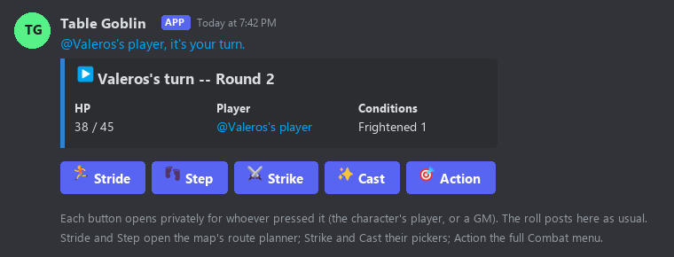

Change Log
Everything that has changed in Table Goblin, newest first. Jump to a month: November 2026 · October 2026
November 2026
Nov 19, 2026 · 5:49 PM ET
- 📖 Rules text is one click away.
Posts for feats, spells, actions and items no longer carry the full rules text under the result, so the channel stays easy to scan. The roll and its math stay exactly as they were. Instead, a button named for what you used, like 📖 Double Slice, sits on the post's button row. Press it and the full text shows to you alone, with its level, traits and source.
Want the whole table to read it, say during a rules question? Press 📢 Share with the table and it's posted for everyone. The buttons keep working after the bot restarts.
Table GoblinAPP📖 Double SliceTable GoblinAPPOnly you can see this📢 Share with the tableMockup, sample character. The first press shows the text privately; Share posts it for everyone.
- 🐾 Companions get their own turn buttons.
On your turn post, a character with an animal companion, familiar or eidolon now gets a button for each one, like 🐾 Companion: act & speak or 🦉 Familiar: act & speak. Press it and the Say & act form opens set to that companion, with its own Strikes, spells and actions, so it can speak and act in one step. End turn sits alone on the row below, so it's hard to press by mistake.
💬 Say & act itself now opens the form straight away for your character. If two companions share a type, the buttons use their names instead.
Table GoblinAPP💬 Say & actReadyRecall KnowledgeHero PointUndo🐾 Companion: act & speak🦉 Familiar: act & speakEnd turnMockup, sample character: Kyra with her wolf companion and her familiar.
- 🔮 Magus studies and the champion's blessing.
All of the magus hybrid studies now work as written:
- Starlit Span and Volatile Spark can Spellstrike at range. Starlit Span ignores lesser cover while in Arcane Cascade. Volatile Spark changes a concussive firearm's spell damage to whatever the target resists least, and adds Reloading Cascade to the Combat menu. Other magi still Spellstrike in melee only.
- Sparkling Targe can Shield Block magic damage of any type. A shield raised in Arcane Cascade also helps saves against magic.
- Resurgent Maelstrom fights well with improvised weapons.
- Unfurling Brocade gets its qi-infused fabric as a Strike.
- Twofold Tine, Aloof Firmament and Coiling Dance get their Cascade effects.
Champions pick a Blessing of the Devoted on the Choices tab at 3rd level:
- Blessed Armament puts a free rune on one weapon (or your handwraps) and adds its critical specialization.
- Blessed Shield reinforces your shield to your level.
- Blessed Swiftness gives +5 feet Speed.
- 🗺️ Spells that build things on the map.
- Steel Fortifications places three steel walls. They're difficult terrain and can be attacked, and a broken one sends everyone nearby diving for a save against bleeding.
- Buzzing Servants places its bees. They move each time you Sustain and leave wax behind, and area or splash damage kills them.
- Elemental Zone marks its area and boosts spells of its element against targets inside.
- Taking total cover, for example by ducking completely behind a wall, now stops Strikes against you until you come out.
- 🧪 More feats, spells and items work as written.
- Marvelous Mount: conjures a mount you ride at once. It is faster at higher ranks, walks on water from rank 3 and flies from rank 5. More than 10 damage at once destroys it.
- One with Plants: choose the plant form or merge into a plant. If the plant is damaged while you're merged, you're thrown out.
- Energy Shot: asks the damage type on each shot.
- Into the Fray: draws your weapon and opens a free first-turn Stride.
- Clear a Path: reads what you did earlier in the turn.
- Staff Nexus: the makeshift staff charges at daily preparations.
- Palatine Detective: picks its two cantrips.
- Nomadic Halfling: picks from every common and uncommon language.
- Torch: a lit torch in hand gets its own Strike.
- Striker: can Aim in melee.
- War Magic: is a start-of-turn button.
- Lock Item: always makes the victim drop the item.
- Religious Talisman: tracks available or destroyed. A talisman marked destroyed before this morning needs ticking again.

Nov 19, 2026 · 1:35 PM ET
- 🎲 Hero Points reroll the roll you pick.
Actions that make more than one roll, like Double Slice, Flurry of Blows, Twin Takedown, Double Shot or a Strike followed by a Trip, used to reroll the whole action when you spent a Hero Point. A Strike that had already hit could turn into a miss. Now the reroll offer lists each roll that missed or failed, by name. Pick the one you want to reroll, and only that roll and its damage are rolled again. Every other roll keeps its exact dice.
Combined damage is worked out again from the kept and rerolled Strikes, so Double Slice still applies resistance once to the total. Feats that change a reroll, like Boosted Reroll, affect only the roll you picked. If an action made just one roll, you still get the single Reroll button as before.
Table GoblinAPPOnly you can see thisNamisa misses with one Strike of Double Slice. Reroll which one?Strike 2: Shield Boss vs Cobbleswarm, 16, miss · Hero PointMockup, sample character: Strike 1 hit, so only Strike 2 is offered. With two misses, both are listed.
- ✨ Bless and other auras always start.
If a spell's rules data ever fails to load, an aura spell like Bless now still starts its aura by name, so allies inside get their bonus. A cast whose data can't be found now says so right on the post ("spell data not found, effects not applied") instead of quietly doing nothing. That way the GM knows to step in.
- 🧸 Pocket trinkets: enemies that feel like people.
A new campaign rule, off by default, turn it on from the GM dashboard's Rules button. When a defeated creature with an ancestry is looted, the bot rolls a d4, and on a 4 it was carrying a little worthless keepsake from its pockets. It might be a list of grudges including "stairs," a dead beetle named Sir Crunchington, or a letter home it never sent. Half the time the trinket comes from the creature's own ancestry list (over 50 ancestries), otherwise from a general list.
Trinkets show up as 🧸 Trinket · …, have no value and no Bulk, and can't be sold, so nobody mistakes one for treasure. GMs can leave out the silly entries or the ones that hint at a story hook. The new Pocket trinkets page has every table and a roller for tables that want them without the rule.
- 💬 Companions speak and act through Say & act.
If your character has an eidolon, familiar or animal companion, pressing 💬 Say & act now offers a button for each one, like 💬 Fang. That button opens the form already set to the companion, and its own Strike, spell and action list follows. The table sees the line in the companion's name, then what it does. Characters without companions go straight to the form as before.
Table GoblinAPPOnly you can see this💬 Who's speaking?💬 Kyra💬 Fang💬 PipMockup, sample characters: Kyra with her wolf companion Fang and her familiar Pip.
- 🚀 Starfinder: vehicles, injection weapons and solar weapons.
All 43 Starfinder vehicles can now be created with
/tgvehicle create, and/tgvehicle statusshows their Fortitude and abilities. Pilots get the Stunt action with all seven stunts and their penalties. 2- and 3-action Drives now make the keep-control check they always should have. Stunt Maneuver and Drift Racer work, and Vehicular Menace Demoralizes everyone you ran over with one roll.A few more Starfinder additions:
- Injection weapons like the Syringe Skewer and Force Needle load from the Combat tab and inject on a hit. With Inject Serum, the hit delivers the serum instead of damage.
- Solar weapons pick their traits and weapon group on the Choices tab. A Twin Weapons solarian's two weapons each take their own crystals.
- Fabricator prints items from creator capsules with
/tgcraft start. - A Crowd brush on the map makes packed crowds hard going, unless you have Crowd Surfing.
- 🧪 Dozens more spells, items and feats work as written.
- Spells: Lucky Number's That's My Number, Vibe Check's emotions, Summoner's Precaution (it pauses damage so you can sever the eidolon), and Scrap Shell (a critical hit waits for your reaction). Also Thunder Echo, Warp Terrain, Junk Grenade, Wishborne Shot and Mark of Blood.
- Items: Explosive Mine hits everyone near its square, and Bane Ammunition, Vaccine and Cantrip Deck work. Spell catalysts like Alicorn Hair are offered when you cast. Merciful Balm makes a weapon nonlethal, so its hits knock out instead of killing.
- Talking to creatures: Make an Impression, Request and Coerce check whether the creature shares a language. A beast with no language can't be talked to unless you have a way to speak with it.
- Crafting reaches legendary at 15th level in both games.
- Fixes: Prepare Elemental Medicine's affliction pick no longer fails to open. Religious Talisman is one simple toggle.
Nov 19, 2026 · 8:07 AM ET
- 🔫 Gunslingers and magi fight the way their class reads.
Every gunslinger now adds Slinger's Precision damage to non-repeating crossbows (+2, +3 from 13th level) and firearms (1d4, 1d6 from 13th level). It was missing for everyone before. The Drifter, Vanguard and Spellshot ways also have their deeds on the Combat menu. Reloading Strike swings your melee weapon and really reloads the gun in your other hand. Living Fortification raises your AC until the end of your first turn. Clear a Path Shoves with your weapon's bonus and then reloads. Energy Shot charges your next three shots with energy damage of the type you pick.
Magi get Laughing Shadow (extra Speed in Arcane Cascade and bonus damage on off-guard targets), Inexorable Iron (temporary Hit Points each turn with a two-handed weapon) and Twisting Tree (a staff that's agile in one hand and gains parry, reach and trip in two). War Magic turns a prepared spell you haven't cast into Sure Strike once a round, just before the big swing.
- 🚀 Starfinder feats and class features.
Most of Starfinder's low-level skill feats now do what they say.
- Tech Crafting and Serum Crafting are now required to craft tech items and serums, and each grants four formulas when you take it.
- Quick Install fits an upgrade in 3 actions at legendary Crafting.
- Vehicular Menace Demoralizes everyone you just ran over.
- Electrical Engineer recharges a battery weapon from a wrecked robot or a charging station.
- Principled Packer makes your containers carry more Bulk.
- Religious Talisman adds +1 to initiative while you follow your deity's edicts.
Several class and general feats are new as well. A mystic's Divine Bond or Xenodruid Bond adds the deity's or order's spells to their spells. A solarian's Twin Weapons adds a second solar weapon with its own damage type. Augmented Body puts an augmentation of your choice on the sheet. An operative's Ghost Aims as a free action while unseen, and Skirmisher fires a one-handed weapon without setting off ranged-attack reactions.
- 🧪 Potions, oils and gadgets that work at the table.
Dozens of level 1 and 2 items now apply themselves when used. A Retaliation potion burns or shocks anyone who punches you. Blast Boots let you jump without a running start. Oil of Potency makes a weapon +1 striking for a minute. Cat's Eye Elixir eases flat checks against concealed and hidden foes. A Smoke Fan spreads its smoke on the map. Mender's Soup makes your next Repair stronger. Chilled Fire Noodles shrug off fatigue's penalty, and a One-Hour Flower lights the way.
Starfinder medics get Antibiotic, Antitoxin, Hypopen and Sprayflesh. Sprayflesh lets a medic Treat Wounds on a patient who would otherwise be immune for an hour.
- ✨ More spells do everything their text says.
- Share Life splits an ally's damage with you.
- Sure Footing and Break with Fate counteract the effects holding someone down or bending their luck.
- The Everfull Moon turns you into a full battle form.
- Coiling Dance puts its aura on the tracker and makes allies' Strikes holy.
- Lock Item fuses a weapon to its holder's hand.
- Mark of Blood charges your blade to mark the next creature it cuts.
- Warp Presence makes the operative concealed or undetected to their attacker.
On the Starfinder side, Junk Armor, Junk Grenade, Scrap Shell, Bugfix, Adaptive Camouflage, Akashic Download and Corrupt Machine are among the new ones.
- 🩺 Healing and support feats, your way.
These all follow rulings from the table:
- Prepare Elemental Medicine lets you pick the affliction from the ones your patient actually has.
- Energy Fortification removes your patient's immunity to vitality damage, or to void damage for an undead patient.
- Swear Oath asks "Did your trigger happen?" when you Sustain it, and refunds the Focus Point if not.
- Personalized Poisoning tailors poisons you craft, not just ones from daily preparations.
- Backup Runic Enhancement no longer asks when there's only one answer.
- 🐞 Fixes worth knowing.
- Saves against poisons, diseases and curses now count as such, so Antidote and Antiplague bonuses finally apply.
- Casting Protector Tree now grows the tree.
- An unused Glow Rod in your pack no longer lights up the map.
- Nine Lives Catfolk make their recovery checks at the right DC.
- Hillock Halflings heal extra on a night's rest.
- Every Pathfinder heritage now works, among them Skilled Human's 5th-level expert skill, Warrior Android's weapon training, the extra languages of Nomadic Halflings and Newly Minted Automatons, and Kijimuna Gnome and Swimming Animal's choice in the builder.
- A lit Torch swung as an improvised weapon now adds its +1 fire.
Nov 19, 2026 · 12:13 AM ET
- 💬 Say & act: talk in character and act in one go.
Every turn post has a new 💬 Say & act button at the start of the second row. Press it and a short form asks for a Message and what to do Then: Strike, Cast a spell, use an Action, or just say it. Submit, and the line is posted as your character, with their name and avatar, followed by the usual Strike, spell or action picker. The table sees exactly what they'd see if you had typed
pc::"text"{strike}, without you having to remember the syntax.Post as lets the line come from any companion your character owns (eidolon, familiar, animal companion), and that companion then takes the action. Leave the message empty to just act. The GM's creature turn posts have the button too, speaking with the creature's token, so a villain can taunt the party right before it breathes fire.
Table GoblinAPP@KyraPlayer It is Kyra's turn.🏃 Stride👣 Step⚔️ Strike✨ Cast🎯 Action💬 Say & act⏳ Ready🧠 Recall Knowledge✨ Hero Point↩️ Undo⏭️ End turnKyraAPPSarenrae's light take you, fiend!Mockups, sample characters: the new turn post layout, and what the table sees after Kyra uses Say & act.
- ⏭️ No more accidental End turn.
End turn now sits alone on the bottom row of the turn post, away from the buttons you press all the time, so a stray click won't skip your turn. If you press it while you still have actions left, the bot asks first, privately: "End turn with 2 actions left?" with Yes, end turn and Keep going. Once you've used all three actions, it ends in one click as before.
- 🗡️ Damage the way the rules mean it.
Modular weapons, which switch between bludgeoning, piercing and slashing, now declare their damage type. At the start of each fight (
/tge begin), every player with one picks the type, and a Change Damage Type entry on the Combat tab switches it mid-fight for an Interact action. Resistances and weaknesses then see the right type: switch to bludgeoning against the skeletons.For GMs, the dashboard's 💥 Damage form now has a More options step for material (cold iron, silver), who the attacker was, and whether it was magical. Everything
/tge damagecan do is now a button away. - 🧪 Alchemy and healing feats come alive.
An investigator with Personalized Poisoning can tailor poisons made during daily preparations to a creature type. They show up in the inventory as 🎯 Construct · Giant Centipede Venom, and the tailored type takes −2 on its saves against them. Prepare a batch for the dragon hunt and everyone knows which vials to coat their blades with.
Healers get more too:
- Prepare Elemental Medicine, Energy Fortification and Pei Zing Adept treat patients at daily preparations.
- Performer's Treatment rescues a critically failed First Aid or Treat Wounds with a Performance check.
- Sanctify Water hands out holy or unholy water for a round.
- 🧠 Knowledge and planning feats.
Automatic Knowledge gives a free Recall Knowledge once a round in the skill you pick. Battle Planner lets you roll Warfare Lore before a fight and save the result. When initiative is rolled, a Battle plan option uses it instead of a fresh roll, perfect for the tactician who scouted the bandit camp the night before.
- ✨ Spells and class features, finished.
Several spells now do everything their text says:
- Delay Consequence can take back a hit that already landed, holds the attack's conditions, and remembers the hit even if the bot restarts.
- String of Fate asks both linked players whether to share the failure.
- Distortion Lens moves when you Sustain it.
- Directed Audience turns a composition into a larger cone.
- Double Take shrugs off a failed sight-based save until your next turn.
- Dimensional Assault's Cancel refunds everything when you change your mind.
- A champion's Lay on Hands on an oath target offers clear Heal or Damage buttons.
Nov 18, 2026 · 8:46 PM ET
- ⏳ Delay: pick your moment, and it happens on its own.
Delay has been simplified. When you Delay, the bot shows everyone who still acts this round and asks whose turn you want to come back after. Pick one and you're done: when that turn ends, you're slotted straight back into the order and your turn starts. There are no more "Return now?" questions to answer. If the creature you picked leaves the fight, you keep your place.
The same list has a Forfeit this turn option for when you'd rather sit the round out. Your end-of-turn effects (persistent damage, conditions ticking down) still run at the end of the round, so forfeiting never dodges them. Use it to hold the healer until the fighter has gone, or to let the scout wait behind the door until the brute kicks it in.
Table GoblinAPP⏳ Kyra delays. Return after whose turn?Return after whose turn? ▾Mockup, sample characters: the list a delaying player sees.
- 💥 GM dashboard: deal damage and fix creatures with a button.
The pinned GM dashboard gains two buttons. 💥 Damage (shown while a fight is running) lets the GM apply damage without typing a command. Pick who takes it from a list, then fill in a short form: the amount, the damage type, what dealt it, the caster and tradition for a spell, and whether it was a critical hit or nonlethal. It runs exactly like
/tge damage, so resistances, weaknesses and immunities all apply.🏷️ Traits lists the campaign's creatures, those missing traits first, and lets the GM set them. Traits matter more and more: they decide which skills Recall Knowledge offers, what parts a creature gives and which effects hit it. A hand-built creature now gets traits guessed from its name ("Goblin Bandit" becomes goblin, humanoid). When a creature has none, the GM is told, both on creation and in the dashboard's Fight field.
Table GoblinAPP💥 Damage🏷️ TraitsMockup showing the new fifth row; the rest of the dashboard is unchanged.
- ✨ Counterspell for players, and smarter reactions all round.
A wizard or sorcerer with Counterspell now gets the chance to use it. When a creature casts a spell that the character has prepared (or knows, with a slot left), the cast pauses and the player gets a button to counter it, just as monsters already could against players. It works on spells cast from a creature's stat-block actions too, like a vampire's Dominate.
Reactions also fire more often and more correctly:
- Trip, Shove and Grapple count as attacks, so "when attacked" reactions and a dragon's Tail Lash answer them.
- Word of Wisdom works against any failed save, including breath weapons and hazards.
- A wisp's Accord Essence shields its allies.
- Connective Current is offered when a marked enemy moves.
- 🦴 Monster Parts that make sense.
Salvaging now fits the creature. A wooden construct gives a Timber Limb, a Carved Joint or Heartwood (Nature). A flesh golem gives Stitched Hide, Bone or a Preserved Organ (Survival and Medicine). Every creature type offers two or three skills, and only a character trained in one can salvage.
Crafting requirements are checked too: a recipe that calls for a creature's part needs a part from that creature, and anything else needs the GM's Wave it through. Salvaging during a
/tgm breakbreather only uses up the break once the check is actually rolled. - 🌲 New magic at the table.
A batch of spells and impulses that used to just print their text now do the work.
- Arms of Nature puts a real wooden weapon in your hand for the minute. Elemental Weapon and Junk Weapon conjure their own.
- Stepping Stones lays a path on the map that lets everyone ignore difficult terrain.
- Protector Tree grows a tree that takes Strikes meant for the allies beside it.
- Dimensional Assault opens a teleport planner before the Strike.
- Darkened Forest Form, Distortion Lens, String of Fate, Swear Oath, Delay Consequence and Object Memory all apply their effects.
- 🧠 Smarter Recall Knowledge and cover for spells.
Recall Knowledge now offers only the skills that fit the creature's traits, plus any Lore that covers it. Goblin Lore works on bugbears and hobgoblins, and Fiend Lore covers demons and devils. Bone Speaker and Tactical Acumen add their own options. Spell attack rolls now count a target's cover on the map, just like weapon Strikes.
A few class features also became real:
- Oath of the Avenger: Lay on Hands now harms undead.
- Person of Interest: a free Devise a Stratagem against the marked creature.
- Solid Lead and Anoint Ally now apply their effects.
Nov 18, 2026
- ⚔️ Party turn blocks: the party acts together.
Party turn blocks are a new campaign rule (turn it on in
/tgm campaign_rules) that changes how initiative runs for the players. Whenever two or more party members come up back to back in the initiative order, with no enemy between them, the bot groups them into a single block. Instead of calling them one at a time in strict initiative order, it posts one "Party turn" message for the whole block, with a Take my turn button for each character in it.Any player in the block can press their button and take their turn at any point while the block is open. The order inside the block is whatever the table needs: the wizard can drop a spell first, the rogue can then slip into a flank, and the fighter swings last. Nobody has to wait for a specific person to show up before they can act. That makes play by post and busy game nights much more asynchronous. Whoever is online acts now, and the post updates and pings the players still waiting. When only one is left, their turn starts automatically. Once the whole block has gone, initiative moves on to the next enemy as usual.
Enemies keep their normal order, and every character's start- and end-of-turn effects (persistent damage, Frightened ticking down, sustained spells) still happen on that character's own turn. If a player is away, the GM can press Skip the rest: those players Delay, and they can rejoin later with a button.
Table GoblinAPP@ValerosPlayer @MerisielPlayer -- Kyra is done. Who's next?▶️ Valeros: take my turn✅ Kyra: done▶️ Merisiel: take my turn⏭️ Skip the rest (GM)Mockup, sample characters. The same message updates as each player finishes.
- 🐉 Monsters fight back with their reactions.
Most creatures have a reaction or two printed in their stat block: a goblin's Nimble Dodge, an orc's Ferocity, a guard's Shield Block, a wizard's Counterspell. Until now those were easy to forget in the middle of a fight, because nothing reminded the GM they existed. The bot now knows which reactions each creature has and when they trigger. When the moment comes, it asks the GM, so monsters fight as smart as their stat blocks say they should.
Reactions that change the result of an attack come before the roll. When a player swings at a goblin with Nimble Dodge, the Strike pauses and the GM gets a prompt with the reaction as a button. Pressing it adds the bonus to the goblin's AC for that roll. Ferocity and Shield Block are offered just before a creature would drop. Buck comes up when someone tries to ride a creature. Counterspell, Goblin Scuttle and Strike-back reactions trigger when players move, cast or shoot nearby, and "when attacked" reactions like Retaliate are offered after every Strike. Each prompt waits 30 seconds. If the GM doesn't answer, the attack goes ahead without the reaction, so the game never stalls.
Table GoblinAPP⏸️ Merisiel attacks Goblin Warrior with Rapier. Use its reaction before the roll? (it rolls without it in 20 s)⤾ Nimble DodgeLet it hitMockup. Only the GM can press these.
- 🦴 Monster Parts: loot the creatures themselves.
Turn on Salvage creature parts in the campaign rules and defeated creatures become a source of crafting materials. After a fight, a 🦴 Salvage button appears with the loot. A player picks a fallen creature and a skill they're trained in. Each skill takes different parts: Crafting for fangs, claws, horns and spikes; Medicine for blood, venom and glands; Survival for hide, scales, bone and meat; Nature for an animal's parts. The check is against the creature's level DC. A success gives one part named after the creature, like a Manticore Tail Spike, and a critical success gives two.
Parts can't be sold for coin. They're plot loot for crafting: a
/tgcraftproject can be made from a part. That turns monsters into adventure hooks. The alchemist wants a wyvern's venom gland for a new poison, so now the party has a reason to go hunting. Tables that play outside Discord can look up any creature's skills, DCs and parts on the new Monster Parts page on this site. - ⏳ Delay that tells you when you're back.
Delay lets you step out of the initiative order and act later in the round. It used to be up to you to remember to jump back in. Now, when you Delay (from your turn post's Combat menu or
/tge delay), the bot shows who still acts this round and asks whose turn you want to come back after. When that turn starts, you get ↩️ Return after this turn and ⏳ Keep delaying buttons, so you never miss your moment.Your end-of-turn effects wait until you actually act, so delaying doesn't make persistent damage hit early. If the round ends before you come back, your turn is lost for that round and those effects happen then. It's perfect for the cleric who wants to see how the fight goes before deciding who needs healing, or the archer waiting for the fighter to clear a line of fire.
- 🌟 Mythic play and a fresh start every session.
Mythic content (callings, mythic feats, the 12th-level destiny, Mythic Points, mythic spells and items) is now a campaign rule. It's off by default, so it only shows up at tables that are running a mythic game. The GM turns it on in the campaign rules, then uses the GM dashboard to make a character mythic when the story calls for it, or to take it away again.
The dashboard also gets three new buttons. 🌅 New session resets everyone's Hero Points to 1 and refills Mythic Points with one press at the start of game night. ⚠️ Condition puts a condition on anyone in the fight (a trap that makes someone Sickened, a spell the GM resolved by hand) without typing a command. 🎚️ Creature toggles flips the situational switches from a creature's stat block (bonuses that only apply in certain conditions).
Table GoblinAPP🌅 New session⚠️ Condition🎚️ Creature togglesMockup showing only the new buttons; the rest of the dashboard is unchanged.
- 🎯 The rules take care of themselves.
Plenty of smaller rules used to depend on someone at the table remembering them. They now happen automatically, which means fewer pauses to look things up and fewer "wait, that should have…" moments:
- Incapacitation works on every save, and one flourish per turn is enforced.
- A single hit of twice your maximum HP kills outright.
- Dispel Magic and Cleanse Affliction counteract the effects the bot tracks.
- Reloading needs a free hand.
- Eternal Torch, Share Burden, Protector's Sacrifice, Command and Sanctuary now work at the table, not just on paper.
- Air Cushion and Gentle Landing still save a falling ally after the fact.
- A creature's worn magic items work, and keep working when a player loots and invests them.
- Pathbuilder imports check every weapon's dice and runes and tell you what they fixed.
- The turn post lists one action per line with real costs (Bless counts as 2), and the bot checks its own rules data every time it starts.
Nov 17, 2026
- Updated source material: our Pathfinder and Starfinder source material is updated. It now includes the Feybound bestiary's fey creatures, the Vaultlines shivver variant and new item, spell and feat effects, and Starfinder's technomancer archetype rules. The fey creatures reprinted in the Feybound bestiary (the Wild Hunt, spriggans, the Jabberwock and more) are found from their old names and books too, and creatures already in your campaign keep working; an Ether Sprite is now a Murxie. To Battle! costs 1 action, Animal Form uses one combined effect, feat summaries no longer drop spell and condition names, and the Hellknight Dedication's Lore shows as Infernal Knight Lore.
- Bonuses follow the rules more closely: a bonus from an effect, spell or item that only applies in a situation the bot can't check (for example "while you are flanking") is now listed as a reminder under the roll instead of always being added. Bonuses that only count against a kind of effect or for one skill action (such as +3 against confused, frightened and stupefied) apply exactly there. If a bonus you rely on became a reminder, tell your GM or us.
- Class and archetype actions on the sheet: every class and archetype action now runs straight from the sheet's Combat menu, the same as its slash command. A refused action is no longer recorded as taken, action costs follow the rules (Pack Movement is 2 actions; Transcendent Deflection and Clean Take are reactions), and several sheet entries that failed now work (Hedge Mage and Beast Gunner setup, Battle Harbinger's "Keep by hand", Runesmith Trace with an action count). Thaumaturge Adept and Paragon, Innovator Set/Show and Keepsake are only offered to the characters who can use them; Light Mortar Inventors get Show and Pick. The 86 archetype chat-trigger actions (
{suplex}and friends) are on the sheet too, with an optional narration box, and listed on the Class Commands page. - Allies and companions picked on the sheet: picking an ally now targets that character itself, and a GM using a player's sheet finds that player's companions.
- Runes: swap a rune on your item with a loose rune you own (one downtime day, a Crafting check, 10% of the item's rune). A swap between two items costs 10% of the higher-level rune. When the GM picks another character as the crafter, it runs straight away.
- Runesmith Invoke and long lists: Invoke now offers your current runes to pick from, each with what it's on. Every long list on the sheet pages with Previous / More.
- Prophesied Monarch: My Kingdom, My Blood plants its 60-foot aura for 2 actions; sharing damage through it costs the reaction of whoever takes the damage, while the aura is up.
- Small fixes: clearing a Mortal Herald's empowered weapon and leaving Anchor Stance are free; Runesmith Trace with 2 actions counts 2; the Battle Harbinger's duplicate Sustain entry is gone. The website has a Join r/TableGoblin button and its top links follow the side menu's order.
Nov 16, 2026
- GM dashboard buttons: the pinned GM dashboard now has buttons that open private panels and forms, so most GM tools no longer need a typed command. GM Screen, Break, Give (pick a character, then a kind of item, then the item from a searchable list; gold or credits too; choose whether the table sees it), Loot & Treasure, Recap and Lookup; fight controls that follow the fight (Start a fight, Add creature with a side picker, Roll initiative, Begin, Next turn, End fight); NPCs (a narrative NPC, a combat NPC or a creature from the bestiary, free for every campaign); Homebrew, Import file and Maps; and Rules, Players & GMs and Environment. Premium options only show for subscribed campaigns. Existing dashboards pick the buttons up on their own.
Table GoblinAPP📖 GM Screen☕ Break🎁 Give💎 Loot & Treasure📜 Recap🔍 Lookup⏭️ Next turn➕ Add creature⏹️ End fight🗺️ Maps👹 NPCs🧪 Homebrew📥 Import file📏 Rules👥 Players & GMs🌲 Environment
Mockup, sample campaign. The second row follows the fight: ⚔️ Start a fight with none running; Add creature, 🎲 Roll initiative, ▶️ Begin and End fight while one is being set up. Every button opens a private panel or form.
- Player buttons on your turn post: End turn, Ready, Recall Knowledge (picks the right skills for the creature you targeted, best first), Hero Point (reroll your last roll, or Cheat Death while dying; it appears the moment you get one) and Undo (your own last move this turn). Stride, Step, Strike, Cast, Ready and Recall Knowledge on the turn post now work only on your own turn; reactions and readied actions still work any time.
/tge nextcan no longer skip someone when a player and the GM press it together.Table GoblinAPP@KyraPlayer It is Kyra's turn.🏃 Stride👣 Step⚔️ Strike✨ Cast🎯 Action⏭️ End turn⏳ Ready🧠 Recall Knowledge✨ Hero Point↩️ UndoMockup, sample character. Hero Point shows only while the character has one. If the post has no room for the second row, it shrinks to End turn and ➕ More.... The battle map image is left out here.
- Rolls copied to your dice channel: when your campaign has a dice-roll channel (or the Society dice thread), every public roll is also copied there with a link back to it, including the GM's creature rolls. Secret checks, private replies and anything from a creature the party can't see are never copied.
- Hidden creatures stay hidden: when the GM moves or acts with a creature the party can't see, every line at the table says hidden creature with no name, Hit Points or distances, and the GM channel gets the full line. Its reaction alerts go to the GM only. A creature the party can't see doesn't block your route planner; if your move runs into it, you stop in front of it and learn the square it's in.
- New ways to move: Ghostly Stride passes through enemies; Stone Passage passes through stone walls (paint the new Wall (stone) terrain; Wall of Stone and Rock Rampart count); Burrow goes underground (surface terrain and hazards don't apply, a Surface button comes back up, and you can end beneath a creature); Water Strider walks on water (2 or 3 actions); flyers pass over creatures below them. Swim Through Earth is sustained and surfaces you prone and Slowed 1 when it ends. The tramples (Centaur, Sarangay, Eidolon's Trample, Trampling Stride), Underfoot Stampede! (straight lines), Step Between (along a wall) and Ash Strider move through creatures and affect them; March the Mines and Tandem Movement can Burrow. Feat Strides use the Speed you're moving with, so a flyer Sprints in the air.
- Izalguun posture: Change Posture (1 action) is on the Combat menu and switches between bipedal (Speed 20, Stretching Reach) and quadrupedal (Speed 30); the posture feats change it as their text says, and Launching Jump now costs 2 actions (1 with Quick Jump).
- Moving runes takes downtime, as the rules say: a rune the GM gives you lands in your pack. Attaching it, moving a rune from one item to another, swapping two runes, or taking one off onto a Runestone are now GM Core's Transferring Runes: one downtime day and a public Crafting check (10% of the rune's Price to move one; free from a runestone). Another player's character can do it for you once their player confirms, and a hired crafter needs no check.
/tgm give money:gives gold, or credits in a Starfinder campaign. - Homebrew equipment (GM, premium): the Item Creator and
/tgm homebrewnow make worn or held equipment that gives item bonuses (Perception, any skill or Lore, saves, AC, attacks) and resistances, checked against printed items of the same slot. You can invest 10 items per day, as the rules say. - Maps after a subscription ends: a fight already running keeps its maps (with a reminder); the next fight needs the subscription. Viewing and tidying saved maps stays free for campaigns that have subscribed before. Saved library maps moved to their own storage; nothing to do on your side.
- Fixes: the Undo button after a move works again, a rule that removes an immunity no longer grants it, and the site's tool pages no longer scroll sideways on a phone.
- Every move follows the same rules, and map previews show only what the party can see: moving with
{stride},{step}, the turn post's Stride / Step buttons or a feat (Tactical Advance, Elf Step, Crawl...) now gets every check/tgmap movemakes: a creature that is overloaded, immobilized, grabbed or paralyzed can't move, a prone one can only Crawl (or Stand first), Fly and Swim Speeds count, an enemy champion's Divine Wall makes the squares around it difficult terrain, and Light Step and the other terrain feats ease the route (a feat that says it ignores difficult terrain now really does). A refused feat move costs nothing. Typing adestinationin/tgmap movenow has the Undo button, ends Take Cover and counts Light Step. The route planner never draws a creature the party can't see, and a planner posted in the channel always shows the players' view, even when the GM moves a monster there (the GM sees the whole map privately)./tgmap areaposts the players' view too. And after a move made in the channel, whoever pressed Commit gets their own view of the map in a message only they can see. - Voluntary flaws (legacy), and fleeing neutral creatures' loot:
/tgm campaign_ruleshas a new tick, Voluntary flaws (legacy), off by default (Society campaigns may use it too). It is the old Core Rulebook rule: while building, a character may take two extra attribute flaws and gain one extra free boost. With it on,/tgchar buildand the site's character builder add an optional Voluntary Flaws step right after the attribute boosts: pick the two flaws, then the extra boost. The two flaws go on different attributes, except one your ancestry boosts by a fixed boost, which can take both; the extra boost can't go on an attribute your ancestry boosts unless a voluntary flaw went there. Your choice is kept in the character's recipe, and the campaign code carries the rule so the site builder offers the step too. Also: a neutral creature the GM removes from a fight while it still has Hit Points now gets the same private "Drop its items as loot?" question as an enemy. - See the map after you move: after a move with
/tgmap move(a typeddestinationor the arrow-button planner) or the turn post's Stride / Step buttons, your private reply now shows the battle map once the move is done: your character's own view for a player (the same as/tgmap show, never more than the table's copy), the whole map for a GM. During setup, players still see no map until combat begins. Moves made in the channel ({stride},{step}, a feat's move) use the channel's map as before. - Clearer error messages and chat-trigger help: when a command fails unexpectedly, the bot now shows a short incident code (give it to your GM or the bot's owner) instead of a technical error. Typing a chat trigger the bot doesn't know (
pc:: {zzz}) now lists your character's own abilities first, then the triggers everyone can use./tge startwith an encounter file now tells the GM how many custom creatures the file brought in as campaign NPCs. Help text that still mentioned the old daily-prep command now points to the overnight/tgm break. - Fewer two-hand questions, fled monsters and fallen allies in the loot: the Strike's "grip it with both hands?" question now comes once per fight for each weapon, and again only after your grip on it changes (both hands, letting go with one, drawing or swapping), not on every turn. When the GM removes a monster that is still standing (it fled or surrendered) with
/tge remove, it keeps its things, and the GM is asked privately whether to drop them as loot. An allied or neutral creature that dies is now looted the same as a monster; player characters and companions (animal companions, eidolons, familiars, summons) never are.
Nov 15, 2026
- Defeated monsters drop their unused potions, and a second hand on a weapon is an Interact: when a monster is defeated, whatever consumables it didn't use (potions, elixirs, bombs, scrolls, talismans) go into the fight's loot alongside NPC Builder gear, and
/tge endposts them for the party to claim, even when the fight had no loot payout. Removing a defeated monster with/tge removedrops its things right away. Nothing is handed to a player by itself, and each item is offered once. In a fight, on your own turn, putting your second hand back on a weapon (one hand to two) is an Interact (◆): through/tgchar weapon set, the Gear tab or Change Grip, which now shows as Interact (or a free Release when you take a hand off) in the turn summary. Striking with a two-hand or fatal aim weapon held in one hand asks first whether to grip it with both hands for the bigger die. - Monsters carry their potions, real action costs, reactions and drawing weapons in the turn summary: every bestiary creature now carries the consumables its stat block lists (potions, elixirs, poisons, bombs, talismans, scrolls, wands) in its inventory, not only the bomb throwers. The GM can use them through the usual Use Item list or
{item}(a creature drinking its own healing potion), and each one used is gone. Creatures already in your campaigns get theirs too, unless you edited their Strikes. A bomb the stat block lists with a quantity of 0 now counts as not tracked, so it can be thrown without limit (it used to be refused). The turn post's This turn summary now shows each action's real cost (◆◆ for a two-action activity, ◇ for a free action, ⤾ for a reaction) and counts free actions as 0; an action whose cost the bot doesn't know counts as 1. A creature that moves when it isn't its turn (a reaction Step, made by its own player or with{step}) is posted as a reaction and listed under Reactions in that turn's summary; a GM moving someone else's token is not posted. On your own turn in a fight, changing what you hold (/tgchar weapon set, the Gear tab's Equip, or drawing a weapon when a Strike asks) now counts as an Interact and is posted; taking a hand off a two-handed weapon is a free Release. Outside a fight, or on someone else's turn, it is still just your sheet. - Two initiative rules for your table:
/tgm campaign_ruleshas two new settings. Merge creature initiative (a tick in the first dropdown, off by default): your enemy creatures roll one initiative together, using their average Perception (rounded down). Each still takes its own turn, one after another on that number, so you can run all the monsters back to back and then hand over to the players. Reinforcements that join the enemy side later take the same number instead of rolling. Allies, companions, player characters and hazards roll their own. Initiative ties (a new button that opens two dropdowns): when a player ties with a creature, choose NPC First (the standard rule, the default), PC First, or Rollies (the bot rolls a d20 for the player and one for the other side, rolling again on a tie, and posts the roll-off). When two players tie, choose Highest Perception (the default, with rollies if that ties too) or Rollies. Both apply from your next encounter; a fight already running keeps the rules it started with. To make room, the Uncommon and Rare switches are now two ticks in the first dropdown instead of a button. - Every action posted as it happens, monsters' bomb supplies, Quick Alchemy counted, and shorter aliases: in a fight, every action now shows in the channel in the order it was taken. Moves made from the turn post's Stride / Step buttons or
/tgmap movenow post a line ("🏃 Bob Strides (25 ft) to C4."), and so does getting an item out of your pack, a secret check, or any action that used to answer only you. Actions that already posted (Strikes, spells, rolls) aren't posted twice. The turn post now keeps a running This turn line, updated as you act: Bob's turn: ◆ Stride (25 ft) · ◆ Strike · ◆ Step (5 ft) (3 actions). A creature the party hasn't seen is shown as hidden creature, and the GM gets the full line in the GM channel. Typingpc:: I dash past the guard {stride}now keeps your words as the description of the move instead of dropping them. Alchemists: throwing a known bomb formula you haven't made yet now says so: it is Quick Alchemy and a Strike, two actions (one versatile vial), both posted and counted; with Quick Bomber it is one action, as the feat says. GMs: monsters from the bestiary now carry the bombs their stat block lists (an alchemist goblin with 6 alchemist's fires has 6), and their bomb Strikes use them up; when they run out the Strike is refused with a note to you. Give a monster more with/tgm give. Monsters already in your campaigns get their supply too, unless you edited or renamed them. A homebrew monster with a bomb Strike and no inventory still throws without limit. New aliases can be at most 32 characters (existing longer ones keep working); an alias the bot makes from a long name is shortened and the reply says so. - Throwing bombs, and homebrew removal: bombs and other throwable items you carry now show up in your Strike list too (the sheet's Combat tab, the turn post's Strike button and
{strike}), with how many you have: Acid Flask (Lesser) (thrown, ×3). Every throw now uses up what was thrown, hit or miss: a carried bomb (the last one leaves your sheet), a Quick Alchemy item or quick vial, and bombs thrown by feats such as Quick Bomber and Bombing Run. The Versatile Vial Strike spends one of your versatile vials (a quick vial first), and a known bomb formula's Strike uses the bomb Quick Alchemy made, or else one vial; with none left the throw is refused. Daggers and javelins aren't used up. After Quick Alchemy makes a bomb you get a Throw it now button: pick the target and it's thrown (one more action). An item that looks like a bomb or vial but that the bot doesn't recognize is listed as "not recognized; ask your GM" instead of being left out, and Pathbuilder's "Lesser Alchemist's Fire" spellings are recognized. GMs:/tgm homebrew removeof an item characters hold now tells you who holds it and asks first; confirming removes it from every inventory (NPCs too), takes worn or readied copies off and recomputes Strikes and Armor Class. A character imported from another campaign with a homebrew item of the same name as one of yours keeps it inactive until you press Confirm in your GM channel. - Turn buttons and every other button can no longer fail for a long name: on Nov 15 a long campaign name plus a long character name made
/tge nextfail, because Discord limits how much a button can carry. Buttons now carry a short code for the campaign (and for anything else long), so/tge nextand every other button work whatever your campaign or characters are called. Buttons already posted keep working. Nothing else changes. - Homebrew weapons, armor and shields (GM): GMs can now make their campaign's own items with the new
/tgm homebrewcommands:addmakes one in Discord (type, name, level, price and its stats, such as1d8 Sfor a weapon or4/1/-2/-5/3for armor),editopens a form,removedeletes one, andexport/importcarry items as a file. The new Item builder page builds them with live checks against the printed items (die sizes, traits, Armor Class, Hardness and price for the level, with the three closest printed items), for Pathfinder 2e or Starfinder 2e, and downloads the file for/tgm homebrew import. Only a broken item or a printed item's name is refused; everything else is a warning you can keep. A homebrew item works everywhere a printed one does in your campaign:/tgm give, shop shelves (/tgshop stock_add), the loot pool (/tgloot add), Strikes, Armor Class and shields; it is never stocked or rolled on its own. Characters' copies follow your edits. Your own traits are shown but don't change the rules, and neither does the description. Homebrew stays in its own campaign: a character moved to a campaign without that item keeps it on the sheet, inactive, with a note to talk to the GM. Society campaigns can't have homebrew. Equipment (worn and held items) is next. Premium coming:add,editandimportwill need a campaign subscription when subscriptions start (free while we test). - Blood Drain after a Strike, and the range question timing out, as the owner ruled: a void zombie's and a giant bloodseeker's Blood Drain now needs its previous action to be a successful Strike against that creature (with the feeding tendril or proboscis, as the text says) and is refused otherwise; with no target picked it drains the creature it just hit. A mandragora swarm's Blood Drain works only right after its Swarming Bites, against an enemy that took damage from it. When nobody answers the no-map range question, the Strike rolls without the range penalty, as before, and now says when a penalty would have changed the result ("in the 2nd increment or farther it would have been a failure, not a success") so the GM can adjust.
- Monsters' skill checks against your defenses, and Middenworm's Blood Drain: a creature ability that rolls one of the creature's skills against each target's Fortitude, Reflex, Will or Perception DC now runs from the creature's Combat menu (Abilities) instead of only posting its text: a cobbleswarm's Grasping Bites, a ratfolk shank squad's Dirty Tricks, a vampire's Drink Blood and about 150 more. The creature rolls once (with its multiple attack penalty when the ability is an attack; Grasping Bites counts as two attacks), and each target gets its own degree: Prone, Grabbed or Restrained by the creature (with an Escape DC), damage and the rest, as the text says. A swarm's "each creature in its space" and "within 5 feet" are read from the battle map when the creature is on it; otherwise the GM picks the targets. Anything the bot can't do in an outcome (moving someone, stealing an item, an "if") is posted with that result. Drink Blood is automatic against a Paralyzed, Restrained or Unconscious creature, and against a creature already drained it raises the drain instead of healing the vampire. A Middenworm's Blood Drain now raises a drained creature's Drained by 1 (up to Drained 4) and makes the middenworm Quickened. A GM or Server Administrator can now import a character file from the previous security version directly with
/tgchar import; a player is still asked to export it again. - Blood Drain, monsters' missing Strikes, and the range question on every ranged Strike, as the owner ruled: a bloodseeker, giant tick or Glass River midge attached to a creature can now use Blood Drain from its Combat menu (Abilities): it deals its damage to the creature it is attached to, gains that many temporary Hit Points, and leaves the creature Drained 1 until it receives any healing (any healing now ends that Drained). Giant leeches, giant mosquitoes, mandragoras and the like drain a creature they have Grabbed or Restrained, with the save their stat block gives. Attach's 1 bleed damage when the creature is killed or pushed away now happens only if it actually drained blood from its host. Monsters already in your campaigns get the damage-less Strikes they were missing (the bloodseeker's Barbed Leg, webs, tongues), unless you edited or renamed them. With no battle map, every ranged Strike now asks which range increment the target is in, not only the sheet's Strike and the chat
{strike}: feat Strikes such as Double Shot and Triple Shot, and reaction Strikes, ask once per target. - Exports and campaign codes use a new security key: Table Goblin now signs exported characters and recipe files with a key of its own. A character file exported before this update can't be imported any more: you'll see "This file is from a previous security version of Table Goblin. Please export it again." Export the character again with
/tgchar exportand import the new file. A recipe file from before the update still imports its choices, but brings only a starting kit of gear until you export it again. Every campaign also has a new campaign code; the bot updates the pinned code in each campaign's character channel for you, and the old code still works in the builder. - Ranged Strikes measure the range, Attach, and more monster rules, as the owner ruled: on a battle map a ranged Strike now knows which range increment the target is in: −2 to the attack for each increment past the first, and a target beyond the sixth increment can't be attacked at all (the bot says so before any ammunition is spent). With no map, the sheet's Strike and the chat
{strike}ask which increment the target is in before rolling. Point Blank Stance now adds its +2 damage in the first range increment and drops the volley penalty, and Clinging Remnants, Flying Blade and Muzzle Flash work only in the first increment, as written. A target flanked on the map counts as off-guard for a sea devil's Bloodletting. A bloodseeker that hits a bigger creature attaches to it and moves with it; killing it or shoving it off leaves its bleed on the host, while Escaping it doesn't. Monster attacks that deal no damage (a bloodseeker's barbed leg, webs, tongues) are now imported. A mugrisant's Imbed Tooth stops after the target's third turn, and a deathless zealot's Field of Slaughter now gives its allies in the aura its critical-hit bleed and keen weapons. - Faster Strikes, and the Commander's banner on your pack: a Strike, the character sheet and typed chat commands such as
{strike}are noticeably quicker (a Strike takes about a third of the time it did): the bot no longer looks up every item you carry again for each follow-up button it might offer, and a chat command remembers your character for the rest of that one message, like slash commands already did. Nothing changes in what you see. A Commander now has a Banner worn on my pack toggle in the sheet's Situational toggles: while it is ticked, falling unconscious (or dying) doesn't drop the banner, so its aura and your magical banner stay up. The commander's banner pick on the Choices panel can't be changed during a fight (designating a banner takes 1 minute) -- change it after the fight. - Persistent damage with rules of its own, as the owner ruled: a bearded devil's Infernal Wound bleed now goes on with its own DC 20 flat check, and an assisted recovery against it (Administer First Aid's Stop Bleeding, Emergency Medical Assistance, Assistive Goo Gush) rolls against DC 15 instead of the usual 10. Bleed the text calls cumulative adds up with each hit (a bloodlash bush's vines, to at most 5; a wood scamp's thorns). Bleed that lasts "as long as the hook remains stuck" or "for the next 3 rounds" is applied, with a note saying when it ends. "To Prone targets" checks whether the target is Prone, and a skreeling's "within reach of other skreelings" is measured on the battle map -- with no map, the GM gets a Yes / No button. A monster Strike whose only damage is persistent (an alchemist's Acid Flask, Ioton's Touch, Annihilation Ray) deals no damage on the spot and puts the persistent damage on instead, including the monsters already in your campaign. Monster abilities that add bleed or other persistent damage to their Strikes without being listed on them (a pusk's Vicious Criticals, a sea devil's Bloodletting, the urdefhan Shauth Bite) now apply it on the Strikes they name. A "1 to 3 actions" monster ability (Thorny Claws, a troop's formation attack) asks how many actions it uses and deals only that much damage.
- Banners, hidden creatures and traps, as the owner ruled: a creature your party has seen once in a fight is never shown as hidden creature again in it, even after it hides. A Commander with several magical banners picks which one is their commander's banner on the Choices panel. A Commander who falls unconscious drops their banner: its aura stays off after they wake until they use Retrieve your banner next to it. With no battle map, a planted banner asks at each ally's turn whether they are within 30 feet and renews their temporary Hit Points on a yes.
/tghazard reset(and a trap that resets on its own) hides a found trap again. Wilderness Spotter no longer works inside a built structure (the new Structure environment tag), and a second Wilderness Spotter can't pick the same terrain in the builder. Assistive Shove and Riptide no longer ask whether your ally is willing. Renaming a library map and clearing terrain stay free when premium starts. Tidal Faith Worshipper gets its cantrip pick back. - More feats that now work on their own: Telluric Power adds its damage bonus to your melee Strikes while its toggle is on (tick it on the sheet when you and your target stand on the same earth or stone); on the map it is left off when either of you is swimming in deep water. A monster's own breath, spit or curse now tells your save what it is, so Duck! works against a Huge or larger creature's area attack, and feats like Haughty Obstinacy and Know Oneself see a monster's mental or emotion effects. A failed Intimidation Coerce against a character with Haughty Obstinacy becomes a critical failure, and any Coerce that critically fails now keeps the target immune to your Coercion for a week. Shadow Mark: after you roll Avoid Notice (shadowing) against someone, a fight that starts with both of you gives them the penalty to initiative and to noticing you. Subtle Theft: a Steal right after your Deception Create a Diversion keeps you undetected. Pickpocket: new
/tgcheckaction Palm an Object (closely guarded) (-5 without the feat). - Re-armed traps must be found again, and more ways to spot them: when a GM resets a map and picks Arm them all, the hazards the party had already found are hidden again and must be spotted again. A Thaumaturge's lantern helps spot hazards only while it is in hand (one hand on a weapon is fine; both hands full or empty hands are not). Wilderness Spotter now works: pick its terrain on the sheet's Choices (once per time you took the feat, changeable, with a reset), and in that terrain -- a forest, swamp, snow... square on the map, water, or the encounter's or campaign's environment -- you roll Survival instead of Perception to notice traps when it is better. Urban Survivalist does the same for any hazard in a city, station or settlement, and can then Disable it with Survival. With no map needed: Savvy Architect (tick its toggle on the sheet while the hazards are built into a structure), Verdant Sense (living hazards such as molds are recognized from their traits) and a spirit-singer being played (a new toggle) give a check without Searching and their bonus. Feeding a potion with no map now only asks whether the creature is within your reach -- allies are always willing.
- Persistent damage lands when it should: a monster whose Strike says "on a critical hit, the target takes 2d6 persistent bleed damage" now applies it on a critical hit only; one that bleeds on any hit doubles it on a critical hit, unless the text gives the critical hit its own amount ("1 bleed, increasing to 1d4 on a critical hit"); "succeed at a Fortitude save or take 1d10 persistent bleed damage" applies it on a failed save, with the critical failure's own amount when there is one. Flat amounts ("1 persistent bleed damage") and dice with a bonus ("1d6+2") keep their whole amount. The same goes for monster and hazard abilities, feat and item saves, a hazard's damage, a feat's Strike ("on a hit, 1d6 persistent bleed damage") and a poison's or disease's stage: the damage goes on the target as real persistent damage, with the end-of-turn roll and DC 15 flat check you know. Monsters whose Strike listed its bleed first (Razorbones' claw) now deal their real damage plus the bleed -- including the ones already in your campaign. A monster's reaction that its hit triggers (Pyrefowl's Pyrebite) gets a button too. Persistent damage with rules of its own (cumulative bleed, a different flat check) now works too -- see the entry above.
- Companions count as part of their campaign everywhere: an animal companion, familiar, eidolon or other companion now always carries its own campaign, like the character it belongs to, so the few checks that ask "which campaign is this creature in?" no longer pass a companion over -- for example the "everyone within 30 feet" picker now appears for a companion's ability, and a companion can call on an ally's Vital Beacon. A creature from another campaign is still refused.
- A little faster: a command no longer reads the same character from the database over and over, and commands that only need a character's name (such as
/tgchar active,/tgchar deleteor/tgloot claim) no longer load the whole sheet. Spells and effects that last minutes or hours end the moment the round or the game clock runs them out. Nothing to do on your side.
Nov 14, 2026
- Monsters already in your campaign get their apostrophe abilities back, and
/tgcheckanswers "not found" at once: a creature added before the apostrophe fix whose Strike only named an ability like Prince's Curse now reads that ability from the bestiary and runs it on a hit, like a creature added today (a creature you renamed or edited keeps what it has)./tgcheckon a character that doesn't exist now says so privately straight away, instead of a public "Table Goblin is thinking..." first. Unbelievable Luck now really lets you use the Unexpected Sharpshooter Dedication's Accidental Shot once per hour instead of once per day. - Monsters, hazards and poisons read more of their own rules: the bot now reads every way a description writes a save, a damage roll or an area, so more of them work: monster abilities written the older way (a swarm's Wing Buffet) roll their save, breath weapons that recharge on a hidden roll (Winter Breath, Ink Cloud) count down, poisons that deal two kinds of damage (Coppermouth Venom, Burning Venom) deal both, healing items like Bolka's Blessing heal, and a few more hazards can be disabled with a roll. Descriptions also lose the stray brackets ("damage]") some of them showed.
- Names with apostrophes work everywhere: feats, actions, items and creature abilities with an apostrophe in their name (Cat's Luck, Poet's Fritter, You're an Embarrassment!) are now matched however the source spells them, so the rules that name them apply: a monster's Strike now runs its own named ability with an apostrophe instead of only naming it, Poet's Fritter does what it says, and the Starfinder NPC builder lists the Grenade Launcher (Commercial). Nothing to do on your side.
- Clearer refusals, and no flash of "thinking..." before them: a command a player can't use now says the same thing everywhere -- "Only a campaign GM or Server Administrator can do that." (or "...can act on another player's character.") instead of a different wording per command. A class command for the wrong class ("isn't a Bard"), a character that doesn't exist, or a
/tgecommand on someone else's character now answers privately at once, instead of first showing a public "Table Goblin is thinking..." that then disappears. Starfinder campaigns: buttons that keep working after a restart (the build wizard, starting gear, sheet panels) now always use your campaign's Starfinder content. - Big battle maps always post, and class spells stay up to date: battle maps are now posted as JPEG pictures, a few MB instead of 10 MB or more, so a large map no longer fails to appear in a server without boosts, and it posts faster; uploaded maps are stored the same way (you can still upload PNG, JPG, WEBP or GIF up to 20 MB). When the bot learns a new spell that a class, subclass or feat grants, your character picks it up the next time you use it -- no command to run. A creature you add whose name matches a bestiary creature gets that creature's traits (goblin, undead, ...) as soon as it is created.
- No more "This interaction failed" on slow commands: commands, buttons, dropdowns and forms that have to load a character, draw a map or check the channel first now answer Discord straight away -- a slash command shows Discord's own "Table Goblin is thinking..." for a moment, a button just stops spinning -- and then give the same answer as before, public or private as it always was. Before, a busy moment or a fresh restart could make them miss Discord's 3-second limit and fail.
- Faster battle maps: maps are now drawn in the background, so the bot keeps answering everyone else while a big map is redrawn, and the move planner and grid calibration buttons answer straight away and then show the new picture. Character sheets also load a little faster. Nothing about how the maps look has changed.
- Spotting traps before you step on them, map resets, and feeding potions: walking into a hidden hazard on the battle map now follows the rules for noticing it: if the hazard has no minimum rank, every character gets a secret Perception check against its Stealth DC; if it needs one ("trained"), only a character with that rank who is Searching -- or has Trap Finder, Hazard Finder, Danger Awareness, Seek the Hidden Glyphs, Haunt Ingenuity, Sixth Sense or a similar feat -- gets it, with that feat's bonus. Spot it and it doesn't go off: your move stops on the square before it and the party sees it; miss it and it goes off. When the GM puts a library map on, uploads a new map or clears the terrain, the bot asks privately whether to arm the map's hazards, disarm them, or leave them as they are.
/tghazard savewith Everyone Duck!'s downgrade now shows the damage each creature should take by its save. And a potion or elixir can only be fed to someone within your reach who is an ally or too helpless to resist: on the map, creatures out of reach and conscious enemies aren't listed (and the prompt says why); without a map you confirm they're in reach. - Hidden creatures stay hidden in area results, and the Commander's banner can be planted: when an item's template, a placed cone or burst, or an "everyone within 30 feet" catches a creature the party hasn't seen, the post calls it hidden creature -- its save and damage still show -- and the full result goes to the GM's private channel. Statement Strut and Sonic Strafe placed on the map take the squares the move turns at, up to the distance the move allows. Pulling a tool kit or potion out of your backpack is 2 Interact actions (1 from a bandolier). A Commander's banner is up without raising it (a magical banner they carry too); Plant Banner plants it in your square -- its auras come from it, 10 feet larger, and allies within 30 feet gain temporary Hit Points, renewed each turn they start there -- and Retrieve your banner picks it up. An Inventor's Heavy Construction counts from 7th level.
- Hazards run from their own stat block:
/tghazard addnow takes simple hazards too. In an encounter, give it a square and the trap goes on the battle map, shown on the GM's copy only until the party finds it or walks into it: a creature that steps onto it sets it off, unless a character who is Searching beats its Stealth DC first. When a hazard goes off, the bot rolls its save at the hazard's own DC and applies the damage and conditions (a Fireball Rune's basic Reflex save), deals its damage (a Hidden Pit's fall), or rolls its Strike, poison included (a Poisoned Dart Gallery)./tghazard saveno longer needs the DC typed. New:/tghazard disable(Disable a Device or the listed skill, with the minimum proficiency; a critical success counts twice, "two successful checks" are counted, a critical failure sets it off),/tghazard trigger,/tghazard reset(a hazard that "resets after 1 hour" re-arms by itself on the game clock, and a disabled haunt comes back unless it is laid to rest),/tghazard listand/tghazard customfor your own hazards. Without an encounter running, a hazard you add is prepped and stays after the fight. A complex hazard's turn now shows its number of actions and a button for each routine action, and the GM's hazard card has Party searches and Set it off buttons that keep working after a restart. - Cones, bursts and moves placed on the battle map: when your campaign uses maps and your token is on the encounter's map, feats whose area the bot couldn't measure before -- Thunder Clap and Breath of Hungry Death (cones from you), Conjure Hell, Lingering Flames, Toppling Tentacles and All Returns To Slumber (bursts), Mirror's Shatter (around your mirror self), Statement Strut and Sonic Strafe (along your move) -- post a Place on the map button: name the square it points toward, its center, or where your move starts and ends, and everyone inside rolls (Statement Strut now reaches only enemies, as written). Thunderous Landing measures from your token: move it to where you land first. Without a map the menu still asks who is caught. Commitment to Protection's bonus now lasts until the first Strike against your ally, melee or ranged (Lasting Protection: until your next turn). Primadonna leaves its targets Off-Guard to everyone but you. Sympathetic Portrayal (Combat menu) now has a third answer to "is the target hostile?" -- No, critical success: the attitude improves 3 steps.
- Area items on the battle map, banners you raise, and temporary Hit Points that run out: when your token is on the encounter's map, Use Item on an item with an area -- a breath potion's cone, the Blast-Off Bottle, an alchemical gadget's burst -- offers Place on the map: name the square (or the square a cone points toward) and everyone inside rolls its save. Without a map it still asks who is caught. An item whose cloud or hum lasts goes on the map and keeps working: Burglar's Rosebud (Sickened on a failed save as creatures enter or start their turn in it, then a day's immunity), Aetheric Irritant (only fey, spirits and undead), Spark Wafer, Smoke Ball (Concealed inside). Immovable Potion now really makes you Immobilized for its minute. Banners such as the Hexwise Banner no longer start on their own: use Raise the banner on the Combat tab (and Lower the banner); falling unconscious lowers it. Armor with the entrench trait (Bastion Plate, Fortress Plate) gets Entrench: +1 to AC against melee or ranged attacks until your next turn; an inventor's Heavy Construction armor now has bulwark and both entrench traits, and bulwark also counts against item, creature-ability and Trample saves. Companion items (Alacritous Horseshoes) stay on your sheet and give their bonus to your animal companion, without using one of your investment slots. A tool kit in your backpack costs an extra Interact action to draw before the check that uses it. Temporary Hit Points that last "for 1 round" or "for 1 minute" now go away when that time is up: Gods' Palm, Keep Up the Good Fight, Can't Fall Here, Crisis Care, potions and elixirs with a duration, and Starfinder feats such as Relentless Endurance and Hang in There.
- Fewer "apply it by hand" notes: about a hundred results that used to tell the table to do something now do it. "Then immune for 1 hour" is kept: Hush, Fearful Symmetry, Paralyzing Slash, Grudging Compliment, Sportlebore Choke, Deathblow, Battle Medicine without a campaign clock and more remember who is immune and refuse until it runs out. Effects "until the end of your next turn" now end on their own (Mesmerizing Gaze's Fascinated, Acknowledge Fan's Paralyzed), and "can't use reactions" is enforced -- that creature can't spend its reaction and gets no reaction alerts (Statement Strut, Bleak Humorist, All Returns To Slumber, Muckraking, Debilitating Strike's No reactions). "Everyone within 30 feet" feats (Dive of the Divine, Glory on High, Fearful Symmetry, Terrifying Transformation, Scattering Shout, Primadonna, Empyreal Aura, Shared Avoidance, Selfless Parry and others) roll for every creature in range on the map; with no map, or for a cone or a burst, a menu under the post lets you pick who else it reaches (it keeps working after a restart). Pulls (Riptide, Lassoing Lash) and knockbacks (Toppling Shot, Sweeping Tail) move the token on the map,, timed resistances and weaknesses work outside a fight too, and a creature that fails against Slay, Assassinate or Deathblow now dies on the tracker.
- Magic items do more of what their rules say: an invested item's resistance, immunity, darkvision or other sense, swim or fly Speed and extra carrying capacity now really work (Anima Robe, Cloak of Waves & Clouds, Lifting Belt). Tool kits such as a Thieves' Toolkit (Infiltrator) or Climbing Kit (Extreme) add their bonus to the
/tgcheckaction they name, and armor runes like Convincing and Sunweave give theirs. Weapons with their own extra damage hit harder: Bloodletting Kukri bleeds on a critical hit, Boastful Hunter deals extra damage to animals. A banner that helps its allies (Hexwise Banner) covers everyone near its bearer once it is raised. Armor traits: hindering slows every Speed by 5 feet, ponderous gives -1 to initiative, broken laminar armor is penalized less; fatal aim weapons are fatal when held in two hands. - Potions, poisons and gadgets do what they say: Use Item now reads what a consumable does from its own text. A contact, ingested or inhaled poison (Arsenic, Belladonna, Black Lotus Extract) exposes the creature you use it on -- its save, onset and stages run like a venomous monster's. Items with a saving throw -- Energy Breath Potions, the Blast-Off Bottle, alchemical gadgets, fulu -- ask who is caught in it and roll each creature's save at the item's DC, with its damage. Temporary Hit Points, healing and bonuses written in the text go on whoever it is used on; Mistform Elixir makes you Concealed; an item that casts a damaging spell (Backdraft Bead) casts it. Cheetah's Elixir and other elixirs that change your Speed now really do. A talisman you activate applies the bonus or temporary Hit Points it states; activated ammunition such as Antler Arrow, Storm Arrow and Explosive Ammunition rolls the target's save on a hit; Starfinder spell gems cast like scrolls. When the bot can't do an item's effect for you, the post now says so.
- Society characters can pick uncommon and rare options: the builder and level-up offer them in a Pathfinder or Starfinder Society campaign, since legality comes from owning the books, and the site builder's Society-legal books button turns them on.
- Monsters use their own abilities: a creature's breath weapons, spits, curses and other abilities with a saving throw are now on its Combat menu (the turn post's Action button, or
{action}): pick the creatures in the area and the bot rolls the damage once, each creature's save at the stat block's DC, and applies what each result says. A breath weapon recharges on its own die -- the creature can't use it again until then, and its turn post says when it's back -- and Draconic Momentum recharges it on a critical hit. Constrict squeezes every creature it holds (Greater Constrict knocks them out on a failure), Swallow Whole rolls its Athletics against the held creature's Reflex DC, Engulf and Trample roll each creature's Reflex save, and Rend deals its Strike's damage again. Auras come with the creature: when it joins an encounter, Frightful Presence, Stench and damaging auras are measured on the battle map, the save is rolled when a creature walks in (Stench also at the start of its turn), and a creature that has saved is immune for the minute the ability gives. Regeneration and fast healing start when it joins; fire on a troll (or whatever its regeneration names) turns its regeneration off until the end of its next turn, so it can die. Passive save bonuses such as "+2 status to all saves vs. primal" apply against that kind of effect. A creature's reaction now counts only when it has that ability by name, not when another ability's text mentions it. - Edit post has no time limit: right-click your own chat speech or narration and fix it any time (speech from before this change can't be edited).
- Spell-zone buttons keep working: Move or reshape, Damage a wall section and Remove under a wall, cloud or lasting area now work after a bot restart and for as long as the zone is on the map. Only the caster's player or a GM can use them.
- Captivating Adoration leaves your allies out: only your enemies in the aura roll its Will save and become Fascinated.
- Monsters grab, trip and shove when they hit: a creature's Strike now keeps what its stat block adds to it -- "Jaws ... plus Grab" shows on
/tgnpc sheetand in the Strike's post. After a hit, the GM gets a button for each one: Grab rolls the creature's Grapple, Knockdown its Trip, Push its Shove and Pull its Reposition, with no multiple attack penalty (the Improved versions are free actions). The roll uses the creature's own Athletics from its stat block -- creatures used to roll these with Strength alone. A Push or Pull goes the distance the stat block lists (Giant Anaconda's Push 10 feet). A Grab holds the target until the end of the creature's next turn, or until the creature moves, and the post gives the Escape DC. The buttons keep working after a bot restart, are for the GM only, and expire once the creature attacks again or its turn ends. A creature's own riders work too: Drain Life rolls its Fortitude save and drains on a failure (and gives the creature its temporary Hit Points), a Web Trap or a Tongue Grab sticks to the creature it hits, persistent damage from a hit is applied, and anything else is posted with its text. Creatures already in your campaign pick theirs up on their next Strike. - Compositions and aura spells reach everyone inside: in an encounter, a bard composition (Courageous Anthem, Rallying Anthem, Song of Strength, Triple Time, Dirge of Doom) and other spells that surround you with an aura (Protective Wards, Spiral of Horrors, Captivating Adoration, Diamond Dust, Frenzied Revelry; Starfinder Anthem) now work like Bless: on the battle map the bot measures who is inside and keeps measuring as tokens move; without a map, the creatures you name when you cast are inside. Allies inside get the bonus (you keep yours from the cast), enemies inside get its penalty or condition (Dirge of Doom's Frightened 1), a creature that walks in rolls its save when the spell says so (Captivating Adoration remembers the first result), and damage lands when the spell says -- on entering, or at the start or end of a turn inside. Stepping out takes it off. No more
/tgbard sharecompositionin a fight (it still works outside one). - Walls, clouds and lasting areas on the battle map: casting a spell that leaves something behind now puts it on the map by itself, read from the spell -- about 110 Pathfinder and 13 Starfinder spells, not just Wall of Fire and Darkness. Walls (Wall of Stone, Wall of Force, Wall of Ice, Wall of Thorns, Wall of Steel) run from you toward your first target (Wall of Fire still makes a ring when you name no one), stop movement, and have their AC, Hardness and Hit Points per section: Damage a wall section under the cast knocks a hole in one, and the rubble is difficult terrain when the spell says so. Clouds (Mist, Choking Fog, Downpour) make creatures inside Concealed, and creatures outside Concealed to those inside; Wall of Fire conceals each side from the other. Difficult terrain (Web, Mud Pit, Entangling Flora, Earthworks, Glacial Causeway) costs the extra movement. Damage and saves fire when the spell says: a creature that enters the area (once for the whole move, however many squares it crosses), starts its turn there, or ends its turn there -- once per turn or round where the spell limits it. Move or reshape under the cast picks a new square, a direction and (Wall of Fire, Wall of Ice) line or ring, within the spell's range; Remove takes it off. A zone ends with its duration, a Dismiss, or when you stop Sustaining it; an emanation around you (Diamond Dust) follows you.
- Spells that say it in words now do it: a spell whose text states its effect plainly is applied like one with a built-in effect -- Blur and Gloom Mantle make their target Concealed, Invisibility makes it Invisible (10 minutes, 1 minute from 4th rank), Loose Time's Arrow, Time Skip and Starfinder Remix grant Quickened, Sudden Shift conceals you, Veil of Confidence lowers your Frightened by 1, and Starfinder Vitality Web gives its fast healing and temporary Hit Points. Save spells put what each degree says on the creature that rolled: Chilling Spray, Grasping Grave, Pin the Spears in the Lamb and Equal Footing slow it, Parch gives -1 to its checks and DCs, Sleep -1 to Perception, and Faerie Dust, Infectious Melody and Outcast's Curse apply their degree's own effect. A condition a spell gives for a few rounds now ends with it. What the bot still can't apply is listed under the cast.
- Spells and items do more of what their effect says: a spell, potion, elixir or activated item that gives an immunity now protects you from that damage and that condition; a sense it gives goes on whoever it was cast on, not just the caster; Snake Fangs and Crown of Prophets put their bite on your sheet as a Strike for as long as they last; a condition it gives works for Starfinder effects too; Revel in Retribution alerts your Reactive Strike. Tempt Fate, Filter Air, Soothing Blossoms and mutagens such as Juggernaut and Sanguine change your save results; Countless Eyes improves your Seek and a Cognitive Mutagen your Recall Knowledge. Ant Haul lets you carry more, Unimpeded Stride ignores difficult terrain on the map, Void Seed makes void damage heal you, Traveling Workshop makes you a master of Crafting and Thievery, Serrate and Supercharge Weapon add their dice to the weapon you pick, and Enduring Might and Spectral Advance give their real resistance. Anything an effect does that the bot still can't apply is now listed under the cast as Not applied by the bot, so nothing looks done when it isn't.
- Items you can activate: Use Item on the Gear tab (and
{item}) now lists every magic item you carry that has an Activate entry -- Healer's Gloves, a Cloak of Elvenkind, Bracers of Missile Deflection, armor and shields with powers, Starfinder augmentations. The bot reads the activation from the item itself: it counts the uses (once per day comes back at daily preparations, once per 10 minutes or per hour runs on the game clock), refuses an item that must be invested and isn't, or is broken, rolls the save at the item's DC with what each result does, rolls healing and damage, puts the item's effect on you or your target, and casts the spell it grants. One More Activation and Rouse the Dreaming Relic let you activate a spent item once more a day; Intensify Investiture (Combat menu) swaps in your class DC; Charlatan rolls Deception when an item casts a spell; Wind God's Fan and Thunder God's Fan give the tengu fan an extra Wave Fan; Starfinder Secondary Power Source picks two augmentations in the daily panel that work twice that day. Scroll Thaumaturgy casts any scroll with your class DC, and Kinetic Activation any scroll, wand or staff spell of your elements. Talismans: Grand Talisman Esoterica and Talismanic Sage keep two talismans active on one specially treated item, and Rapid Affixture affixes one in a minute. - Companions that grow with their feats: a champion's faithful steed now advances with Loyal Warhorse, Imposing Destrier and Auspicious Mount, and a commander's companion with Battle-Tested Companion -- and you can now Command an Animal for them. Imposing Destrier and Impressive Unicorn let it act alone (Companion Acts Alone). Chorus Companion trains it in Performance, Fell Rider in Intimidation. Starfinder drones reach their grade from Tactical, Advanced and Superior Drone, and the technomancer's Familiar, Enhanced Familiar and Incredible Familiar give the familiar and its daily abilities (so does Incredible Familiar for the animist).
- Counteracting, from the feat's own words: Banish Falsehoods of Flesh, Extinguish Light and Purify Element roll a real counteract check from the Combat menu (give the effect's DC and rank and it says whether it ends). Guarded Thoughts and Aberrant Thoughts make Mind Reading and Mind Probe beat your DC first, Redirect Attention does the same for scrying. Fortunate Relief rolls a healing spell's counteract check twice; Spatial Awareness and Amplify Radiance add their bonus against teleportation and darkness. Starfinder Gorge gives its temporary Hit Points after Consume Flesh, and Bloomguard's bonus against fey magic now applies.
- Feats that change how NPCs feel about you: Make an Impression, Request and Coerce at an NPC now apply your feats to its attitude. Legendary Performer and Legendary Professional: an NPC who knows Society starts one step friendlier toward you. Starfinder Commanding Pheromones: a failed Coerce leaves it indifferent instead of unfriendly. Starfinder Sales Pitch: Make an Impression with Business or Corporate Lore and a success moves it one step further -- then it is immune to your pitch for a day. Starfinder I'm No Rat: pick Lie (protecting someone) in
/tgcheckto roll twice; once an authority figure catches you, it doesn't work on them again until their attitude toward you improves. Starfinder Dozens of Cousins turns the GM's NPC into your friendly cousin, and Glitter Everywhere dazzles the creature you Feint. The post also tells you when an animal (Animal Empathy, Familiar's Language) or a creature that doesn't share your language (Starfinder Alluring Pheromones) can be talked to. - Harder to spot, harder to read: Hide and Sneak now use each watcher's real DC against you, with everything that changes it. Bizarre Magic makes your spells 5 harder to Recognize (the Recognize Spell entry asks who is casting) and your magic 5 harder to Identify. Slippery Secrets rolls your Deception after you save against Mind Reading, Ring of Truth or Mind Probe -- a success and it learns nothing -- and has its own entry for any other magic that tries. Terrain Stalker lets you Sneak in your chosen terrain without a check while no one has noticed you. Starfinder Long-Term Concealment: Avoiding Notice also covers your tracks.
- Daily preparations ask for more: after an overnight
/tgm break, the daily panel now asks for the feats that pick something each day, and they work for that day. Witch's Charge (one charge, or one per point of Intelligence with Witch's Communion; a touch spell on your charge says it reaches from 30 feet). Ceremonial Knife (a spell your familiar knows goes into a wand for the day). Master Summoner (one slot becomes two summoning slots -- the bot keeps you from casting anything but a summon or incarnate spell from them -- and with Legendary Summoner a 9th-rank one casts them at 10th rank). Esoteric Polymath (a repertoire spell is a signature spell for the day, or another spell joins your repertoire until tomorrow; Impossible Polymath adds the other traditions you're trained for, and Eclectic Polymath offers to keep the spell the next day in exchange for one of the same rank). Starfinder Data Bond and Life Bond (one of their spells as a signature spell for the day). Divine Apex (you or an ally gets the apex for one of your deity's attributes). Adventurous Outfitter (up to five Repairs of broken gear). Starfinder Reinforced Chassis gives you Hardness each day until a critical hit or half your Hit Points. Rites of Convocation: pick your summon spell on the Choices panel, then swap it into a prepared slot from the Combat menu (10 minutes). - Broken weapons and armor: mark a weapon, your armor or your shield broken from the Choices panel (Gear condition). A broken weapon loses its runes and Strikes as an improvised weapon (-2); broken armor takes a -1, -2 or -3 status penalty to AC by its category. Repair it on a rest to mend it. Transcendent Deflection now really breaks your weapon, Surface Tension holds a broken weapon together with water (deadly d8 and extra bludgeoning damage, until a critical hit destroys it) and Improvised Repair patches a broken item so it works as a shoddy one until it is Repaired.
- The bot remembers your turn: every action, Strike and check you make is kept until your next turn starts, so feats that ask what you just did now check it. Infernal Anguish and Cratering Drop need your previous action to be the Demoralize or Pluck from the Sky; Rend Mimicry checks its two slashing hits instead of trusting them; Merciless Rend is a real action that deals your eidolon's secondary attack damage after two slashing unarmed hits on one enemy; Wild Witch's Armaments adds half your level on a second nails hit in a row; Predatory Claws offers the free Grapple after two claw hits; Widen the Gap says how much Hardness your second, third and fourth axe hits ignore; Weapon Infusion shapes the Elemental Blast that is your next action (a melee trait or a ranged form, and its damage type). Kobold Breath now recharges in 1d4 rounds; Kobold Momentum recharges it on a critical hit and rerolls its 1s after one, and Breath Unleashed (toggle on) makes it d8s with an hour's wait.
- Saves know what they are against: a save against a spell or ability now knows which spell it is, the conditions it can inflict, whether it is an area and the size of whoever made it, so feats that care about that work. Haughty Obstinacy and Starfinder Disciplined Follower (a success against a mental effect that would control you is a critical success), Duck! (an area from a Huge or larger creature: a critical failure is a failure, a success a critical success), Pact of the Nightblossom (Nightmare), Labyrinthine Mind (Mind Reading too), Irrepressible with Gutsy Halfling, and Starfinder Memory Matrix, Uncontrollable and Unbound Self-Perfection (roll twice against an effect that would confuse or control you). When the bot can't tell what a save is against (a save the GM typed in), the feat's rule is posted with the result instead of being skipped. Know Oneself (a critical failure against an emotion effect becomes a failure) and Elven Persistence (a failed
/tgcheckbecomes 12 + your proficiency) are buttons under the failed roll, like the reroll feats. Spell Survivor: a critical success against a spell with Orc or Pervasive Superstition gives you resistance to that caster's damage. Cooperative Soul makes your failed Aid a success when you are an expert, and Starfinder Fluent in Critter rolls twice to Make an Impression on or Request of an animal.
Nov 13, 2026
- Alchemist additives and modifiers: Quick Alchemy's additive picker now offers additives for elixirs and alchemical food as well as bombs. Unstable Concoction makes a bomb's damage die or an elixir's healing die one size larger (the user rolls a DC 10 flat check or takes acid damage equal to the item's level). Lingering Bomb leaves a flame in the target's space for a minute instead of the direct damage. Balm Bomb (one more vial) heals an ally within 5 feet of the target with the elixir you pick. Combine Elixirs (one more vial) adds a second elixir of the same level or lower. Glitter Crystals lowers drained or stupefied by 1 or removes dazzled or deafened. Numbing Spice Exhalation lets whoever eats the food breathe a 15-foot cone of fire once within the hour, from their Combat menu. On their own: Directional Bombs lets the splash be a cone, Eternal Elixir makes your elixir last indefinitely (a new one ends the old), Persistent Mutagen keeps one mutagen a day going until your next daily preparations, Mutant Innervation spreads a Cognitive Mutagen's bonus to eight more skills, Tenacious Toxins lengthens your poisons, and Blowgun Poisoner makes a critical blowgun hit's poison save one degree worse. New actions: Alter Admixture (10 minutes: change an advanced-alchemy item into a similar one) and the investigator's Share Tincture (the tincture lasts to your next turn and goes to an ally).
- Summoner changes: an eidolon attack pick (Advanced Weaponry, Weighty Impact, Pushing Attack, Grasping Limbs, Dual Energy Heart) is locked once made; retrain the feat with
/tgretrain(it can be retrained into itself) to choose again. Flexible Transmogrification's feat is on your sheet for the day, so an action like Shrink Down is in your Combat menu, and it goes at your next daily preparations. An eidolon imported from Pathbuilder with its Magical Understudy spells keeps them -- nothing to pick. /tgcheckskill actions that resolve: the exploration and social actions now say what their result does and keep track of it. Balance leaves you off-guard until your next turn (not with Steady Balance); a failed Subsist makes you fatigued, a critical failure gives -2 to Subsist for a week; a target that sees through your Lie gets +4 to its Perception DC against your Lies for the conversation; Cover Tracks needs no roll and says the DC trackers must beat, and a Track against a creature covering its tracks uses it; Steal, Palm an Object, Request, Gather Information, Impersonate, Track and Force Open each post their result. Newactionchoices price the situation: Steal (closely guarded) at -5, Force Open (prying) at -2 without a crowbar, Subsist (after exploring) at -5, and Make an Impression on up to five creatures at -2. Feats: Pickpocket (no -5; at master, Steal (in combat)), Legendary Thief (Steal something wielded), Subtle Theft (observers -2), Shadow Mark (Avoid Notice (shadowing): the target -2/-3/-4), Quiet Allies (one Stealth check for the group at the lowest modifier), Lead Climber (catches a following ally's critically failed Climb), Rapid Mantel (Grab an Edge with Athletics and stand up), Glad-Hand (a failed Make an Impression can be rerolled), Discreet Inquiry, Ride (commanding your mount to move is an automatic success), and in Starfinder Disinformation Dealer, Without a Trace and Quick Coercion. The Leap action now shows its distance with Powerful Leap, Springing Leaper, Leaping Expertise and Boundless Brachiator, and Coarctated Frame counts as Quick Squeeze and Nimble Crawl. Fixed: a plain success to Grab an Edge treats the fall as 20 feet shorter (30 is the critical success).- Eidolon evolutions you choose: the summoner's Choices button now asks which eidolon attack Advanced Weaponry gives its trait to, which attack gains Weighty Impact (the other of shove and trip), Pushing Attack or Grasping Limbs, and Dual Energy Heart's second energy (the energy attack becomes versatile in it, and the eidolon resists it). After a hit with that attack your eidolon is offered its Push, Knockdown or Grab: a Shove, Trip or Grapple with no multiple attack penalty. Guiding Retort offers a Reposition after Eidolon's Retort hits. Shrink Down (Tiny with Miniaturize) changes the eidolon's size on the map and its reach; use it again to return to normal size. Magical Understudy, Magical Adept and Magical Master let you pick the eidolon's innate spells, and with Share Eidolon Magic they are on your sheet too, with one set of daily uses. Flexible Transmogrification picks today's evolution for your eidolon, and Boost Summons makes Boost Eidolon boost your summoned creatures within 60 feet too.
- More feats work from their own rules: these now do what their rules say instead of only showing their text. Scouting: Unwavering Guide and Always on Alert make the party's Scout bonus to initiative +2, and Peril Delver makes yours +2 (+3 with Incredible Initiative). Disciplined Follower raises Follow the Expert by 1. Protective Sheath makes Parry +2 while its toggle is on. Starfinder armor feats change the armor itself: Hardened Plates, Heavy Exoskeleton and Enhanced Shell raise its AC, Armor Ace gives it bulwark (and +4 when it already had bulwark), and the Thresher KO-1 Frame lowers its Strength requirement. Bioluminescence, Luminous Wings and Glow Painter light up the map when toggled on. Advantageous Assault adds its damage against frightened or bleeding foes. Spirit of Vigil, Stubborn Endurance and Mountain's Stoutness change the dying rules, Mental Sustenance, Inner Breath and Internal Respirator let you hold your breath longer, Labyrinthine Mind improves your saves against emotion effects, and Toppling Dance gives your melee Strikes trip while toggled on. A feat that lets you roll twice with a toggle on now rolls twice.
/tgcheckEscape, Grab an Edge, Arrest a Fall:actionnow offers Escape (Acrobatics or Athletics; with a target, its Athletics DC) and the two fall reactions (Acrobatics), and each runs as the full action -- Escape frees you and counts toward your multiple attack penalty, the falls spend your reaction. Avoid Notice is offered for Stealth to every character. Fixes: one falling-damage rule everywhere (a fall of 5 feet or less does no damage, so a short Pluck from the Sky drop is now right), and a Starfinder character's saves always read the Starfinder version of a feat.- Hazards hit back properly: a complex hazard added with
/tghazard addnow has its saves, Hardness, immunities, weaknesses, resistances and Strikes, so your damage against it is reduced by its Hardness and its weaknesses count. Its turn always shows that exact hazard, even when another has the same name. - Kineticist and the older ancestries are back: the Kineticist and the 16 ancestries still printed under the OGL (Kitsune, Nagaji, Vanara, Poppet, Android, Anadi, Azarketi, Conrasu, Fleshwarp, Ghoran, Goloma, Kashrishi, Shisk, Shoony, Skeleton, Vishkanya) are new picks again while they await their remaster, with everything that makes them playable: their heritages, ancestry feats and weapons, the Kineticist's gates, impulses, class features and multiclass archetype. They no longer show (legacy). Everything else printed only under the OGL stays out of the lists.
- Renamed for the ORC License: names that carried a setting place, a named character or a deity now use a generic name, and old names still find them (your sheet is updated for you): Inner Sea Privateer is Open Sea Privateer, Talmandor's Shout is Celestial Patron's Shout, Hellknight armor is Infernal Knight armor, the Aldori Dueling Sword is the Duelist's Sword, the Wayfinder is the Waypoint Compass, Ranage's Circle is Warding Circle, Chitterwood Refugee is Thornwood Refugee, Aspalasch Worshipper is Tidal Faith Worshipper, and about 60 more feats, items, spells and backgrounds. Named adventure characters in the creature pickers now go by their role (Alisendra Arudora is Blood Hag (Bastion)); typing the old name still finds them. Town vendors can be Aiuvarin or Dromaar (the remaster's half-elf and half-orc).
- ORC content only: everything you pick or browse for something new -- the builder and level-up, shops, vendors and loot, the creature, summon, hazard and encounter pickers,
/tglookuplists and this site's builders -- now offers content published under the ORC License. Content still printed only under the older OGL (about 1,700 feats, 530 spells, 1,700 items, the original Bestiaries and older Adventure Path and Society creatures) is left out of those lists. A character or NPC that already has some keeps it, and your sheet marks it (legacy). - Old names find today's version: a pre-remaster name from a Pathbuilder file, an older sheet or a typed command finds the remastered entry and is stored under its new name -- Magic Missile is Force Barrage, True Strike is Sure Strike, Dimension Door is Translocate, Power Attack is Vicious Swing, Attack of Opportunity is Reactive Strike, Aasimar is Nephilim, Tanglefoot Bag is Glue Bomb (151 names). Characters already storing an old name were moved onto the new one.
/tgcheckagainst several creatures: type more than one creature intarget, separated by commas (the choices keep the ones you already picked). One roll is compared with each creature's own DC for the action -- Lie or Create a Diversion against everyone watching, Request or Make an Impression against a group -- with a result, and its attitude change, for each. Coerce takes one creature, or with Group Coercion up to 5 (10 expert, 25 master, 50 legendary). Actions the bot resolves one creature at a time (Trip, Demoralize, Feint) still take one.- Situational feat bonuses: about 30 more feats whose bonus depends on the moment now have a toggle on your sheet's Situational toggles; tick it and the bonus counts: Battleforger, Regional Specialty, Spirit Walk, Masks Under Masks, Powerful Limbs, Psychic Investigation, Sympathetic Bond, Show-Off, Talented Pilot and others.
- Sustain for feats: a feat effect you can Sustain (Furnace Form, Alloy Flesh and Steel, Body of Air) is tracked like a sustained spell: the Sustain action and the turn's Sustain button keep it, it lapses at the end of a turn you didn't Sustain it, and Dismiss ends it.
- Elemental Transformation puts you in a real Elemental Form (AC, Speeds and Strikes from the form); Ghost Wrangler gives your fists ghost touch; Effortless Impulse Sustains an impulse for free as your turn begins; Black Powder Boost, Nightwave Springing Reload and Distant Waterbird's Poise open the route planner for their Leap.
- Rat Form and Form of the Bat put you in a real Pest Form; Plane Step makes you concealed until the end of your next turn; Silent Step, Scurry!, March the Mines (with a burrow Speed), Coursing Weave, Magitaxis, Shift the Little Ones, Stone Passage and Synchronous Slither open the route planner.
- Terrain feats on the map: feats that ignore one kind of difficult terrain now ease the matching squares (the map's Environment brush) in the route planner and
/tgmap move: Forest Passage and Jungle Runner (plants), Snow May and Trek the Frigid Wastes (snow), Steady on Stone (rubble and rock), Swamp Walker, Muck Trawler, Water Dancer and Bamboo and Silt Repose (swamp), Desert Stride (sand), Off-Road Transport and Outrun (any natural terrain). - 360 Optics, Peripheral Precision (never off-guard to flankers) and Ever Vigilant (not to flankers of your level or lower); Sea Swarmer and Broadside Buckos (a foe in reach of you and two allies is off-guard to you); Large Reach and Long Reach (an extended two-handed stretch: reach 10).
- Seeing through concealment: an attack on a Concealed creature now says what conceals it, and Cloud Gazer (fog, mist, cloud), Firesight and Smoke Sight (smoke), Ash-Piercing Gaze and Murksight (rain and snow) skip the flat check when that is the only concealment; Enhanced Vision lowers it to 3 / 9, Signifer's Sight to 3 when only your dazzle conceals it, and a target's Smoke Sight raises it to 6 / 12 in smoke. Thick Skins, Stone Blood, Precise Coagulation, Blood Born, Coagulation and Quick Polyp Repopulation lower your flat check to end persistent damage.
- Hero's Perseverance doubles Heroic Last Stand's temporary Hit Points; Aldori Swordlord gives 5 (10 on a critical hit) temporary Hit Points when your Aldori dueling sword hits; Crisis Care adds the item's level in temporary Hit Points when you heal someone with a consumable.
- Fog Cloak (concealed by mist or fog, you're hidden), Winter Cat Senses (no flat check against snow and ice concealment), Wash Out (a poison drops 2 stages on a success), Iruxi Spirit Strike (ghost touch unarmed attacks), Tomb-Watcher's Glare (a critical hit enfeebles an undead) and Fox Arson (a Foxfire critical hit adds 1d4 persistent damage).
- Fantastic Leaps and Unbound Leaper lengthen your Leap in the route planner; Crown of Bone makes your horns 1d8 and concussive; Halo is an at-will divine Light cantrip on your sheet; Vanara Battle Clarity keeps flankers of your level or lower from making you off-guard.
- Mindward Shield (your raised shield's bonus counts on Will saves) and Break Curse (a counteract check against a curse with Occultism or Religion).
- Spell Devourer and Arcane Consumption: a successful save against a spell gives temporary Hit Points (double the spell's rank; Arcane Consumption its rank, doubled for an arcane spell).
- Movement: Aquatic Passage (water and swamps), Crushing Step (difficult terrain in medium or heavy armor; greater difficult too at master) and Unstoppable Force (all difficult terrain in Immovable Object). Vision: Stargazer's Eyes and Signifer's Sight raise your vision a step; Murksight also sees through fog and mist. Eagle Eyes (flankers of your level or lower), Eye for Weakness (a critical Recall Knowledge leaves the creature off-guard to you this turn) and Syu Tak-nwa's Hexed Locks (your hair attack has reach).
- Mountain Strategy (damage against giants, goblins, hryngar and orcs), Terrain Advantage (creatures in difficult terrain are off-guard to you), Distant Archer (a bow's range penalty is 1 less), and for Starfinder Electromagnetic Hover and Groundbreaking Stride (difficult terrain) and Deep Water Vision (greater darkvision).
- Witch's Broom (fly on your anointed broom at 20 feet, in the Combat tab's moves) and Wild Witch's Armaments' Iron Teeth (a critical jaws hit: Fortitude save or sickened 1); Rescuer's Press (your shield Strikes gain shove).
- Shadowdancer Dedication (greater darkvision; +2 Stealth in dim light or darkness), Sharpened Senses, Spirit Soother, Blessed Blood and Innate Understanding: their bonuses are on the check toggles.
- Starfinder: Dragon's Tenacity (saves against fear, sleep and paralysis), Durable IMAS, Looking Out for Myself (AC and saves against hazards), Inexorable, Crowd Control, Formian Scent, Filtering Tentacles and Predator's Eye.
- Senses from feat text: Patron Reborn (darkvision and truesight), The Taste of Magic (a 30-foot magic scent), Attunement to Stone (tremorsense on stone). Timelessness: immune to slowed, and recovery checks are 1 easier.
- Abjure the False Kin (a success on a save against a mental effect is a critical success) and Marsh Runner (a Balance toggle).
- New: an Improvised Weapon Strike for every character, next to Fist: a chair, a bottle, a rock -- 1d4 bludgeoning with a -2 item penalty to hit (the GM can rule a different die or damage type). Weapon Improviser Dedication removes the penalty and makes it 1d6; Improvisational Defender removes the penalty; Improvised Pummel adds +1 to hit (+2 at 12th) and two dice (three at 16th); Improvised Critical and Improvisational Warrior give it critical specialization (brawling); Surprise Strike makes a creature off-guard to your first improvised Strike against it each day.
- Fang Sharpener (a critical jaws hit: 1 persistent bleed per weapon die), Deadly Butterfly (the butterfly sword's critical specialization), and Starfinder Rapid Excavations (burrow 15 feet) and Graviton Flight (fly 30 feet in zero gravity) as moves.
- Between the Scales (agile finesse melee Strikes gain backstabber), Protective Claws (parry), Spirit Coffin (ghost touch against incorporeal creatures), Fiend-Trampling Stature (a critical hit on a prone, grabbed or restrained creature: no reactions for a round), Hungry Goblin (temporary HP with Fang Sharpener's bleed), and Starfinder Stout Roots (+5 feet of Speed while your Speed has a penalty) and Propulsive Shield (+10 feet of solar flare range with the shield raised).
- Rerolls: Lucky Break (Cat's Luck on Fortitude and Will saves and Acrobatics and Athletics checks), And Will Do So Once More (All This Will Happen Again on any failed save), Guiding Luck (a second Halfling Luck for a Perception check or attack roll). Starfinder The Bigger They Are: a critical ranged hit on a Large or larger enemy knocks it prone (once a day per creature).
- Hit them and it hurts: Defensive Needles (an unarmed hit), Starfinder Entu Spore Caps (any melee hit), Spiked Exoskeleton and Radioactive Core damage the creature that hits you in melee. Disorienting Grenades: a creature that fails its save against your grenade is off-guard to your next attack this turn.
- Phalanx Formation: a guardian's space no longer gives lesser cover against their allies' attacks on the map. Starfinder Advantageous Assault: damage equal to the weapon dice against a frightened or bleeding creature.
- Mutate Weapon is now an action in the Combat tab: your Living Weapon attack's die goes up a step, plus reach 10 or +1 to hit, until the end of your turn. Starfinder Big Stretch: an extended stretch gives a two-handed weapon 5-foot reach.
- Barbarian Dragon Transformation (Dragon Form, keeping your own AC and attack modifier; once per 10 minutes) and Animal Rage (your animal's size and Speeds, keeping your own statistics, temporary HP and unarmed attacks) are actions in the Combat tab.
- Innate spells from feat text: Shape of the Dragon (Dragon Form, 7th to 9th rank), Form of The Sea, Horn and Bone Incantation, Aboleth Transmutation, Magical Adaptation, Shadow Pact, Reimagine, Call the Worm, and Accursed Magic (Seal Fate from 10th level, Inevitable Disaster from 12th). Picked ones, asked in the builder or the Choices tab: Ornate Tattoo, Virtue-Forged Tattoos, Colugo's Traversal, Reprisal of the Fallen.
- Dracomancer and Elite Dracomancer: pick your spells from your draconic benefactor's own dragon-spellcaster list (1st and 2nd rank; 3rd and 4th for Elite), cast in its tradition. Speaker in Training and Speaker's Defense: choose Faithspeaker (divine) or Greenspeaker (primal) and get that path's spells. Each is asked as soon as the build or level-up that gives the feat is saved, or in the builder itself when it already knows the answer;
/tgchar ancestry_choicecatches one you skipped. - Spirit Spells: an occult spell at 4th level, another at 6th and 8th, each picked when you reach the level. Otherworldly Acumen: pick the tradition (one your elf spells use), then a 2nd-rank spell from it.
- Legacy chromatic and metallic benefactors now offer their full Dracomancer lists under today's spell names. Ancestral Insight trains Alghollthu Lore and Azlanti Lore, and a critical failure to Recall Knowledge with them is a failure.
- Feats that train armor or weapon categories in their text now do it (Mountain Skin, Arcana of Iron, Martial Experience at 11th level, Starfinder Called to War and more). Martial Experience, Called to War and Kasatha Weapon Elegance also add your level to a Strike with a weapon you're untrained in.
- Feats that train "two skills of your choice" (Natural Skill, Old Soul, Arcane Evolution, Starfinder Deathless Study and more) now ask you to pick right after the build or level-up.
- A feat whose text says "You gain the X feat" now adds that feat to your sheet (Starfinder Augmented Dedication and Adaptable Membranes: Augmented Body; Vehicle Pilot Dedication: Stunt Maneuver).
- And "You gain the X action / reaction" adds that action to your Combat tab (Sink and Swim: Water Transfer; Crescent Cross Training: Crescent Spray; Starfinder Technomancer Dedication: Overclock Gear; Medical Nanites: Inject Nanites, and more).
- Senses and Speeds a feat grants only in its text now reach your sheet and the map: darkvision (Orc Sight, Nephilim Eyes...), scent, tremorsense and lifesense (Earthsense, Sense Ki, Starfinder Copaxi Scent...), "low-light vision, or darkvision if you already have it" (Hungry Eyes, Ember's Eyes), Powerful Tail's climb Speed, and resistances such as Starfinder Coagulation's (bleed and precision, equal to your level).
- Infernal Magic now gives its 1st-rank Fear and 2nd-rank Spiritual Armament innate spells (the reader of feat text now pairs each rank with its spell).
- General feats: Feather Step (your Step can enter difficult terrain on the map), Skitter (Crawl up to half your Speed), Axuma's Awakening (pick two arcane cantrips, at will).
- Skill feats: Foil Senses (a hidden or invisible you isn't found by tremorsense or echolocation) and Water Sprint (your Stride's route can cross water).
- Climbing: a successful Climb through
/tgcheckleaves you off-guard until your next turn unless you have a climb Speed or Combat Climber; a critical failure says you fall. - Titan Slinger: a sling hit on a Large or larger creature uses a damage die one step larger.
- New:
/tg--/tg licenseshows the ORC License notice and credits Paizo Inc.;/tg wikiopens this handbook;/tg supportinvites you to the Table Goblin Discord.
Nov 12, 2026
- Ancestry feats now do their work: Focus Point refills (Energized Font, Well of Potential, Dissolution's Clarity), Dance Against Fear, Mask of Fear, Thousand-Year Grudge (sickened instead of frightened), temporary Hit Points (Absorb Strength, Feed on Pain, Form a Flock), Guided by the Stars (roll twice), Community Knowledge, Nanite Surge, Incredible Improvisation, Elemental Assault (+1d6 of an element), Destroy Resistance (resistances -5), Terrifying Croak and Threatening Pursuit (Demoralize), Jotun's Grasp, Prompt Pratfall, Friendly Nudge, Squirm Free, Fierce Grasp, Telekinetic Slip, Planar Sidestep, Withstand the Storm, Preemptive Reconfiguration, Sheltering Wing, Stone Bones, Iivlar's Deflection, Collapse, Heat Wave, Histrionic Injury and Reflective Defense (the attacker saves or is stupefied / dazzled), Mistaken Identity (roll twice), Moisture Bath, Skin Split and Resilient Physiology (end persistent damage), Cringe (a crit's damage drops by your level + 2), Spark Fist, Spark of Independence, Frenzied Dance, Polymorphic Escape, Shed Tail, Tumbling Diversion, Absorb Toxin, Elemental Bulwark, Invigorating Melody (+5 feet of Speed), Envenom Strike (+2d6 poison on the next hit), Energize Bite, Strix Vengeance (precision dice against the enemy that crit), Drag Down, Steal for the Depths, Ill Tide and Harbinger's Caw (the target rolls twice, worse kept), Grovel (a Feint from 30 feet), Tongue Disarm, Tail Snatch, Tail Spin (Trip two creatures), Arcane Slam (slam the creature you hold), Quick Recovery, Call to Battle, Watchful Gaze, Oni Rampage, Wood Ward, Razzle-Dazzle, Purge Sins, Venom Purge and Germination of Resolve.
- More ancestry actions: Revivification Protocol and Kashrishi Revivification (back to 1 HP while dying), Coral Detoxification (a save against a poison now, +2) and Purge System (the poison drops a stage), Fierce Competitor, Stonewall, Roll with It, Sudden Mindfulness, Hunter's Defense (the attack targets your Nature DC), Heroic Presence (12 temp HP for up to 10), Fox Trick, Mineral Deposits (unarmed Strikes count as cold iron or silver), Umbra Ally (your shadow flanks), Alluring Performance, Snare Commando, Phantom Charm, Mask of Rejection and Cannibalize Magic.
- Starfinder class feats: Solar Barrage (three solar flare Strikes at -2), Distant Flare and Homing Mote (the solar flare's range), Harmonic Convergence (temporary HP after a disharmony action), Unstoppable Directives (Steel Yourselves! gives your level more) and Pardon Me (Tumble Through with Deception against Will; the foe is suppressed).
- Starfinder feats that give a focus spell now put it on your sheet: Speedrun, Black Hat Trick, Jury-Rigged Turbocharge, Liminal Hyperlink, Vitality Web, Eldritch Bond, Wild Bond, Advanced and Greater Magic Hack and Epiphany (your programming language's or connection's spell), New Epiphany and Syncretic Epiphany (pick another connection's spell). Attuned Wards punishes a creature that hits you (clumsy and off-guard, or persistent fire), and Twin Shooter makes two simple guns agile when your grip is set to a weapon in each hand.
- More Starfinder class feats: Enlightenment (a 200-HP vitality network that regains 20 a turn, and a bond of any size), Transcended Existence and Root Access (an extra 10th-rank slot), High Voltage and Rocket Boosters (your drone's Electrical Discharge and Activate Thrusters), Look Alive (Watch Out also helps a Reflex save) and That'll Show 'Em (Watch Out can add a Strike at the attacker, outside your attack penalty).
- Starfinder ancestry feats: Suspend Animation (your dying value can't rise until after your next turn), Consume Decay, Grouchy Nature, Shared Reverb (the source takes mental damage equal to your weakness), Hydraulic Pistons (your fist gains boost d4 and tech) and Mighty Membranes (pick a resistance).
- More Pathfinder ancestry actions: Dalang's Ally (your shadow flanks), Keep the Party Going (Performance for temporary HP), Become as Shadow (resistance 10 to all damage, the exceptions and the doubling against non-magical damage counted), Instinctive Obfuscation, Saoc Astrology and Ally's Shelter (save with an adjacent ally's modifier).
- Starfinder skill feats: Critical Care (a healing consumable you give heals its maximum, once a day per patient), Digital Diversion (Create a Diversion with Computers) and Plant Rumor (+2 to the target's Will DC). Fixed: a timed bonus to a Will, Fortitude or Reflex DC (such as the Tangible Object anchor's +2 against Demoralize) now counts.
- More ancestry actions: Jotun's Battle Stance and Stretching Reach (a two-handed weapon reaches 10 feet in the stance), Grasping Reach (reach 10, die a step lower), and the timed senses Echoes in Stone (tremorsense), Shadow Sight and Dissolution's Sight (greater darkvision), True Senses and True Gaze (truesight) -- the map's vision and senses use them.
- Movement ancestry feats now act and put the route planner on the map: Take Flight, Take Wing, Gremlin Flight, Evanescent Wings, Fledgling Flight, Winglet Flight, Soaring Flight (a short fly Speed for the move), Wild Stride, Incredible Sprint, Rabid Sprint, Scamper, Green Dash, Magpie Snatch, Light Paws, Water Strider, Elude Trouble, Shadow Tempo, Goblin Scuttle, Step Lively, Hop Up, and the longer flights Arcane Propulsion, Divine Wings and Wings of Air. Fixed: an effect that gives a fly, swim or burrow Speed you didn't have (Turn to Mist, Nanite Form, Gift of Gadrathar, Basic Flight and others) now actually gives it.
- Even the Odds (swashbuckler): panache when your turn starts flanked.
- Technomancer: Cross-Platform Application and Advanced Cross-Platform Application (another programming language's magic hack, picked on your sheet), Cache Caster (an extra slot of your highest rank) and Unhindered Advance (Tactical Advance's move ignores difficult terrain). Light Paws' move ignores it too.
- Class feats that move you now open the route planner: Wall Run, Ghostly Stride (half Speed, no reactions), Reactive Pursuit, Tactical Entry (no reactions), Zealous Rush, Tandem Movement, Exploit Blunder and Clever Gambit.
- Heir of the Saoc (Saoc Astrology rolls 1d4: +2 to +4, or -1), Improved Elemental Bulwark (resistance 10) and Tough Tumbler (a failed Tumble Through still gets you through).
- Kineticist: Furnace Form, Alloy Flesh and Steel and Body of Air put Fiery Body, Ferrous Form or Vapor Form's resistances, weaknesses and Speeds on you until the end of your next turn, and Burning Jet opens the route planner (40 feet, 60 from 6th level, no reactions). Also Dragon's Rage Wings (a fly Speed while raging), Relentless Stalker and Winding Flow.
- Agile Shield Grip (shield boss and spikes: 1d4 and agile), and innate spells for Unseen Passage (Vanishing Tracks), Kijimuna Whistle (Summon Plant or Fungus) and Azarketi Purification (Cleanse Cuisine).
- Starfinder Effortless Influencer (Assurance in Deception, Diplomacy and Intimidation) and Harmonic Sensitivity (Assurance in Performance) now open the Assurance action.
- Skill feats now change
/tgcheckwhen you name the action: Half-Truths (Request with Deception, Lie with Diplomacy), Concealing Legerdemain, Inflame Crowd, Bargain Hunter, Programmer, Blend In, Phishing Expertise, Urban Survivalist, Repair Expert and Fly Anything (-2) let another skill roll the action; Shameless Request turns a critical failure into a failure; Legendary Codebreaker, Face in the Crowd and Hit Record add their bonuses (the situation is a toggle on your sheet). /tgchecknow resolves the action you name: a Long Jump or High Jump shows how far you go (with Powerful Leap, Cloud Jump, Quick Jump and Wall Jump), Squeeze how long it takes (Quick Squeeze), and the action's cost with Quick Unlock, Quick Identification, Quick Disguise and Backup Disguise; a Coerce shows Group Coercion's number of creatures, Quick Coercion and Lasting Coercion.- Skill feats: Comforting Presence (take an adjacent ally's fear onto yourself), Skeptic's Defense (counteract a mental effect with Intimidation), Say That Again! (Shove the fool), Comical Recovery (Performance to stay on your feet), Seasoned Command (an extra reaction to Aid), Legendary Negotiation, Root Magic (an ally's first save against a spell today) and Tweak Appearances (an item bonus to Diplomacy and Performance).
- More class actions: Dance of Thunder (each hit buys another Step-Strike-reload set, then fatigued), Ostentatious Reload (Performance against an easy DC), Distracting Spellstrike (a Feint with Arcane Cascade's bonus first), Scoundrel's Surprise (the fooled are off-guard to you), Steal Essence, Steed's Toppling Strike (your steed's Strike knocks Prone), Blazing Streak (four foes, fire sparks), Pinning Fire (Reflex or immobilized), Flying Kick, Impressive Landing (5 bludgeoning and off-guard around you), Blast Lock (shoot the lock against its DC) Accompany (pay for an ally's spell with Performance), and the inventor's Explosive Leap and Haphazard Repair (unstable: the flat check is rolled, and a malfunction stops them), and the wizard's Spell Protection Array (+1 to saves against magic) and Shared Focus (a temporary Focus Point for an ally); the druid's Raise Menhir (+2 to saves against a tradition) and Defensive Dismissal (drop your form, the crit becomes a hit), and the barbarian's Giant's Lunge (10-foot reach while raging).
- Blazing Mutagen and Dragon Shape: Quick Alchemy now offers Blazing Mutagen as an additive for a mutagen; drinking it sets you burning (2d4 persistent fire), and while it burns your melee hits add 1d4 persistent fire. A druid with Dragon Shape picks bludgeoning or poison on the Choices panel and resists it 5 while in Untamed Form.
- Pack Attack and Shadow Master on the map: a werewolf's Strikes add 1d4 precision when two of their allies have the target in reach; a Shadowdancer with Shadow Master has resistance 5 to all damage but force and ghost touch while standing in dim light or darkness.
- Cartomancer harrow omens are tracked: Harrow Reading (your daily reading) and Restore Omen draw your omen (or take the suit you drew from a real deck; Reading the Signs draws two). Vengeful Spirit Deck and Benevolent Spirit Deck use its damage type, draw a card for the matching-suit bonus, and the omen ends with the deck; Cartomancy Casting draws the card, names its enhancement and loses the omen on a failed flat check.
- Character builder choices stay changeable: a Draconic sorcerer's dragon exemplar (and its tradition) stays on the Bloodline step after you pick it, showing your pick, so you can change it; a new tradition clears a dragon of the old one. A feat's or heritage's follow-up answers (a skill, a dragon, a damage type, a cantrip) get a ↺ Change button that asks them again, in the builder and when leveling up.
- Starting gear shop: every vendor now has its whole list, 25 at a time, with ◀ Previous and More ▶ buttons. Rations, candles, chalk and other everyday supplies are under Adventuring Gear (they were filed with the alchemical items). The Adventurer's Pack says what's inside it, and the Gear tab shows a backpack with everything it holds.
- Character builder spells: each rank's spell list pages the same way, with Previous and More beside Search.
- Archetypes that were missing pieces: Kineticist Dedication now asks for your element on the sheet's Choices panel and puts your Elemental Blast on your Strikes (one damage die, plus one per Improved Elemental Blast), with Channel Elements to open your aura. The Symbiote Host archetype gets Spit Ambient Magic (damage applied), Repel Ambient Magic, the four pulses (Administer, Drape, Turn Aside, Devour Ambient Magic) and all five mutations (Deadly, Propulsive, Versatile with its energy type on the Choices panel, Spraying, Chaining). The Stellar Dancer gets Stellar Dance Stance: Performance for Escape and Tumble Through, and a success brings your dance to its zenith (agile, finesse and unarmed Strikes add force damage), plus Dance of the Wanderers, Dance of the Galactic Whirl, Dance of the Eclipse and both Figures. The Stone Brawler gets Stonestrike Stance, with Ore Fists, Adamantine Fists and Stonebane.
- Multiclass dedications: Investigator Dedication now gets Pursue a Lead and Clue In, Rogue Dedication gets Surprise Attack, Monk Dedication (and every monk) gets Powerful Fist's d6 fist, and Swashbuckler Dedication picks a style on the Choices panel so Tumble Through and the style's actions grant panache.
- New archetype actions: Cycle Elemental Stance (Five-Winds Vanguard) with Renewing Cycle's temporary Hit Points; Slayer's Identification (Undead Slayer) with Slayer's Presence's free Frighten Undead; Fine Print, Annul Compulsion and Painful Spell; Quick Harvest and Silo Crop (Flower Tiller); and Clarify Hellfire, Reckless Riding Lunge, Ride-By Recovery and Sunless Slide.
- Treat Condition (Medic) now treats: a Medicine check against the condition's DC lowers clumsy, enfeebled or sickened by 1, or by 2 on a critical success (a critical failure raises it). Holistic Care adds frightened, stupefied and stunned.
- More archetype feats: Expansive Spellstrike, Demanding Challenge and Daring Flourish, Accurate Swing, Mastermind's Eye, Menacing Prowess (Demoralize several at once), Sacred Weapon, Spiritual Flurry, Dual Onslaught, Fracture Timeflow, Terrifying Mien, Echoing Fury, Instrument of Death, Healing Sanctuary, Voice of Authority, Coordinated Tactics (you and your follower flank together), Nature's Precision, Palatine Strike and Palatine Enchantment, Expert Disassembly, Bullying Staff, Arcane Sensitivity, Axe Thrower (your one-handed axes in the Throw menu), and Snow Step and Greater Snow Step on the map.
- Hellbound, Pactbreaker and more: Call Hellfire (a 10-foot emanation of fire plus persistent spirit, basic Reflex, damage applied), Infernal Anguish (right after a successful Demoralize while doomed), Dispute Terms (lower your doom; your next roll is misfortune), Condemn Soul (weakness to fire and spirit that only you trigger, or anyone on a critical failure), Submit to Shadow (when you would die: stay up, heal 6d8, frighten the enemies watching), Tragic Lament, Watch This! (+2 damage per die on your promised Strike), Crop Protection, Fumigate (persistent bleed; a critical hit disarms and frees your crop) and Abrasive Drag (your mount trips and drags your captive).
- Clawdancer and Chronoskimmer: Storm of Claws, Claw and Talon Flow, Talon Sweep, Feline Dance (the Reflex save rolled twice), Hunting Snag and Wheeling Grab use your stance's Strike and switch stances for you. Borrow Time (quickened, then stunned 1 when your turn ends), Guide the Timeline (fortune for an ally, misfortune for a foe), Reset the Past, Space-Time Shift, Escape Timeline and Superimpose Time Duplicates (you flank everything in reach).
- Winged Warrior, Thlipit Contestant, Marine Marauder, Veil Dancer: Pluck from the Sky (a Reflex save or the flier falls; falling damage on a critical failure) and Cratering Drop (double falling damage), Bombing Run (splash to everyone within 10 feet), Redirecting Draft, Snap Falling Fruit and Aquatic Pirouette (+2 AC against that attack), Whirling Clobber (every Strike at one penalty, then the captive is released), Slurp Up, Reactive Tangle, Shark Attack, Aerial Flash, Warp Path, and more.
- Mortal Herald, Prophesied Monarch, Knight Vigilant, Werecreature: Herald's Strike (a Will save for spirit damage, dazzled, drained or blinded, one degree worse on a critical hit), Guiding Words, Heraldic Proclamation, Marked for Rebuke (weakness 10 to all damage), Deific Font and Flash of Omnipotence; Might of the Realm (+2 damage per knight), Fated Duel and the Decrees; Body Barrier (cover for your allies, weakness for you), Emissary of Peace and Lead the Way; Antler Rush, Dire Growth (Enlarge while in animal shape), Feral Scramble, Pouncing Transformation, Rapid Hybridization, Rushing Boar and Shared Tide.
- Hellknight orders, Golden Legionnaire, Aldori Duelist, Dandy, Celebrity, Captivator: Shackles of Law (Strike, then Grapple at the same penalty; a flail turns a success into a critical success), Spiritual Disruption (persistent spirit and stupefied), Diabolic Certitude, Commitment to Valor (stupefied instead of fleeing), Commitment to Vigilance, Duelist's Form (quickened), Tempo Duelist (concealed), Distracting Flattery (Deception against Will), Such a Disgrace! (the ally rerolls the Will save), Bloom Cabaret Entrance, Command Attention, Never Tire, Effortless Captivation and Look Again.
- The last archetype actions that only posted their text: Earth to Heavens Strike (two Strikes: clumsy, then stupefied), Exaltation Overwhelming (frightened 3), Finish Their Story! (a lesser foe dies), Wrath of the First Ghoul (a 10th-rank Power Word Kill on a hit), Rallying Charge (Marshal), Path of Iron (three foes at one penalty), Recollect Studies (it tells you the weaknesses), Running Tackle, Impose Order (Infernal Pactbreaker), Define “Report” (reroll a failed Deception with Diplomacy) and the rest of the Ghoul, Ghost, Knight Reclaimant, Pathfinder Agent, Sniping Duo, Spellshifter, Beastmaster and mythic feats.
Nov 11, 2026
- Fix: Draconic sorcerers in the character builder. The builder now asks for your dragon exemplar (its tradition, then the dragon), and the cantrip and spell pickers appear once it's chosen. Before, a Draconic sorcerer got a text box instead, and no spellcasting on the finished sheet.
- Fix: weapons from a Table Goblin recipe. A weapon the recipe had equipped now gets its Strike when the character is imported (you used to have to unequip and equip it), and a second equipped weapon goes to your off hand.
- Fortune and misfortune everywhere a skill check rolls: Trip, Shove, Grapple, Disarm, Reposition, Tumble Through, Demoralize, Feint, Recall Knowledge and Escape now roll twice under a "roll twice" effect, as other skill checks already did.
- Champions: the Justice cause's Retributive Strike now makes its Strike (name the enemy, pick your Strike); Nimble Reprisal allows a ranged one. Flash of Grandeur puts Revealing Light on the named enemy. Melee reactions (Reactive Strike, Stand Still...) refuse a ranged weapon unless you have Snap Shot and the target is adjacent.
- More class feats: Strategic Repose, Elemental Evolution, Courageous Assault and Shared Assault, Shared Clarity, Assured Knowledge, Lasting Armament, Energized Spark, Sanctified Soul, Verdant Weapon and Pristine Weapon, Combat Assessment, Observational Analysis, Unrivaled Analysis, Perfected Evaluations, Group Taunt, Shield Wallop and Devastating Shield Wallop, Variable Core, Invert Harm, Improved Knockback, the Sorcerer's blood magic feats (Explosion of Power, Propelling Sorcery, Terraforming Trickery, Reflect Harm, Blood Sovereignty, Blood Ascendancy), Boundless Reprisals, Greenwatcher, Warden's Guidance, Companion's Cry, Focused Fascination, Shielded Stride, Derring-Do, Megaton Strike and Gigaton Strike, Overdrive Ally and Shared Overdrive, Eliminate Red Herrings, Megavolt, Water Step and Convergent Tides.
- Every skill action is now in
{action}: the whole Skill Actions table from the GM Screen is in the Skill Actions category: Balance, Climb, Swim, High Jump, Long Jump, Lie, Request, Coerce, Make an Impression, Gather Information, Identify Magic, Decipher Writing, Pick a Lock, Steal, Track, Treat Poison and the rest. Type{request},{climb}or{action: lie}, or pick it from the Combat menu. Each rolls exactly as/tgcheck … action:does, with your feat bonuses for that action. Pick a creature and its defense is the DC (Request against Will, Lie against Perception, and an NPC's attitude moves); otherwise give a DC. An action more than one skill can roll asks which one. - The basic actions too: Avert Gaze (+2 to saves against visual effects until your next turn), Arrest a Fall and Grab an Edge (reactions:
Acrobatics or Reflex against the DC), Crawl, Leap, Fly and Burrow (with the map's move planner), Interact, Release, Delay, Sustain and Dismiss, and an
Exploration Activity entry for the travel activities.
{mount},{hustle}and{scout}work as words too. - Guardians: Taunt works on its own now. When your taunted enemy attacks or casts at an ally and not you, its attack roll or spell DC takes the -1 and it's off-guard until its next turn, with no GM bookkeeping. The taunt ends at the start of your next turn. Bodyguard: pick your charge from the Combat menu, and the penalty is -2 against them.
- Kineticists: Elemental Blast's damage type is a real choice. A two-type blast (electricity or slashing, say) now deals its first type, so resistances and weaknesses apply. Switch with Versatile Damage Type. Versatile Blasts adds your element's extra type.
- Clerics: Divine Castigation. Your Heal or Harm deals spirit damage to a creature with the opposing holy or unholy trait, even a living fiend your Heal would otherwise heal. Castigating Weapon then gives your Strikes the trait and extra spirit damage for the rest of the turn.
- More class feats: Capture Magic, Cascading Ray, Killshot's Report (Magus); Foreseen Failure (Psychic); Denier of Destruction (Cleric); Reflexive Stance and Opening Stance (enter a stance free when initiative is rolled); Portents of the Haruspex (Witch: the foretold damage type really is a weakness); Blood Rising; Instinctive Support; Quick Shield Block; The Unholy Dead (unholy thralls with extra spirit damage); Raise Haft; Plum Deluge; Wings of Bone and Sinew; Instant Army; Instinctual Creation; Quaking Stomp; Second Thoughts; Tenacious Blood Magic.
- Plan whole encounters on the site, and start them with one command: the new Encounter builder page
builds a fight for your party (Pathfinder 2e, Starfinder 2e or both): creatures from the bestiary as weak, normal or elite, your own
NPC builder creatures too, and its XP rating from Trivial to Extreme, the same one
/tge beginshows. The Map prep page now places those creatures on your map. How it fits together:- Map prep: load the map image, paint its terrain, download the terrain file.
- Encounter builder: add the creatures, export the encounter file.
- Map prep, step 5: open the encounter file, click each creature onto its square, download it again.
- Discord:
/tgmap upload_gridlesswith the image, the terrain file asterrain_file, and aslot. - Discord:
/tge start map_slot:that slotencounter_file:the encounter file. The map goes up and every creature is made, joins the fight and stands where you placed it.
- Swashbucklers: Tumble Through and your style's actions (Feint for a Fencer, Demoralize for a Braggart, Grapple, Shove and the rest for a Gymnast, and so on) now give you panache on a success, or until the end of your next turn on a failure, with Stylish Combatant's +1. Disarming Flair makes Disarm count too.
- GM screen: each group of sections and each section on the GM Screen page folds away, and it's in every page's top bar.
- More class feats: Collateral Reinforcement, Summoner's Call, Reactive Dismissal, Protective Pose, Reason Rapidly, Turn Away Misfortune, Connect the Dots, Storm Retribution, Scatter Swarm, One for All, Rapid Response, Warden's Boon, Additional Recollection, Manifold Edge, Lessons of Flux, Wandering Thoughts, Helpful Tinkering, No! No! I Created You!, Siphon Power, Bond Conservation, Spellbinding Speech (and a creature that can't use reactions now really can't), Rapid Spark, Fly on Shadowed Wings, Blanket Defense, Swift Banishment, Conduit of Void and Vitality, Affliction Mercy, Ultimate Mercy, and Invigorating Elixir with its Improved and Supreme versions.
- GM screen: a rules reference for the GM, with conditions, DCs by level, simple DCs, bonuses, actions and more. Tick the sections (and parts of them) you want. It's on the site as the GM Screen page, and in Discord as the 📖 GM Screen button under the GM dashboard or
/tgm screen, which remembers your choice. - GMs and players:
/tgm gm add|removeand/tgm player add|removereplace the four old add/remove commands, and take several people at once, comma-separated (@mentions, names or IDs). The old ones stay on the handbook, marked retired, until Nov 25. - New campaigns in one step:
/tgm campaign_createnow takesinclude_voiceandinclude_dice, so the GM, roles, channels, voice and dice channel all come from the one command./tgm setup_channelstakesinclude_dicetoo. - Champions: Mercy and Greater Mercy counteract a condition on a 2-action Lay on Hands. Cruelty and Security work, Expand Aura widens your aura to 30 feet, and Enforce Oath is on the Combat menu.
- Rerolls and saves: Just One More Thing and Impossible Technique offer the Reroll button. No!!! works, and All in Your Head rolls your next Fortitude or Reflex save as a Will save.
- Bards: Combat Reading (a secret Occultism read of an enemy), Misdirecting Composition (a Feint with Performance) and Reverberate (sonic damage turned back on its source).
- Summoners: Boost Eidolon adds its +2 damage per die to the eidolon's unarmed Strikes, and Blood Frenzy works.
- Oracles and casters: Waters of Creation, Thousand Visions (no flat check against concealed creatures within 30 feet), Glean Lore (a secret Religion check the GM answers), Forestall Curse, Spirits' Interference, Coven Spell, Tap into Blood, Transpose, Rippling Spin and Energetic Resonance.
- Everyone else: Pointed Question, Make 'Em Sweat, Alchemical Shot, Merciful Elixir, Negate Damage, Unstable Redundancies, Desperate Resuscitation, Swipe Souvenir, Mirror Shield, Reflecting Riposte, Desperate Surge, Rapid Assessment, Divine Disharmony, Rallying Banner, Born to the Trees and Return to the Sea.
Nov 10, 2026
- Turn buttons: the turn post, the player's turn reminder and the GM's alert for an NPC's turn now carry Stride, Step, Strike, Cast and Action buttons. Each opens privately for the character's player or a GM: Stride and Step open the map's route planner, Strike and Cast their pickers, and Action the full Combat menu. The roll posts in the channel as usual.

A mockup of the turn post with its buttons. Each one opens privately for whoever pressed it. - Save rerolls: a save you roll with a spell's Roll save button, or one rolled for you inside someone else's action, now offers the Reroll button too. Halfling Luck and Turn Back the Clock cover saves, and Cat's Luck, Minor Omen, All This Will Happen Again, Acquired Tolerance, Liberated Mind and other save feats are offered when they fit.
- More class actions on the Combat menu: Arcane Cascade, Unleash Psyche, Overdrive, Taunt, your champion's reaction, Fling Magic, Ring Bell, Untamed Shift, Monk stances, Blood Magic and others that only worked as chat triggers. New ones too: the Inventor's Explode (with its unstable check) and Offensive Boost, the Kineticist's Channel Elements (the aura stays up until an overflow action ends it), the Investigator's Pursue a Lead, Clue In, Devise a Stratagem and Quick Tincture, Command a Construct and Act Together.
- Psychics and witches: psychic amps work, along with a psychic's Refocus. The witch familiar's activities and Share Weakness are on the Combat menu.
- Holy and unholy: a holy Strike now hits a fiend's holy weakness, and resistance to unholy works. A champion's cause or deity sets their holy or unholy trait, and a champion whose deity allows either picks it on the sheet's Choices panel. Aura of Righteousness and Aura of Faith work.
- Auras and ally reactions: Area Armor, Glorious Banner, Selfless Parry, Shared Avoidance and Educate Allies give their bonuses to the allies they cover.
- Skill actions: Create a Diversion is on the Combat menu and makes you hidden from each creature you beat until the end of your turn (Lengthy Diversion, Distracting Performance and Fleeing Diversion included). Also new: Fascinating Performance, Advanced First Aid's Reduce Frightened and Reduce Sickened, Perform (Enjoy the Show), Demoralize (Decry Thief), Nimble Crawl and Tumbling Teamwork.
- Reactions against ranged attacks: Hit the Dirt!, Deflect Projectile, Cut From the Air, and Arc of Destruction are on the Combat menu and raise your AC against the next ranged Strike. Foresee Danger makes the next Strike against you target your Perception DC instead of your AC.
- Rangers and rogues: Double Prey, Shared Prey and Triple Threat let you hunt more than one prey or share it with allies. Distracting Shot also counts two ranged hits in one turn. Rogues get Bullseye, Enduring Debilitation, Preparation (an extra reaction for rogue reactions) and Sawtooth Grapple.
- Alchemists and poisons: Pernicious Poison and Combustible Poison can be mixed into a poison with Quick Alchemy. Sticky Poison, Pinpoint Poisoner, Burning Cascade and Resurrectionist work too.
- Summoners: Phase Out gives the eidolon its resistance while it can't attack, and Bloodletting Claws and Hobbling Criticals trigger on its critical hits.
- Feat choices: Hold Mark's emblem and Fey Influence's creature are asked when you take the feat, and they now give their save bonus, trained skill and innate spell. Some granted Strikes had odd names (a Strongjaw Kobold's jaws, for example), which are now fixed.
- Natural 20s and 1s on flat checks: a natural 20 or 1 on a flat or recovery check now moves the result one step, the same as on any other check.
- More feats that work by themselves: Burn It!, Strix Defender, Enlarged Chassis, Flowing Palm Deflection, Free the Bound, Lesson of the Hurricane's Might, Hone Claws, Envenom Fangs, Athletic Strategist, Rod of Rule and others.
- Shield and armor reactions: Clang!, Armored Counterattack, Brandishing Draw, Reactive Shield, Emergency Targe, Channeling Block, Shield Salvation, Shield of Grace, Greater Interpose, Sacrifice Armor and Perfect Protection are on the Combat menu and do what they say.
- Lay on Hands: applying it to Hit Points now heals the target, and Heal Mount works on your mount.
- Commanders: Guiding Shot, Set-Up Strike, Targeting Strike and Fortunate Blow set up an ally's next Strike against the target, and Punishing Shove works.
- More class feats: Healing Bomb, Clotting Elixirs, Clue Them All In, Breached Defenses, Divine Wall, Knight's Retaliation, Divert Streamflow, Just a Flesh Wound, Miracle Worker, Ultimate Skirmisher, Long-Distance Taunt, Swift Elusion and Whirling Throw, plus eight more class stances. Battle Assessment is a secret check that tells you an enemy's highest weakness or resistance, lowest save or an immunity.
Nov 9, 2026
- Class commands moved to the Combat menu: the per-class commands (
/tgwizard,/tgbarbarian,/tgthaumaturge,/tginnovationand the rest) are retired. Every action they had is in your sheet's Combat menu, or by name in chat as{action:Name}. For a few weeks each old command still answers, privately, where its action went. Set-up choices (a Barbarian's instinct, a Thaumaturge's implements and Adept, an Exemplar's ikons, an Inventor's innovation and its modifications, a Warpriest's shield, a wayfinder's spells) are on the sheet's Choices button, with the same rules as before. Sixteen class actions that no one could reach before (Living Nexus, Undead Master, Guerrilla, Undersea Privateer, Battle Harbinger, Animist) are in the Combat menu too. - Rerolls: when a check or attack you make fails, the post offers a Reroll button: a Hero Point, or a reroll feat you can use right then (Halfling Luck, Turn Back the Clock, Let's Try That Again, Spiritual Guides, Scholar's Hunch, Courteous Comeback, Clean Take, Archaeologist's Luck, Perfect Clarity). It takes the first attempt back, with whatever it did, and makes the same action again; the new result stands (Perfect Clarity keeps the better one). Only your player or a GM can press it, and not after something else has happened to those creatures. The Boosted Reroll campaign rule applies to a Hero Point reroll. A failed save still uses Spend a Hero Point.
- Rituals: Learn a Ritual (Combat menu, Magic) adds any of the 174 rituals to what your character knows, with your GM's say-so. Cast a Ritual, in the Combat menu and in an open break's downtime list, leads one: it checks your rank and skill and the secondary casters, then posts the ritual. Each secondary caster presses a button to roll their check (a critical success gives +2 to the primary check, a failure -4, a critical failure -4 and one step worse), then the primary caster rolls against the ritual's DC, the cost comes out of their purse, and the post gives the ritual's result. Ritual feats add their bonuses.
- Multiple attack penalty: feats that make several Strikes now use both of your weapons and their own targets: Double Slice swings each weapon, Double Shot can split targets at -2, Triple Shot is an option on Double Shot, Impossible Flurry takes its own penalties, and Twin Takedown, Hunted Shot and Time Dilation Cascade combine damage against one creature before resistances. A feat that holds the penalty steady now counts each Strike afterwards, so the next attack takes the right penalty (it used to count only one). Twin Shot Knockdown knocks Prone and Triangle Shot causes bleeding when every Strike hits. New in the Combat menu: Nimble Strike, Banishing Blow, Spell Swipe and Split Spellstrike.
- Raised shields: Raise a Shield now carries your shield feats while it's up: Reflexive Shield's bonus to Reflex saves, Necromantic Deflection and Necromantic Bulwark, Shield Your Eyes, Emblazon Antimagic. A tower shield gives +4 when you Take Cover with it raised, a fortress shield +3 raised and +4 with Take Cover, and Great Shield Mastery gives that without Taking Cover. Shield Paragon's shield is always raised. Shield Warden can Shield Block for an adjacent ally, and Golden Legionnaire's bonus against Grapple, Reposition and Shove works while the shield is up.
- Feats that follow what you do: Bestiary Scholar, Puzzle Solver, Wild Mimic, Trailblazing Stride, Avowed Insight, Sixth Pillar Mastery, Shielded Recovery and Phenom's Verve now give their bonus by themselves after the roll that earns it, and Lock On gives your construct its attack bonus.
- 68 more feat bonuses: feats whose bonus depends on something only your table knows (Different Worlds' second identity, Hazard Finder's traps, Exhort the Faithful, Wary Disarmament, That's Not Natural!, Predict Weather, Sow Rumor ...) add a toggle to the sheet, and the bonus applies while it's on. Saves against a kind of effect now count by themselves (Witch Warden against curses, Illusion Sense, Safeguard Soul, Pervasive Superstition), and Cynical makes you harder to Lie to.
- Map prep page: each section can be collapsed again, so the terrain palette sits next to the map once the image and light are set; the page remembers which sections you folded.
- More feat bonuses apply on their own: a feat whose bonus covers several things now gives all of them (+1 to Crafting, Performance and Will saves), skill-check bonuses from feat actions count, and a bonus meant for allies goes to the allies you pick when you use it. Bonuses from a sheet toggle or the terrain you stand in now count on AC, saves and initiative too, such as Daredevil's Gambit's +2 AC while you share a foe's space. 22 more feats work, among them Tip the Scales, Familiar Foe, Lost in the Crowd, Raise a Tome and Glyph Expert; a condition the bot can't see becomes a toggle on the sheet.
- Every class action in the Combat menu: all 110 actions from the per-class commands (
/tgbeastmaster,/tgspiritwarriorand the rest) are in the Combat menu, Pack Takedown and Iomedae's Valor included. In chat, any ability's name in braces with the spaces taken out runs it, such as{justasplanned}. - Starfinder: an Operative with Urban Operator ignores difficult terrain on urban map squares (greater difficult counts as difficult). A Solarian's successful Fortitude or Will save against a mental or incapacitation effect reminds them that Stellar Resilience lets them Attune as a free action. A Mechanic always counts as having a repair toolkit (Custom Rig), so Install Upgrade is always offered.
- Equip menu: picking a weapon, armor or shield from the Gear tab's Equip menu no longer fails with "This interaction failed" when the bot is slow right after a restart.
- Recipes for every character:
/tgchar export format:Recipenow works for characters that never had a recipe (Pathbuilder imports and characters made before recipes). The bot works one out from the sheet, and the file opens in the character builder; anything it couldn't place (a background that was never recorded, an empty feat slot) is listed, and the builder asks for it. A worked-out recipe can't be used with/tgchar levelup tg_file. - Level-up applied once: pressing Apply twice for the same level no longer applies it twice; the second press says the level is already applied. The two characters it had happened to were put back.
Nov 8, 2026
- Terrain on the map:
/tgmap terrainhas an Environment group: forest, jungle, underbrush, swamp, desert, sand, snow, ice, mountain, rocky ground, rubble, plains, urban and underground. Each shows as a small two-letter badge in the square's corner and costs nothing to move through by itself (paint Difficult as well where the going is hard). A creature standing there is in that terrain for its feats and gear, on top of the campaign's or fight's environment, and water counts as aquatic. The Map prep page has the same brush. The/tgm environmentand/tge environmentpickers also gained urban, rubble, underbrush, rocky, sand, ice, water and ocean. - Terrain feats: Terrain Expertise, Terrain Stalker and Favored Terrain ask which terrain when you take them. Bonuses that depend only on where you are or what you face now count on any matching check, a plain
/tgcheckand the sheet's skill rolls included: Terrain Expertise's +1 Survival in its terrain, Wildwood Ink and Root Boots in a forest, Stormshard against undead, and an instrument's bonus while you tick "playing" in the sheet's toggles. - Choices on the sheet: the Overview tab has a Choices button (it says "Choices · 2 open" while something is unanswered) listing every choice your class, archetypes and feats ask for: open ones, ones you can change there (a Dragon Instinct's dragon, a weapon implement's Strike), locked ones you change by retraining, and the ones you pick each day at daily preparations. A GM can set one for a player, and the bot says so in the channel.
- Splash and void: a spell attack's critical hit no longer doubles its splash damage (Percussive Impact, Exploding Earth), and Acid Splash's 1 splash acid is now rolled at all. A creature with void healing (undead, a dhampir, an undead companion) takes no void damage; only Harm and Touch of the Void heal it. Void Warp no longer heals a zombie.
- Water currents:
/tgmap terrainhas a Water current group: eight directions at 10, 20 or 30 feet, drawn as an arrow with a chevron per 10 feet. Moving against a current costs extra (difficult terrain at 10 feet, greater difficult faster), and at the end of a creature's turn the current carries it that far, stopping at walls, creatures and the map's edge. Creatures in the air aren't carried. The map prep page has a matching Water current brush. - Seeing underwater: a creature in the water sees 240 feet, or 10 feet in murky water (a new
murky-waterenvironment). Targets farther away are hidden from its attacks unless a precise sense reaches them, and the party's fog of war stops there. - Glimpse of Redemption: when the foe repents, your ally takes no damage at all from that hit (it was a note before). If the foe refuses, the ally still gets resistance 2 + your level.
- More two-round spells: Elemental Annihilation Wave, Horizon Thunder Sphere, Inner Radiance Torrent, Vampiric Revelry and Weapon Tide now work like Psychic Outburst: cast with 3 actions to start, then use Finish <spell> on your next turn for the bigger version, at the same rank and DC with no new slot. Elemental Annihilation Wave's damage now heightens by +1d6 fire and +3d6 bludgeoning per 2 ranks, as its text says.
- Feat actions that roll your skill: about 50 more feats now roll for you, among them Battle Prayer, Evangelize, Distracting Pratfall, Disturbing Knowledge, Sacred Defense, Reveal Machinations, Swimming Charge, Wing Buffet and Spit-Take. They roll your skill against the target's DC and apply the outcome; when the result lets you choose, the choices are posted for you. Just as Planned is now a real once-an-hour free action (the next Devise a Stratagem rolls twice and keeps the higher), Slippery Prey lowers the penalty on repeated Escapes, and Stifle Flames makes persistent fire end on a 10.
- Operatives: On the Move adds +5 feet to your Speed at 11th level and +10 at 16th, and Focused turns a successful Reflex or Will save against your Aim target into a critical success.
- Starfinder on the NPC builder, town builder and treasure planner: each page has Pathfinder 2e and Starfinder 2e checkboxes. The NPC builder offers Starfinder weapons, spells, gear and the Computers and Piloting skills (the creature numbers are the same in both games), and
/tgnpc bulk_addtakes the Starfinder weapons and the two skills, in a builder file or the CSV's newcomputersandpilotingcolumns. The town builder rolls a Starfinder station or colony with Starfinder stock and prices in credits. The treasure planner uses the Starfinder GM Core's credit amounts and draws a Starfinder item of each slot's level, since Starfinder has no treasure tables to roll on. - Starfinder settlements in Discord: in a Starfinder-only campaign,
/tgtown generaterolls space stations, colonies and spaceports: sci-fi names and sectors, shop signs, merchant names and hooks, from the local tables or from Gemini. Specialist shops include a tech shop and no jeweler, since Starfinder has no jewelry to stock. - Ammunition in stacks of 10, magical rounds one at a time: town shops, the starting-gear shop and the site's character and town builders sell ordinary ammunition (arrows, bolts, sling bullets, firearm rounds) as a stack of 10 rounds, marked "stack of 10", at the stack's price and Bulk; firearm rounds priced per 5 cost twice that per stack. Magical and alchemical rounds, which are priced each, are sold as single rounds at that price, marked "single round". Shelves stocked earlier are repriced automatically.
- NPC builder resistances: the resistance and weakness type list now offers splash damage, area damage, critical hits, persistent damage, energy and the special materials, so a swarm's "weakness splash damage" is one pick away. Strikes keep the plain damage types.
- Town builder on the site: the Town builder page rolls a settlement the way
/tgtown generatedoes: set the level and size, a level bonus for specialist shops, and whether uncommon or rare items may be stocked. Every town name, shop name, merchant, ancestry, personality and note has a 🎲 to roll just that again, and each shop can be restocked. Copy it as text or print it. - Treasure planner on the site: the Treasure planner page rolls a whole level's treasure (GM Core's Party Treasure by Level, on the official tables) for your party's level and size, with uncommon and rare items if you allow them, and splits it into as many encounters as you choose, each worth about the same. Any item can be rolled again.
- NPC builder power bars: the NPC builder's side panel shows how each number compares with GM Core's scale for the creature's level, offense and defense, whether it is weaker or stronger than its level, and which level it plays like.
- Mortal Weakness or Personal Antithesis: after a successful Exploit Vulnerability, the post has a button to switch to the other exploit, so the thaumaturge chooses knowing the creature's weakness. Once per Exploit.
- Diverse Lore: a successful Exploit Vulnerability also counts against the creature's Recall Knowledge DC, and if it would succeed you pick what you recall from a menu (delivered like Recall Knowledge).
/tgcheckhas a new Esoteric Lore action, Recall Knowledge (any topic), at the feat's −2. - Terms of Service and Privacy Policy: the description of an AI Game Master feature (which was never built) is gone. The Privacy Policy now says exactly which messages the bot looks at (only chat commands in campaign channels), and that
/tgtown generateasks Google's Gemini for town names and people unless you setai:False. - Recheck your character:
/tgchar recheckchecks a character built or leveled before an update against today's rules: class features for every level you've reached, feats and spells your class and feats grant, proficiencies, Strikes, spellcasting and AC. It shows what would change and why, and nothing changes until you press Apply. Your own choices are never touched. A GM can recheck another player's character, or everyone at once. - NPC builder in Discord:
/tgnpc buildbuilds a creature step by step. Pick a stat or skill, then a tier, and GM Core's number for the creature's level fills in. Add Strikes, spells, gear and abilities from short forms, then create as many copies as you need or download the draft as a CSV. - Copy a creature:
/tgnpc clonemakes copies of any creature (shark becomes shark2, shark3...), each with its own gear and at full HP. - A much fuller NPC spreadsheet: the
/tgnpc bulk_addCSV now takes up to 4 Strikes, 12 spells with slots, 6 pieces of gear, abilities, resistances and speeds, and any stat can be a tier word (high,moderate) instead of a number. A Strike named after a real weapon fills in its own die and traits. Download the template and column guide from the NPC builder page. - Creatures with Sneak Attack and Rage: a creature's Sneak Attack adds its dice by itself when it Strikes an off-guard or flanked target, and its Rage gives temporary HP, extra melee damage and an AC penalty. This covers the bestiary's rogues and assassins too.
- Thaumaturge fixes: Esoteric Lore now grants Dubious Knowledge, as it should (as do other class features that grant a feat, such as Tough To Kill's Diehard). After Exploit Vulnerability, Strikes against the creature count as magical, Mortal Weakness no longer applies twice to a Strike that already deals that damage type, and the Off-Guard from a critical failure ends at the start of your next turn. Existing Thaumaturges get Dubious Knowledge from
/tgchar recheck. - Turn nudges for play-by-post: set a turn limit (1 to 48 hours) in
/tgm campaign_rules. When a player's turn passes it, they are reminded; at twice the limit the GMs get Skip turn and Delay to end of round buttons. The bot never moves a turn by itself. A pinned turn board shows whose turn it is and since when. - Session recap:
/tgm recaplists what happened since the last recap: fights, loot, XP, and the gold and items each character gained. The GM sees a preview first. In a Society game it is also the Chronicle (player and character Society IDs, boons you add, items and gold per character) and can check every character back in. - Society characters: a home record can't be changed while its character is checked out to a table. Starting gear goes home straight away, and each home record has a sheet post in the home campaign showing where it is.
- GM dashboard: switch it on in
/tgm campaign_rulesand the GM channel gets one pinned summary: each PC's HP and conditions, the running fight, the party's XP and treasure, the last recap and Society check-outs. It updates itself as play goes on. - Undo buttons:
/tge damage,healandconditionresults carry an ↩️ Undo button for the GM. A/tgmap movehas one too, for the mover's player or a GM, and puts the token back. An undo is refused if the creature has changed since. - Encounter difficulty: GMs see a private Trivial-to-Extreme rating when they start, build or check a fight, with a warning for creatures far above the party. Players never see it.
- Complex hazards take turns:
/tghazard addputs a complex hazard into initiative. On its turn the GM gets buttons for its Strikes and saves. - Areas drawn on the map:
/tgmap areanow shades the area on the map, and can start from or aim at a square (a burst on an empty spot, a trap's cone). - Lookups and treasure:
/tglookupshows which books something is printed in and whether it is Society-legal. Rolled treasure now honors the campaign's chosen books. - Rules: only the highest persistent damage of each type applies (two bleeds: the higher one). Kneel Before the Rightful Heir ends only when the creature uses the new Drop Prone action and is still prone at the end of that turn, and saving against it gives 24 hours' immunity. Drop Prone and Stand are on everyone's Combat tab. Telling Blow and Breath of Hungry Death now take their damage off Hit Points, and Defy Chains doubles on a critical hit.
- Strikes from the sheet ask for a target: pick a creature (its AC is checked and the damage applied) or No target for an enemy you can't see yet.
Nov 7, 2026
- Every roll shows its math: checks, saves, initiative, Strikes, spell attacks, maneuvers, social and skill actions and class and feat rolls now show the total first, then the d20 and every bonus or penalty with its source:
18 = d20 [11] + 4 (STR mod) + 7 (trained, lvl 5) + 1 (status: Courageous Anthem) - 5 (MAP, 2nd attack). A GM's creatures still show the short version. - Damage by type: damage shows one line per damage type with its dice and sources, then the total:
13 piercing = 2d6 piercing [5,1] + 4 piercing (STR mod) + 3 piercing (weapon specialization)/3 precision (piercing) = 2d6 precision [1,2] (Sneak Attack)/6 fire = 1d6 fire [6] (flaming rune)/22 total damage. Spells with several damage types now apply resistances and weaknesses to each type, and a basic save halves or doubles each type separately. Persistent damage ticks show their dice too. - Rules fixes: bonuses of the same type no longer add together (feat bonuses now follow the stacking rules, and initiative no longer counts Frightened twice), splash damage is not doubled on a critical hit, area damage is rolled once for every target, Backstabber, Certain Stratagem and a failed Confident Finisher deal precision damage, ikon damage is spirit damage, Unfailing Bow's critical d4s are added after doubling, boost dice are not doubled, Piercing Doom, Electrogenesis and Telling Blow double their extra dice on a critical hit, Slay and Assassinate follow their death rules, and a formula with 0 dice deals 0. Flat persistent damage is dealt as that number each turn.
- Sustain buttons that last: the Sustain and Dismiss buttons on a turn ping no longer expire and keep working after the bot restarts. Unfailing Bow Strikes from the character sheet ask for a target, and Kneel Before the Rightful Heir is tracked until the creature drops prone.
- Menus that last: the character sheet and its panels (skills, runes, hands, equipment, deity, the favorite star, exploration), the loot claim menu, the GM's treasure catch-up, the build and level-up wizards, the starting-gear shop and the map painter now keep working after the bot restarts, for up to a week. Every click is checked again, and a menu that has gone out of date says so instead of failing. Only party members and GMs can claim loot, and big loot hauls now show a picker for every item.
- How lasting menus work: a button or dropdown used to be tied to a copy of its menu held in the bot's memory, so it stopped working after a few minutes, or when the bot restarted. Now each button carries a short label saying what it is and which campaign it belongs to, and anything bigger (a half-built character, a shopping cart, the map painter's brush) is saved in the database for up to 7 days. When you click, the bot reads that, checks again that it's your menu in your campaign and that nothing has changed since it was posted, and then carries on. Menus no longer sit in memory waiting to be clicked, which keeps the bot light as more tables join. Quick in-turn prompts, like reactions and moving a token, still expire after a few minutes, since they only matter in the moment.
- Search inside the retrain menu:
/tgretrain's feat, repertoire spell and signature spell menus now hold every choice, with a 🔎 Search button and page arrows under the dropdown, so you no longer have to rerun the command withsearchwhen the spell you want isn't in the first 25.
Nov 6, 2026
- Feybound and Vaultlines: the new Pathfinder #225 Vaultlines and Feybound content is in. Build Fauns, Gremlins and Nymphs, the Sprite heritages (renamed with “Sprite”) and Fadrim, with their ancestry feats, the Feybound backgrounds and the Trickster muse, in the bot builder, Pathbuilder import and the site builder. Heritages that grant a feat or a language now give it (about 45 older heritages were missing theirs), and a low-light ancestry with a low-light heritage no longer breaks a build. Creatures removed upstream stay available for older adventures.
- Content sources (which books count): every item, feat, spell and creature now knows which book it came from. A GM can restrict a campaign to chosen books from the Books button in
/tgm campaign_rules; anything from other books then stays out of that campaign's builds, shops and loot. Any printing of a book counts as that book, content that moved to a newer book in a reprint (Sprite, for one) still counts for the older book too, and Pathfinder Society and Starfinder Society home campaigns stay wide open. The site builder has a Books you own picker, and shows the books your current build uses while none are ticked. Books added to our source material later stay off in a restricted campaign until the GM turns them on. - Skills and Lores: Lore entry is manual everywhere (you type the Lore you want), and feats and backgrounds that grant a Lore ask for it. Lores advance on their own only when the source says so (Additional Lore, for example) and otherwise advance when you raise them. Starfinder has real Piloting and Computers skills. Skill and Lore pickers are tiered (Skills and Lores on top, then the rank) so they never run past Discord's 25-option limit, and feats that offer a skill or Lore at a higher rank ask only when the feat says so. Daily picks (Assurance, Lore swaps for Animist apparitions) are chosen during daily preparation.
- Strikes and maneuvers: a weapon with the Trip, Shove, Grapple or Disarm trait offers that maneuver before the Strike, with the weapon's potency bonus and the normal multiple attack penalty. Feats that Strike and then Shove, Trip or Grapple ask afterwards (with a Skip choice) except the ones that are one fixed sequence. Feats that offer another damage type ask which one. Bomb additives are chosen with Quick Alchemy, Versatile Vials count as reagents, and Known Weaknesses and Monster Hunter bonuses go to the right allies.
- More feats and rules wired: hundreds more class, archetype and ancestry feats now change real numbers and offer their actions, a healer's toolkit bonus reaches Medicine checks, Armor Proficiency feats and dedications are counted once, innate spells use Charisma, Detect Magic from Arcane Sense is the cantrip, and restricted skill increases (such as Erudite Warrior's) are enforced. Feats that need a mid-game choice raise a prompt instead of failing quietly.
- For GMs: a daily check of the game-data repository now looks for new releases and reports what needs review before anything goes live, so new books arrive sooner. Existing characters were updated for feats and bonuses they had missed.
- Water and swimming: creatures in deep water (or an underwater setting) now hold their breath: 5 + Con rounds, one round a turn, two after attacking or casting, and out of air they fall unconscious and make Fortitude saves against suffocation. Aquatic Combat applies (off-guard without a Swim Speed, resistance 5 to acid and fire, −2 to bludgeoning and slashing, no fire spells), falls into deep water are shorter, and Water Breathing, Air Bubble and Water Walk work. Map cells can hold up to four terrain layers (split diagonally or in an X), with a new deep-water terrain.
- Level-ups and XP: in campaigns that track XP per character, XP keeps counting past 1,000 and the GM is told who is ready.
/tgm levelupraises the party level, takes 1,000 XP off each character that has it (the rest carries over) and sends every player a message with the campaign code, their recipe file and a command to paste./tgm givegainedxpandxp_maxfor single or random awards. - Rules and stealth: persistent damage doubles on a critical hit and halves on a basic save, Seek and Recall Knowledge no longer break stealth while attacks, Steal, Coerce and loud actions do, Bane is strict, a Barbarian's Rage applies the instinct boost for their level automatically, Intimidating Prowess counts on Demoralize and Coerce, and
/tge damagecan mark damage magical and damage vehicles. Spells that move a creature ask the caster where it goes. - Class details: Mystic Bond needs an adjacent, willing creature, a champion's reaction resistance is applied to the triggering hit, a Strike with no hands recorded asks whether the weapon is already in hand, Psychic Outburst has a two-round cast, Pierce the Eye is an action, Spell Mastery spells can be retrained with
/tgretrain, and long spell lists are split into pages (“More…”). The terrain painter's dropdown is shorter: water depth, hazards, cliffs, light and darkness open their choices in the same dropdown.
Nov 5, 2026
- Damage and resistances work on real hits: resistances, weaknesses and immunities (physical, energy, all damage and their exceptions) now match what weapons and spells actually deal. Immunity to precision damage and to critical hits is respected, extra damage like a Flaming rune or a creature's "plus 1d6 fire" is resisted as its own type, and persistent, zone and affliction damage now go through resistance, temporary Hit Points and dying.
- Spells reach hit points and conditions: a cast message lists each target's result with an Apply to Hit Points button for damage and healing (Heal, Harm, Sorcerous Potency and the rest). Most spells with a saving throw now apply their condition on a failure, with incapacitation. Area spells affect the creatures in the area instead of the caster, Bless and Bane last their full minute, and Shield, Sure Strike, Resist Energy and False Vitality now work. Dispel Magic and 30 other counteract spells roll the check, and spontaneous slots and Focus Points are enforced.
- Conditions change numbers: a condition you gain again keeps the higher value, Off-Guard counts once, prone, grabbed, restrained, paralyzed and unconscious make you off-guard, frightened and sickened reach spell attacks and DCs, drained costs maximum Hit Points, stunned and slowed set your actions, creatures immune to a condition no longer gain it, and grabbed or immobilized tokens cannot move on the map.
- Medicine rules: Treat Wounds immunity is per patient and medic, Battle Medicine, Ward Medic, Continual Recovery and Unusual Treatment follow their feats, and healing never goes past maximum Hit Points. Medicine actions need a healer's toolkit or a stand-in (Vasodilation, Healing Plaster and others), and each toolkit adds its own item bonus.
- Character fixes: a level-up that raises Constitution adds the Hit Points, level-up recalculates your Strike bonuses, the Summoner, Necromancer, Runesmith and Magus proficiency increases now apply, Gunslingers use their firearm proficiency, Magus and Summoner spell proficiency follows the class, Wizards get their curriculum slots and school spell, Witches get their patron and lesson hexes, and feats that grant a focus spell now grant it. Toughness, Elf Atavism and many heritage effects that did nothing now work, and Pathfinder and Starfinder feats with the same name no longer mix.
- Gear, companions and eidolons: wands, scrolls and staves can be cast from, bought and looted gear keeps its runes and material, item bonuses no longer stack wrongly, Shield Block needs a raised shield, and weapons, armor and shields can be sold at the campaign's rate. Animal companion tiers build on each other and you are asked to pick Savage, Indomitable or a specialization, eidolons improve their saves and Perception and let you choose attribute boosts, and Druids and Rangers can Command an Animal. Versatile weapons let you pick the damage type.
- Map and creatures: senses from feats keep their range and acuity (Echolocation, Scent, a precise tremorsense in darkness), a Step is 5 feet and never triggers a reaction alert, range and cover change the hit, imported creatures keep their fly, swim, climb and burrow speeds and their spellcasting, and over 1,300 hazards now import with their checks and routines.
- Rules and actions: Aid is DC 15, Hero Points stop at 3, the party level cap applies to imports, a plain Recall Knowledge failure gives no answer (only a critical failure gives a false one), a failed Sneak keeps you hidden, and surplus XP carries to the next level. New actions: Take Cover, Ready, Administer First Aid, Assurance, Bon Mot, Recognize Spell and Kip Up. Twin, forceful, sweep, backswing, volley and misfortune work.
- Retraining and Automatic Bonus Progression:
/tgretraincan now retrain archetype feats and skill increases, and Automatic Bonus Progression asks for your skill potency and attribute apex picks. - Starfinder: all five Soldier fighting styles and the Operative specialization actions work, Install Upgrade and In Another Life are in, Grenade Specialist and Extra Enduring Mods are in, weapon, armor and shield grades now reach attacks, AC and saves, and ancestry innate spells were added.
- Society home campaigns: the home campaign for Pathfinder Society and Starfinder Society characters is now set explicitly, so another society game on the Table Goblin server can no longer break check-out.
Nov 4, 2026
- /tgchar tidy-up:
/tgchar printis now/tgchar sheet print:True, the field list from/tgchar update_fieldsis what/tgchar updateshows when you run it with nothing set (orexpression:help), and/tgchar createis gone (use/tgchar buildor/tgchar import). New:/tgchar leave_societysaves a society character back to its home campaign and takes it out of the game. - Society characters stay in sync: a character checked out to a society game has its home record updated every 12 hours, and once more when the game ends or the character is deleted, so nothing it earns at a table is lost. The home character keeps the same id throughout.
- Society characters: in a Pathfinder Society or Starfinder Society game, building or importing a character first asks for your Organized Play number and character number. The character is also saved in the society home campaign (with its familiar, animal companion or eidolon), so you never have to join that server. If those numbers already belong to one of your characters, the bot offers to check that character out to the game instead of building it again.
- Create a campaign and its channels in one step:
/tgm campaign_createcan now mark a Pathfinder Society or Starfinder Society game, pick an existing category or name a new one, name the GM (it is you if you leave it out), and build the channels straight away, or let you create, reuse or skip each one./tgm setup_channelsis still there. The Pactbound feat Crown of the Saumen Kar is now Crown of the Ice Witches. - Witchwarper archetype: the dedication asks for your paradox. Basic Warp Spell gives that paradox's initial warp spell, Basic Quantum Field adds its effect to your quantum field (a 10-foot burst for the archetype, 20 feet for the class), and the Advanced Warp and Greater Warp feats give its later warp spells. The Advanced feats of the Starfinder archetypes (Advanced Distortion, Gunner, Soldier Training and the rest) now ask which class feat you take, capped at half your level.
- Three display names changed: the Fighter class archetype Warrior of Legend is now Fated Warrior, the Pactbound Initiate feat Curse of the Saumen Kar is now Curse of the Ice Witches (its chat command is
{action:curse-of-the-ice-witches}), and the Ghost feat Headless Haunt is now Headless Revenant. Existing characters were updated. - Pick the category for a new campaign's channels:
/tgm setup_channelshas a new category option. A Pathfinder Society or Starfinder Society game puts its two forums inside the category you pick (for example Society Campaigns) instead of at the top of the server, and a Sandbox game builds in the category you pick instead of making a new one. - Open a saved character on the builder: the Character builder has a new "Open a saved character" box. Give it a recipe file (from
/tgchar exportin the recipe format, or the one in your level-up message) and it fills in every pick, so you can add the next level and download it again for/tgchar levelup. Levels the bot already has go back exactly as they were; if you change one, the page warns you that the bot will only accept that file for a new character. - Overwhelming Ego deals its damage: a psychic shock hit now carries the feat's 1d4 persistent mental damage (2d4 on a critical hit). The feat applies it only to the first hit each round against an enemy you sense with thoughtsense, so the roll says to ignore it on later hits.
- Choices for unarmed attacks, and a few more feats: Creative Combat and Enlarged Proboscis ask which two traits to give your unarmed attacks (or your proboscis). Fire Fighter and Intensified Psychic Shock ask which benefit you take (Broad Flame, Empowered Flame, Explosive Flare, Long-Range Flare; Extended Shock, Mind Crusher, Peer Pressure, Psychic Wave) and apply it to the attack. Alloyed Attacks asks for cold iron, silver or adamantine (13th level), and the metal your unarmed Strikes are made of now counts against resistances for Precious Alloys and Metal-Veined Strikes too. Hardlight Weapon asks for a form, a damage type and a weapon group, and gives you the attack. Each Commercial, Tactical, Advanced and Superior Customization feat adds a customization slot to a Mechanic's drone. Dire Armplates gives +2 to Demoralize while you tick "Your armplate is raised". Rebound Kinetic Energy (from Kinetic Resonator) is a reaction that releases 1d4 force per 10 damage you took in a 10-foot emanation, and Leverage Specs marks a creature you critically recalled knowledge about for your Intelligence modifier in rounds.
- More Starfinder feats that were left out: Flame Belch adds persistent fire (half your level) on a critical hit; Bug Bite adds persistent poison per die and makes your jaws d8 without finesse; Natural Hunter adds persistent bleed per die on a critical hit with your jaws; Voracious Bite, Blowhole and Even More Smashing! add their lines to a Strike; Long Tail gives a tailblade reach; Improved Conductivity gives your electricity Strikes the arc trait; Hero's Edge adds your weapon dice while your Heroic Last Stand hit points last. Kinetic Resonator now gives its resistance (your Intelligence modifier to physical damage). A Technomancer Dedication holder gets Overclock Gear, and Tashtari Cluster lets two pieces of gear be overclocked at once. Protective Bulk raises your shield for two adjacent allies (you take -1 AC), and Repurpose Mystic Power gives temporary Hit Points of double a spell's rank.
Nov 3, 2026
- Starfinder archetype spellcasting: the Mystic, Technomancer and Witchwarper archetypes now give spell slots with their Basic, Expert and Master Spellcasting feats, the same way the Pathfinder casting archetypes do (a 1st-rank slot at 4th level, rising to 3rd at 8th; 4th to 6th from 12th; 7th and 8th from 18th), with a spellcaster entry for the archetype on the sheet. A Mystic's and Witchwarper's tradition (and a Witchwarper's Intelligence or Charisma) are asked for with
/tgarchetypecaster status. Quantum Breadth adds a slot of every rank but your two highest, and Quantum Research gives a Witchwarper a second 10th-rank slot. - Witchwarper anchors and quantum field: a new Sustain Quantum Field action applies your anchor's anchoring effect, once a round: Core Memories lowers Stupefied by 1, Focal Point lowers Clumsy by 1 and ignores Suppressed until your next turn, and Tangible Object lowers Frightened by 1 (or, when you are not frightened, gives +1 to Will saves against fear and +2 to your Will DC against Demoralize). Sustaining also grows the field by 5 feet with Enlarge Quantum Field and reminds you of Complete Transposition's teleport. Warp Reality can make the field a 10-foot aura around you with Quantum Aura. Advanced Warp and Greater Warp give you your paradox's advanced and greater warp spell, Quantum Negation gives you that warp spell, Predict Outcome is a 10-minute exploration action, and Infinite Magic is a twice-a-day free action for a spell with no slot left.
- Soldier feats on Area Fire and Suppressing Fire: Anchoring Impacts deepens the Speed penalty of a Suppressed creature to 20 feet and Stuns it when it critically fails the save (or your primary Strike was a critical hit). Dance! makes a creature you Suppress Off-Guard and gives a lone Auto-Fire target -1 to its save. Run, Cowards! makes a creature that critically fails the save Flee for a round. Overkill adds 1d10 persistent bleed (2d10 after a critical primary hit) when only one creature was in the area, or on a Concentrated Shot. Hammer the Nail and Scattering Fire change Shoving Shot (the pushes become 5, 10 and 20 feet with a Prone on a critical failure, and every creature in the area saves). Ammo Hoarder makes an Auto-Fire expend one per target instead of two. Overwhelming Assault lowers your multiple attack penalty against a Suppressed target to -4 and -8 (-3 and -6 with an agile weapon). Bullet Typhoon is a one-action Area Fire or Auto-Fire, and Soldier's Training gives an extra reaction that Overwatch, Punitive Strike and Tag Team can use.
- Class Commands page: a new page, Class Commands, after Character builder in the menu. It has a collapsible Pathfinder 2e group and a collapsible Starfinder 2e group. Each holds its Classes and then its Archetypes, and each class or archetype is a collapsible heading with all of its commands: the slash commands it has (such as
/tgbarbarian dragon) and the abilities its Combat tab and{action}offer, with the chat command that runs each one (such as{action:rage}), its cost and what it does. Archetypes are listed once they have a command or an ability. The abilities shown are those of a character with the class at 20th level and all its feats; yours depends on your level, feats and choices. - Mechanic mods and mines: Modify now knows the mods that feats grant: Explosive Shot, High-Tech Medic's four (Numbing Analgesic, Powerful Stimulant, Protective Excretions, Restorative Boost), Healing Mines, Big Bang and Black Hole, Energy Neutralizer, Transmutative Casing, Debilitating Exocortex, Glitch Pulse and Exploitive Assault. Those that need a choice (an energy type, a material, a condition) ask for it, with more choices as your level and feats allow (Improved and Double Debilitating Exocortex, the casing feats). Boosting the Basics, Enhanced Energy Neutralizer, Impressive Healing Mines and Foolproof Debilitations change the numbers, and Steady Modifications keeps a mod for a minute. A detonated mine now applies Critical Explosion's persistent damage, pushes or pulls creatures with Big Bang and Black Hole, heals with Healing Mines, and states the doubled area of Apocalyptic Explosions and Shaped Blast's cone. Deploy Mine mentions Proximity Alert Mines, and Deploy Turret mentions Shielded Turret, Area Denial Turret and Expansive Array.
- Shield Block and reaction feats: a Shield Block now adds the lines of Energetic Defender (it works against energy damage), Dire Armplates (the quills, with their dice for your level) and Nimbus Block. Dual Shielded Defense gives an extra reaction at the start of each of your turns that only a Shield Block can use. Disturbing Violence stops a Frightened enemy you hit in melee dropping below 1 until your next turn, and Iron Guts makes Retch reduce Sickened by 2 (3 on a critical success). Lucky Shot is a free action that makes your next critical hit roll its damage dice twice and keep the better (once an hour).
- Operative feats on Aim: Aim's benefits now reach only as far as the rules say: the first range increment, the first two with Keep Them in Your Sights, four with Extreme Accuracy (measured on the battle map; with no map the bot trusts you). Devastating Aim makes the precision dice d6, Bloody Wounds bleeds your mark by your Aim dice on a critical hit, Dual Aim keeps two marks, and Infinite Aim adds a free-action Aim. A character with Operative Dedication can Aim (no damage, cover reduced by 1). Double Tap now adds the precision damage once, Burst Fire adds it to both shots and makes the pair count as one attack for the multiple attack penalty, and Combat Reflexes gives an extra reaction that only Hair Trigger, Opportune Retort and Kill Steal can use.
- Where you are, and who can flank you: the environment picker (
/tgm environment,/tge environment) has new tags for Starfinder: zero gravity, low gravity, vacuum, underwater, the Drift, space, plants and home turf, in a second menu. Feats now read them: Cosmic Traveler's fly Speed in the Drift or a vacuum, Spectra Ascendant's double fly Speed in the Drift, Floating Flight and the zero-gravity ancestry feats, and the senses that double underwater (Sensitive Rhinophores, Deep Kalo, Enhanced and Enduring Echolocation). A feat that says you can't be flanked now works from its own rule on the map: Widest Field of View, Prey's Attendance, Stalks in the Back of Your Head, Ever Vigilant (not by creatures of your level or lower), Plentiful Cirrisensors, Dramatic Blocking, and Septocular while you tick its toggle. - Telepredict: using it now marks the one creature whose brainwaves you read (a new pick replaces the old one), instead of a blanket bonus. The +1 circumstance bonus to Deception and Intimidation then applies only to checks against that creature, and to your Will DC against its Demoralize or Coerce. Tick "Dealt mental damage to your Telepredict target" on your sheet for the +2. The creature has to stay within 30 feet (your limited telepathy) and be detected with thoughtsense; the bot says so but does not measure it.
- Starfinder feats that raise your DC: a feat's bonus to your Fortitude, Reflex, Will or Perception DC against one action now counts when someone Trips, Shoves, Grapples, Reposition, Disarms, Feints or Demoralizes you with the bot (Dense Novian, Lowcrawler Talphi, Solid Stance, Super Sticky, Cognitive Agility, In the Face of Danger and others). The last skill-action feats are in too: Specialty Crafting, Virtuosic Performer, Trifaction Negotiator (+2 or -2), Pheromone Connection, Oozebonded Pahtra, Longsnout and Shipborn Ysoki each add a situational toggle to your sheet, Skitter Raised applies to Aid on a skill check but not an attack, and Shambling Corpsefolk adds to a Deception initiative roll while you tick Impersonating a corpse.
- Starfinder skill-action feats: about fifty more feat bonuses to a named skill action now apply on
/tgcheckwith anaction(Know Your Audience on Sense Motive, Collateral Witness on Demoralize, Thief's Tale on Pick a Lock, Planetary Bond on Request, Seasoned on Craft, which rises to +2 at master). When the bonus needs something the bot cannot see, such as the target's attitude or a bonded planet, the feat adds a tick to the situational toggles on your sheet; tick it while it is true. Computers (Hack, Disable a Device) and Piloting (Drive, Navigate, Plot Course, Stunt) have their actions, Piloting now rolls with Dexterity, and Avoid Notice is an action for Stealth. Uncanny Awareness's +2 to Perception for initiative and Adorable Face's +1 for a Diplomacy initiative now count. - Unarmed Strike feats: Rip, Tear, Sharpest Teeth, Formian Biotoxin and Tetrodotoxic Beak put persistent bleed or poison on a creature you hit; Thought-Piercing Horns adds 1d6 mental and Stupefied 2 on a critical hit; Gelid Bite and Arctic Bite add cold damage; Galvanic Onslaught adds electricity; Machine Saboteur makes a tech creature Glitching on a critical hit; Toxic Transference adds poison damage per die. Deconstruction and Spacewyrm Slayer add your weapon dice against constructs, robots and dragons. Chew Through Wires, Grabbing Pincer, Coral, Massive and Crushing Fists, Nomad's Guard, Spine Defense and Clinging Bite change your Strike's traits and die. Biting Corpsefolk, Draconic Lethality, Compact Predator and Brutal Anatomy now ask which attack you gain and give it. Attacks that a feat grants are named for the attack (Coronal Flare, Psychic Shock) instead of a code.
- Osharu slime and more feats that change an ability: Slime Squirt is a real action now (it places its square of difficult terrain and can be used once a minute). Slimy Osharu removes that limit and adds a free-action version. Caustic Biotoxins adds persistent acid to a Slime Squirt or Spray (a basic Reflex save), Thoroughly Slimed makes a creature that fails Clumsy (and Immobilized on a critical failure), and Stinking Slime is stated. Greater Unleashed Anger makes Unleashed Anger last 10 minutes with 5 more feet of reach, Nanite Armament Overcharge makes the boost a d8, Crab Scuttle makes Crab Walk +2 to AC, and Energy Consumption and Ferocious Recovery give temporary Hit Points.
- Breath-weapon feats and faster abilities: Fire Breath now asks for a damage type and a shape when you have a feat that offers one: Admixture Breath (acid or cold), Toxic Breath (poison, and a failed save makes the creature Sickened 1, or 2 on a critical failure) and Concentrated Breath (a 30-foot line). Tenacious Flame adds 1d6 persistent damage (2d6 at 13th level, 3d6 at 17th) to a creature that fails its save. Dragonkin Breath becomes a 30-foot cone of d6s with Powerful Exhalation, adds 2d6 persistent damage with Unquenchable Breath (a critical failure needs a DC 20 flat check to end it), and Vicious Breath's lingering terrain and damage are stated in the post. Seven feats that change how often an ability can be used now do it: Goolife (Become Ooze every 10 minutes), Incredible Tenacity, Frequent Drifter (Drift Hop), Bottomless Pockets, Optimistic Failure, Harnessing Fate and Unbelievable Luck.
- More Starfinder feats now apply: Feats that give a sense in their text (Termorsense, Tunnel Vision, Undead Senses, Void Sight, Copaxi Scent, Brainwave Scanner and others) now add it to your senses with its range, and the feats that sharpen one (Tremor-Tuned, Improved Seismic Sensitivity, Improved Undead Senses, Emotional Maestro, Electrolocation Mastery) replace the weaker version. Careful Planning and Quickened Processor add to initiative when you roll the statistic they name. Soldier's Toughness and Master Spy raise your Fortitude and Perception rank. Direct Approach, Psychic Reverb and Epitome of Calm apply their numbers. Saves against a trait are more complete: Headstrong, Spirit-Blessed Protections, Extreme Copaxi Superstition, Intestinal Fortitude, Mechanical Resilience and I Can't Tell If You're Flirting now give their bonus against the right effects.
- Feats that move you show the route planner: Tactical Advance, Sprint, Elusive Target, Parkour, Destructive Dash, Mobile Aim, Momentum, Mobile Deployment, Convert Tempo, Elf Step, Wing Step, Guarded Advance, Quick Positioning, Artist's Attendance and Peafowl Strut now put the map's move preview on the table after they succeed, with the distance the feat allows, instead of leaving you to type a Stride or Step. Twin Guard also puts its resistance on you for the critical hit.
- Henge Gate, Stone Forge, Forge New Word and the movement runes: Henge Gate raises two stones carved with a rune and Shoot Through Henge Gate traces it on a successful shot. Stone Forge of the First makes runes invoked in its emanation faint (they keep their passive benefits but can't be invoked again). Forge New Word makes a rune from a common spell of 4th rank or lower and adds it to your repertoire. Feikris pulls creatures on the map, Piteregrin rolls the Will saves, Oraloq records its delayed damage, Jurroz leaves the enemy off-guard, and Ledria, Rehgog and Astillu say what the bearer may do.
- Most of the remaining Runesmith feats: Swiping Trace (one attack roll against two creatures, damage rolled once), Chain of Words, By Your Name, Return Unto Runes, Runic Reprisal (a rune buried in your shield by Fortifying Knock detonates on the attacker when you Shield Block), Orbiting Runestone (10 Hit Points, a flat check to block, an explosion), Define the Canvas, Diacritic Fluency and Trace Diacritic (a diacritic rune is kept on the base rune and changes its Invocation: Ur- adds damage, Eck- makes it spirit damage, Sun- traces it again), and Elemental Revision (an item's elemental rune is rewritten for a minute and put back). Zohk and Aiuen teleport the bearer on the map.
- Supreme Incarnation, and runes that reach other creatures: A 19th-level Animist has an Avatar (Supreme Incarnation) action that spends the 10th-rank apparition slot and turns them into their primary apparition's own avatar form (a Medium picks which of its two): a Huge battle form with the Avatar spell's AC, temporary Hit Points and attack bonus and the form's Speeds and attacks. A Runesmith's Invoke Rune (targets) applies Esvadir, Cruonign, Kojastri and Ochygholl damage, Trolistri and Pluuna conditions, Baruiel's relief from fear, Germantria's healing and Rovan's save to the creatures you name. A 17th-level Seer's list now says their apparition sight is precise.
- More Runesmith feat actions: Fortifying Knock, Transpose Etching, Artist's Attendance, Song of Glorious Invocation, Edifying Trace, Pattern Flight, Engraving Maneuver, Dance of Bloody Ink, Unerring Runic Attraction and Drawn In Vital Ink now do their job, and the four Compound Invocations invoke runes of the right traditions and add their extra effect. Runic Tattoo keeps a rune always etched on you (not counted toward the etched maximum; it fades when invoked and returns at daily preparations) and Words, Fly Free flings it. Rune-Singer and its upgrades add Trace Rune (song). Assured Runic Crafter makes a permanent-rune Craft one degree better.
- Aid in one command: Prepare to Aid now only spends the action (an ally and a note are optional, no skill is chosen). Aid is one command that takes the skill or attack, and the ally unless you prepared for one, and rolls it. In an encounter you must have prepared (or say you did); outside one you can simply Aid.
- Seer AC, the incorporeal familiar and Smithing Weapons: A Seer's protection now also adds to AC against attackers (and haunts) with the spirit, haunt or incorporeal trait. A Shaman's incorporeal spirit familiar gets its physical resistance, force weakness and precision immunity as real resistances during a fight. A Runesmith with Smithing Weapons adds 1 fire damage when a hammer, knife or pick Strike hits a creature bearing one of their runes.
- Feat re-check: Every Pathfinder and Starfinder feat was checked against the bot again. An Infernal Knight (the old Hellknight) now has the mental resistance their archetype gives (1 + the archetype's feats, 5 + with Infernal Knight-Errant, which also gives Warding Shift), and the last five Starfinder actions that only posted text now work: Fire Breath rolls its cone, and the Sanguine and Inner Wellsprings give back a Focus Point.
- More Runesmith feats: Expanded Glossary (two more runes) and Living Lexicon (one more, of any level) enlarge your runic repertoire and the level-up asks for them; Unbounded Invocations lets one Invoke Rune action invoke any number of runes; and Glyph Familiar now creates your living-rune familiar, which always has Construct, Flier and Tough and gets one chosen ability a day (two with Enhanced Glyph Familiar).
- Runes that hurt their bearer: Invoking Atryl, Camonica, Lyskel, Ranshu or Thullax now rolls the damage (the dice rise every two levels), the bearer's save against your class DC, applies the damage and the condition a bad enough result brings (Atryl dazzles, Camonica stupefies). The other Invocations are still stated.
- Runic Crafter: A Runesmith from 2nd level gets the Magical Crafting feat and the formulas for the fundamental runes (potency, striking, resilient, reinforcing) as their level reaches each one's. At 4th level and every 2 levels after, a level-up lets you pick an armor or weapon property rune formula of your level or lower.
- The Seer's protection and the Shaman's incorporeal familiar: A Seer Animist gets a status bonus to saves against haunts, spirits and incorporeal creatures (+1, +2 from 9th level, +3 from 17th). A Shaman of 17th level has an Invocation of Otherworldliness action that makes the spirit familiar incorporeal for a minute (shown on the familiar's sheet with its precision immunity, physical resistance and force weakness).
- Familiar rules and specific familiars: The familiar step in the build wizard and level-up now follows the familiar rules. The number of abilities counts your feats and class (Enhanced Familiar, Incredible Familiar, a Shaman's practice, a Witch's level), the ability list leaves out what you can't take yet, and abilities that need others (Greater Resistance needs Resistance, Toolbearer needs Manual Dexterity, Kinspeech needs Speech and 6th level, Spellcasting needs 6th-rank spells) are checked. Type a specific familiar's name as the species (Imp, Fey Dragonet, Poppet, Homunculus, Pipefox, Spellslime and about thirty more) to take it once your familiar has enough abilities: its granted abilities come with it and count toward your daily number, and its own abilities are on the sheet.
- A Shaman's familiar: A Shaman Animist's familiar gets four abilities a day from 2nd level (Enhanced Familiar) and six from 9th (Incredible Familiar), and
/tgcompanionno longer warns that those are too many. - Relinquish Control and Invocation of Synchronization: Relinquish Control is now a free action in the Combat list that hands control to your apparition until your next turn and states what you can and can't do. A Medium of 17th level gets Invocation of Synchronization while it lasts: +2 spirit damage on every Strike, resistance to physical damage equal to half their level, and weakness to spirit equal to their level.
- A Medium's two primaries: From 9th level a Medium Animist picks two of their attuned apparitions as primaries, and each gives its vessel spell (so two focus spells and a bigger focus pool, up to 3). The attunement panel in daily preparations and Refocus asks for both, and the Combat tab marks both.
- A Seer's Invocation of Protection: A Seer Animist from 9th level resists spirit and void damage equal to half their level.
- Circle of Spirits and Invocation of Praise: A Liturgist can swap their primary apparition with Circle of Spirits (one action, once a round): pick another attuned apparition and its vessel spell replaces the old one. At 17th level Invocation of Praise does the same as a free action when you roll initiative. A Liturgist's focus pool is also at least the number of apparitions they are attuned to (up to 3).
- More Focus Points for an Animist: Third Apparition (7th level) and Fourth Apparition (15th) each add a Focus Point to your pool, up to the cap of 3.
- Dancing Invocation and Elf Step: A Liturgist Animist from 9th level has a free Dancing Invocation action: after you Leap, Step or Tumble Through, it Sustains one of your apparition spells or your vessel spell (it refuses any other spell). Elf Step, Wing Step and Guarded Advance Step twice, and for a Liturgist each Step can name a different spell to Sustain, so one action keeps two going.
Nov 2, 2026
- See your apparitions:
/tganimist showlists the apparitions you are attuned to, the primary first, with their Lore skills, the vessel spell and avatar forms. The Combat tab shows the same list, and the Spells tab marks which apparition gives each apparition spell. - An Animist's apparitions: The Animist's 14 apparitions are in the bot, with their Lore skills, spells and vessel spells. The build wizard has an Apparitions step (two to start, the first is your primary); a level-up offers the third at 7th and fourth at 15th. Attuning trains you in the apparition's Lores (expert from 8th, master from 16th), adds its spells to your apparition repertoire, and the primary's vessel spell becomes your focus spell. Overnight daily preparations let you re-attune and pick the primary, and Refocus lets you change the primary.
- A Commander's tactics folio: The build wizard has a Tactics step where a Commander picks the five tactics in their folio (mobility or offensive ones at first; expert, master and legendary tactics open at 7th, 15th and 19th, two more each time). Level-ups offer the new ones,
/tgcommander drillonly prepares tactics from your folio, and/tgcommander showlists it. - Engraving Strike and Remote Detonation: A Runesmith's Engraving Strike makes a melee Strike and, on a hit, traces the rune you chose onto the target. Remote Detonation makes a ranged Strike and, on a hit, invokes up to two runes that are on the target.
- Etch runes:
/tgrunesmith etchcarves a rune from your repertoire into a creature until it is invoked. You can sustain 2 etched runes at 1st level, rising to 6; an extra one makes the oldest fade. Runes with plain numbers (Ledria, Sertum, Tilus, Feikris, Pluuna, Lyskel) put their bonuses on the bearer while traced or etched, and invoking ends them. - A Runesmith's runes: The Runesmith's 44 runes are in the bot now, with each rune's usage, what it does and its Invocation. The build wizard has a Runes step where a Runesmith picks the runes in their runic repertoire (four at 1st level, more as they rise), and a level-up offers the new ones.
/tgrunesmith traceoffers your repertoire, refuses a rune you don't know, and states the rune's effect;/tgrunesmith invokestates the Invocation;/tgrunesmith showlists what you know. - All three Exemplar ikons in the builder: An Exemplar chooses all three ikons while building, one dropdown each, instead of one now and two afterwards.
- Retch: Anyone who is Sickened gets a Retch action: spend an action, make a Fortitude save against the DC of whatever sickened you, and a success lowers Sickened by 1 (a critical success by 2). Powerful Guts makes that 2 and 3.
- Retch remembers the DC: The save DC of what made you sickened is recorded (diseases and poisons do it themselves; a GM can add
dcto/tge condition), so Retch rolls without asking. If no DC was recorded it asks. - Languages from feats: Stone Communion, Druid Dedication, Avenging Runelord Dedication, Angelkin, Idyllkin and Stonebound Dedication add their language. Multilingual, Gnome Polyglot and Tangle-Tongue's Wit ask which languages to learn through
/tgchar ancestry_choice, leaving out ones you already speak. Stonebound asks for a common language if you already spoke Terran. - Flanking: Constant Gaze stops creatures of your level or lower flanking you, and all-around vision (Wide Field of View and similar) stops flanking altogether; the map's flank check respects both. Blood Like Water makes the bleed recovery check DC 10, and Defy the Darkness adds greater darkvision.
- Starfinder campaigns:
/tgm campaign_createnow has three systems to pick from: Pathfinder 2e, Starfinder 2e, or both together. - Guarding conditions: Evade Doom, Vigorous Health and Fortified Mind roll their DC 17 flat check when you would gain doomed, drained, or fascinated or stupefied, and a success stops it. Efficient Preparation gives a Commander a fourth prepared tactic.
- Agile Maneuvers: Disarm, Grapple, Reposition, Shove and Trip take the lower -4/-8 multiple attack penalty, or -3/-6 with an agile weapon while you have panache.
- Combination Finisher: Your finishers take -4/-8 (or -3/-6 with an agile weapon) as the multiple attack penalty instead of -5/-10.
- Hourly spells: Feats that give a spell "once per hour" or "once every 10 minutes" (Violent Vines, Necromantic Heir, Invisible Trickster, Strident Command and about a dozen more) now give that spell. The use comes back once enough game time has passed — a breather is 10 minutes, so six bring back an hourly spell — and a night's rest brings it back at once. Breaks drive the game clock; a table that never opens one never moves it.
- More fixed spells: Towering Growth (Enlarge twice a day), Bone Investiture (Dinosaur Form), Fossil Rider (Mask of Terror), Form of the Beloved Mother (Animal Form), Unbound Torrent (Unfettered Movement, heightening with level), Bend Space (Teleport) and Nodal Regeneration (Regenerate) now give their spell. Maze of Runes and Writing On the Wall take the tradition you are legendary or expert in, Nameless Anonymity follows your focus spells, and Deny the Songs of War asks which tradition your Nantambu Chime-Ringer Dedication uses (
/tgchar ancestry_choice). - Staying alive: Diehard now raises the dying value that kills you by one, and so does Spark of Immortality (both together: dying 6). Ten Lives rolls its DC 17 flat check whenever you would die and leaves you one dying short of death on a success. Stubborn Persistence guards against fatigue with its DC 17 flat check, and Stone Blood eases bleeding to DC 10.
- Sure-Footed: In medium or heavy armor, clumsy no longer lowers your AC.
- When a foe goes down: A creature reduced to 0 Hit Points now sets things off. The attacker's player gets buttons for the reactions that follow (You're Next, Cleave, Frightful Attrition, Play to the Crowd, Heaven's Step Offense...), allies of the fallen get Rapid Response and No!!!, a Swashbuckler with Finishing Follow-Through gains panache when a finisher drops a foe, and a Ranger whose hunted prey falls gets a button to hunt a new one (off their turn, a line says the prey is down). Name the attacker in
/tge damage, or let the bot use whoever last Struck the target. - Vicious Swing and Furious Focus: The Fighter's Vicious Swing is now a two-action melee Strike that counts as two attacks for the multiple attack penalty and deals extra weapon dice on a hit (1, then 2 at 10th level, 3 at 18th). With Furious Focus and a two-handed grip it counts as one.
- Fight Through Oblivion: At 0 HP you stay standing, immune to all damage and healing until your next turn starts. Damage a foe with a Strike and you regain 4d8 + 30 Hit Points; otherwise wounded climbs each turn and at wounded 4 you fall unconscious and dying.
- Unbreakable Bond and Back to Back: A megafauna companion of a living Unbreakable Bond owner dies at dying 5, recovers automatically, and once a day is brought back to dying 0 instead of dying. Back to Back stops enemies flanking the ally next to you (and you, while a neighbor is unflanked) unless the holder is flanked too.
- Reactions to being dropped: When damage would take a player character to 0 HP and they have a reaction for it (Orc Ferocity, Cheat Death, Divert Destiny, Death's Door, Keep Up the Good Fight, Righteous Valor, Defensive Roll, See You in Hell and about 15 more), the bot holds the drop and offers their player a button for each, plus "Let them drop". The reaction then does its job -- stay at 1 HP, soak the hit with temporary HP, take half damage, strike back with a save -- before dying and unconscious are applied.
- Allies save allies, and automatic rescues: When a character would drop, their allies' reactions are offered too: Caterwaul, Can't Fall Here, Noble Bloom, Rekindled Light, Willing Death. Scorched on the Crackling Mountain, Deathless Servant (with its wounded bonuses), Pact of the Final Breath and Tenacious Endurance (for an animal companion) now save a character on their own the first time each day. Once and Future, Mystic Life Force, Immortal Ruin, Fiend Eternal and the Regenerate spell stop a dying character dying; Eternal Hero and Nodal Regeneration are offered as buttons.
- More rewards for dropping a foe: Victorious Vigor gives temporary HP, Tidal Wave gives Quickened, First to Strike, First to Fall quickens the party when the marked foe falls, and an Infuse Void spell returns a Focus Point. Dazzling Display, Cranial Detonation and Spiritual Headhunter are offered as buttons, and Grief's Fury to the allies of the fallen.
- Reminders for story and exploration feats: A feat with no numbers to apply (Quick Unlock, Cloud Jump, Water Sprint, Terrain Master and hundreds more) now puts its rule on your sheet and shows it when you roll a check of the skill it names, such as Thievery for Pick a Lock. Existing reminders for numeric feats also find their skills now.
- The last archetype feats: Red Assassin spellcasting (Basic, Expert and Master Red Assassin Magic, and the school spell), the Alchemist archetype's Advanced Alchemy, Spirit Disciple's bonuses, Infernal Knight Mobility, Rallying Charge, Cartomancy Ritualist, Gunblade Salvo and Blitz, and Spirit Attunement.
- Starfinder save features: Resolve, Reflex Mastery, Gravitas, Quantum Will, Impressive Endurance, Resilient Soul and Stellar Partition now turn a success on the right save into a critical success (or one step better), and a class or ancestry feature that names a skill shows its rule when you roll it.
- Ancestry features count: The features your ancestry itself gives you (an Android's Constructed and Emotionally Unaware, and the Starfinder ancestries') now apply their saves and skill bonuses, not just their text.
- Ancestry features on the sheet: The features your ancestry grants now appear as lines on your sheet; Magical Sense gives you Detect Magic at will and Dermal Hearing a 30-foot hearing sense.
- Starfinder choices and class upgrades: Living Hologram and SRO characters are asked their body size, a Mutant Goblin picks a mutation (a bioshock attack, trained Stealth, a fly, swim or climb Speed...), and Partner Bond names a partner, all in
/tgchar ancestry_choice. The Mechanic's Modify action now applies real mods, with Instant Mods as a free action and Damage Customizations adding two. The Envoy's Savvy Improviser doubles Improvised Mastery and softens a first natural 1, and Legendary Improvisation makes it legendary. - Domain feats and more: Domain Initiate, Expanded Domain Initiate, Deity's Domain, Advanced Domain and Advanced Deity's Domain give a focus spell from the domain table (pick it with "Choose a Focus Spell") and a Focus Point. Tooth and Claw adds a second natural attack, Gildedsoul and Skill Mastery ask their choices, Rage's temporary HP now waits a minute of game time (not with Revitalizing Rage), and an Assassin's Angel of Death kills the mark outright when a Strike drops it.
- Exemplar transcendences: Twenty ikon actions now do their work (Captivating Charm, Embrace of Destiny, No Scar but This, Drink of my Foes, Giant-Felling Comet, Feral Swing, Raise the Walls, Survive the Wilds, Crash Against Me, A Moment Unending, One Moment till Glory, Flowing Spirit Strike, Arrow Splits Arrow, Fracture Mountains, Reap the Field, Liar's Hidden Blade, Strike, Breathe, Rend, Break Free, Bear Allies' Burdens, Marathon Dash). Each needs your divine spark in that ikon (Shift Immanence first) and casts the spark out when used.
- Spell Trickster: Casting a spell one of your Spell Trickster feats modifies now offers the modification (Scattered Fire on Fireball, Disk Rider on Carryall, Uneasy Rest on Sleep and the rest) at the ranks it needs.
- Sneaking and falling: Sneak moves your full Speed with Swift Sneak, 5 feet more with Sneaky, Very Sneaky or Refined Motion in Darkness, and a failed Stealth check counts as a success with Sneak Adept; the camouflage feats say Hide needs no cover. A fall states Rolling Landing, Perfect Dive and Dancing Leaf.
- Metal Strikes: A Monk's unarmed Strikes (and Monk weapons with Monastic Weaponry) now count as cold iron and silver at once, and damage checks every material a Strike has.
- Archetype class DCs: A dedication to Exemplar, Commander, Thaumaturge or another class with a class DC gives that DC (trained, then expert or master with Exemplar Expertise, Officer's Expertise, Officer's Mastery, Runic Expertise, Alchemical Power, Expert Kinetic Control or Brilliant Crafter), and the abilities of that archetype use it.
- More Exemplar transcendences: The 22 actions your ikons gain from feats (Heaven Rains an Ending, Sever Four Dragonfly Wings, Ringing Challenge, Mark the Center, Tangle in Riddle, Skirt the Underworld, Race the Skies, Burn out of Time and the rest) are now real actions with their saves, damage, Strikes and timed effects. Feed the Masses is there too. Each needs your spark in an ikon and casts it out.
- Horn of Plenty: A daily rest stocks the horn with its temporary Elixir of Life (two at 8th level, three at 16th), taking yesterday's away; Stock the Horn swaps them for other elixirs or potions of your level or lower.
- Ikon details: Unfailing Bow rolls 1d4 per die on a critical hit instead of the flat bonus, Hands of the Wildling states its spirit splash, Shift Immanence is once per round in a fight, Flowing Spirit Strike gives the combined damage, and One Moment till Glory rolls your allies' new saves.
- Ikons and their feats: Every ikon now has the slot it names (a weapon of a certain group, a shield, something worn, your body) and
/tgexemplar weaponchecks your Strike against it./tgexemplar imbuesays which ikon a feat is imbued into, checked against the feat's usage; an imbued feat's transcendence then needs the spark in that very ikon, and Shift Immanence lists what the feat adds. - Imbued ikon feats in play: While your spark is in a weapon ikon, the feats imbued in it act on its Strikes: Branched Tree of Pain makes a 19 that hits a critical hit, and Infinite Blades, Sunwrecker, the Cosmic Bridge, Red-Gold Mortality and Eternity-Incinerating Blaze add their effects to the hit.
- Ikon bonuses: Thousand-League Sandals (+10 feet Speed), Bands of Imprisonment (+1 Will), Scar of the Survivor (+1 Fortitude) and Gaze Sharp as Steel (+1 Perception) now put their bonus on your sheet while your spark is in them, and take it off when it moves.
- More imbued immanences: Warped by Rage grows you to Huge with 15 feet of reach while your spark is in its ikon (Shift Immanence puts it on and takes it off). Compliant Gold, Hurl at the Horizon and Mated Birds change the weapon ikon's Strike while the spark is there: the reach trait, thrown range, and the returning rune.
- Ikons need their item: A weapon ikon works while its weapon is in hand, a shield ikon while the shield is carried ready, a worn ikon while the item is on you (belt, cloak, shoes, bracers, headwear), and body ikons need nothing. Choosing an ikon gives you the plain item for it;
/tgexemplar itemties it to another item (a day of downtime to move it). Lose the item and the bond breaks until you tie a new one. - Three ikons: An Exemplar now keeps all three ikons (a save used to keep only the last one), Exemplar Dedication gets one, and Additional Ikon adds one more; any you haven't chosen are asked after a build or level-up.
- Learn a language:
/tgchar learn languageadds a language to the sheet (pick from the list or type your own), for feats like Multilingual. - Skills that roll another skill's actions: Streetwise, Impressive Performance, Deceptive Worship, Schooled in Secrets, Eyes of the City, Monster Crafting, Medical Researcher and Sly Disarm add their action to the skill's action list.
- Android nanites: Cleansing Subroutine and Inoculation Subroutine cut a poison's or disease's stage faster on a successful save.
- More senses: Serpent's Tongue, Sense Ki, Cultivator's Keen Eye, Uncanny Awareness, Vigilant Mask and Soulsight add their sense to the sheet.
- Lore choices: Diabolic Scion no longer offers Cheliax; it offers Devil Lore, Hell Lore or a city of your choice. Starfinder Society Lore keeps its name.
Nov 1, 2026
- Skill checks in chat:
alias:: I haul myself up {skill}gives a dropdown of your skills, Perception and Lores;{skill: athletics}rolls it straight away and{skill: athletics dc 20}says how it went against a DC. Short names work (ath) and so do your Lores by name ({skill: sailing}or{skill: lore sailing}). - Name your dedication's Lore: Dedications that give a Lore (Pirate Dedication: Sailing Lore or a coastal city, Diabolic Scion, Trade Corp Rep) ask which one; use
/tgchar ancestry_choiceand pick from the list or type your own. Dedications that add "a Lore of your choice if you were already trained" (War Mage, Gladiator, Infernal Breaker and others) ask too, but only if you already had the Lore. Every dedication that names a Lore now trains it. - Chat actions work in role play: No
{action}needs a live encounter any more. Recall Knowledge, Aid, skill checks and the rest can be used any time; outside an encounter the target dropdown lists your campaign's party and NPCs. - Lore and skill from feats: A feat that says "you are trained in Deception and Legal Lore" now trains the skill and the Lore separately (it used to make one Lore with a joined name).
- Innate spells use your casting DC: Innate spells (from an ancestry, heritage or feat) use your primary casting DC if you cast from a class. A character with no spellcasting keeps them at trained, and improves them only with dedication spellcasting feats or Kitsune and Nagaji Spell Expertise.
- More at-will and once-a-day spells: Spells a feat gives "at will" above cantrip level (Experienced Translator's Translate, Persistent Creation, Grown of Oak, Arcane Sense) are one innate cast a day at the feat's rank. Wildborn Adept, Tale Spinner and Infernal Magic's Divine Lance (heightened to half your level) now work as at-will cantrips. About 140 more feats that say you can cast a spell once a day now give that spell, and the ones that let you pick a spell ask you to.
- Class archetype spellcasting: The Wizard, Magus, Pactbreaker, Cleric, Witch, Sorcerer, Oracle, Psychic, Spirit, Prophet, Summoner, Cathartic Mage and Eldritch Archer dedications now give their spell slots and cantrips when you build the character in the bot.
- Weapon Specialization: Weapon Specialization and Greater Weapon Specialization now add their damage to your own weapon Strikes by your proficiency and class.
- Class feature rules: Class features with plain numbers now apply: a Monk's Incredible Movement and Mystic Strikes, speed and initiative bonuses, versatile vials a day, and a Monk's Golden Body (fast healing 20).
- Strikes changed by feats: Effortless Reach, Deadly Strikes, Far Shot, Strong Arm, Far Lobber, Dogfang Bite, Intercepting Hand, Steelhoof, Vicious Incisors and Deadly Hair change your Strikes' traits, range or damage die. Brutal Beating, Unbalancing Blow and other feats apply their condition on a critical hit, and Dread Striker makes a Frightened target off-guard.
- Sneak Attack without the Rogue class: Sneak Attacker (a d4 until 6th level, then a d6), Shadow Sneak Attack and Butterfly's Sting give one sneak attack die; it shows in the Strike menu.
- Canny Acumen and Perfection's Path: Canny Acumen asks which save or Perception to raise and raises it to expert (master at 17th level). Perfection's Path now raises the save you chose.
- Extra action capstones: Weapon Supremacy, Panache Paragon, Perfect Readiness, Supreme Spellstrike, Kinetic Pinnacle and the other "permanently Quickened" feats show what the extra action may be spent on in an Extra action line on your turn.
- Actions that feats grant: An action a feat gives you (Spasm of the Berserker, Disarming Interception, Verdant Rest, Launch Fireworks and about 20 more) is now in your action list, with its cost, how often it can be used and its text.
- Feat reminders on checks: About 30 more feats (Crushing Grab, Know-It-All, Antagonize, Thorough Research...) now show their rule on the matching skill check.
- Carrying, Hit Points and rest: Hefty Hauler and similar feats raise your Bulk limits; Unbreakable Goblin and other ancestry Hit Point feats raise your maximum; the Refocus feats refill your Focus Points; the 20th-level feats that add a 10th-rank spell slot add it.
- Fear and persistent damage: Dwarven Doughtiness and Calm and Centered reduce Frightened by 2 at the end of your turn; Fire Savvy, Cindersoul and similar feats make the flat check to end persistent damage easier; Aura of Courage, Cold Iron Stomach and Fighter's Bravery reduce a condition as you gain it. The dying recovery check counts Toughness and Defy Death.
- Skills from feats: Natural Performer, Working Artist, Peacekeeper, Urbanite and four other feats now train the skill they say.
October 2026
Oct 31, 2026
- Town shopkeepers: a vendor's ancestry must be one the campaign's game systems have.
/tgtown generaterolls them from the right system, and/tgtown shop addand/tgtown vendor_addrefuse an ancestry the campaign doesn't have (a Starfinder 2e campaign won't take a Half-Elf or a Tengu). - Invoke the Leviathan: the form now sets your AC to 22 + your level and gives you its two attacks on the Combat tab until it ends: a tentacle (reach 30 feet, +25, 3d10+15 bludgeoning, backswing and grapple) and a wail (3d10+15 sonic, a basic Reflex save).
- Shell Shower: after an Area Fire or Auto-Fire, turns the squares around you (or the ones you name) into difficult terrain on the map; a square that already was difficult becomes greater difficult.
- Hurl Ally: throws an adjacent ally up to 20 feet (40 for your bonded partner); the ally's fall counts as that much shorter. You move their token.
- Aid: Prepare to Aid (one action) and Aid (a reaction) are in everyone's action list. Aid rolls the skill or attack you prepared and gives the helped roll the bonus the rules set by degree of success and proficiency. Efficient Assistant, Helping Hand, Sudden Assistance, Crew Member and Um, Actually change it the way the feats say.
- Hide, Sneak and Seek: three new actions in the Skill Actions list. Hide and Sneak roll Stealth against the Perception DC of the creatures you are hiding from and set the Hidden condition, and Seek rolls Perception to find what is hidden. Scrupulous Stalker, Dazzling Diversion and Void Stalker use them.
- More Starfinder feats: the rest of the Starfinder ancestry, archetype and skill action feats now do their job instead of posting their text. Feats that depend on a roll's result (Recall Knowledge, Demoralize, Aid and skill checks) read the degree of success; ones with limits track their uses.
- Medical and gear feats: Nanomedical Safeguards and Whisper to the Restoring Waters give the real medpatch or hypopen at the right grade; Efficient Clinician and Pharmaceutical Spell use a medical consumable from your inventory; Swap Upgrades installs a weapon or armor upgrade; Akiton Battery Hack makes a real Electromag Grenade for a turn; Spontaneous Crafting makes a real level 0 item that lasts an hour.
- Town shopkeepers:
/tgtown generatenow picks shopkeepers' ancestries from the campaign's game system, so a Starfinder 2e campaign gets Starfinder ancestries (Human, Android, Ysoki, Vesk, Kasatha…) and not Pathfinder-only ones such as Half-Elf or Half-Orc. - Starting vendor: it prices in the money of the character's own campaign (credits in a Starfinder-only game) whichever channel it is opened in.
- Starfinder 2e class actions: the Soldier's Area Fire and Auto-Fire (with Primary Target and Suppressing Fire), the Operative's Aim, the Envoy's directives, the Mechanic's mines, turret and drone, the Mystic's vitality network, the Solarian's attunement and crystals, the Technomancer's Overclock Gear, Jailbreak Spell and Download Spell, and the Witchwarper's quantum field are all abilities on your sheet and in chat, with their limits tracked. Grenades, batteries, weapon and armor upgrades, and the Glitching, Suppressed and Untethered conditions work too.
- Mechanic drone: Build Drone makes a robot companion from five chassis, with its size and customizations by grade, and Drone Customization, Desperate Repair and Killbot work on it.
- Credits: a campaign with only Starfinder 2e turned on uses credits only (1 credit = 1 silver, 10 credits = 1 gold) in
/tgchar money, the party fund and item prices. - Envoy directives: Get 'Em! gives you and your allies +1 to hit the marked enemy; Coordinated Ambush!, Digital Assessment!, Keep on Keeping On!, Go to Ground!, Get in There! and Search High and Low! apply real conditions and bonuses; Down to the Wire, Extend Directive and You Can Do It use your last directive.
- Starfinder class feats: about 110 feats that used to post only their text now do their job: Soldier area-fire feats (Fan the Hammer, Shoving Shot, Spread the Love, Fog of War, Run Hot...), Technomancer spellshapes (Debug Spell, Energy Sink, Split Tunneling, God Mode...), the Mystic's Convert feats and Network Shield, Operative, Mechanic, Solarian and Witchwarper feats.
- Starfinder ancestry and skill feats: about 30 reroll feats, survival reactions (Undying, Too Stubborn to Die, Reroot), Quickened feats, timed resistances, Change Shape and the Shifter feats, flight, burrow and size changes as sheet effects, movement feats that work out the exact distance (you still move your token with
/tgmap move), fear and Demoralize feats, and the hacking feats that apply Glitching. - Quantum field: casting a new quantum field replaces the old one on the map.
Oct 30, 2026
- Starfinder 2e groundwork: every class, feat, archetype and piece of gear now knows which game system it belongs to, and the Starfinder 2e data (8 classes, 26 archetypes, about 2,600 feats, spells, gear and creatures) is loaded beside Pathfinder 2e, switched off by default. A GM will be able to run Pathfinder, Starfinder or both together from
/tgm campaign_rules(Game systems). Technomancer, Mystic and Witchwarper already cast with the right tradition, slots and connection or paradox spells; the rest of the Starfinder rules are still being wired in.
Oct 27, 2026
- Bulk NPCs:
/tgnpc bulk_addadds many creatures from a CSV: exact bestiary names (with any stat overridden on the row) or custom NPCs. Run it without a file for a template. If any row is wrong nothing is added, and every problem is listed. - Edit a map's terrain again:
/tgmap import_terrainapplies a terrain file you edited on the Map prep page to a map already in Discord, so the image doesn't have to be uploaded again. - Starting level:
/tgm campaign_ruleshas a new Start lvl setting. New characters are built up to it, start with that level's gold (30 gp at level 2, 270 gp at level 5, 2,300 gp at level 10 …) and shop in a starting vendor stocked up to one level below theirs, in the rarities your campaign allows. - Level-up messages:
/tgm levelupnow sends each player a direct message with the new campaign code, their characters' recipe files and how to level up, so the pinned post no longer goes stale. You are told who couldn't be reached. - Channel setup, Sandbox or PFS:
/tgm setup_channelsnow asks for a layout. Sandbox is the usual category with channels. PFS has no category: a private IC forum for the GM and Members, and a private OOC forum for the GM with GM, Character sheets and Dice rolls threads (players are added to the sheet and dice threads when you/tgm add_playerthem). Manual mode opens a prompt where each piece can be created new, bound to an existing channel, or skipped. - Gear and gold come with your recipe: a recipe from
/tgchar export format:Recipenow brings back all of its coins and gear at any level: weapons, armor, runes, packs and what is stowed in them, talismans, and what you were wielding or wearing. A recipe from the wiki builder brings its starting kit at any level (it used to be dropped above 1st level), and a GM importing a file can vouch for more. - Dice roller:
/tgrollrolls any dice expression:2d6+3,4d6kh3(keep the highest three),2d20kl1(keep the lowest),1d20 + 2d4 + 5, or1d20+7 adv/dis. Add a label, orsecretto see it only yourself. In chat,{roll: 4d6kh3}rolls as your character. - More feats do their job: Subsist is affected by Like a Roach, Emerald Boughs Accustomation and Three Pecks of Dew; I've Had Many Jobs lets any skill earn income; Axuma's Vigor doubles long-term rest healing; Rapid Retraining makes retraining take 4 days. A feat that says "become an expert (or master, or legendary) in a skill" now raises that skill (Medic and dozens of other Dedications, Brilliant Crafter, Physical Training). Operatic Adventurer gives master Performance, legendary at 15th, and expert (or master) Theater Lore. A feat's own rules notes now show on your sheet and as
/tgcheckreminders. Treat Disease (a day of downtime, Medicine) gives a patient a bonus to their next save against a disease, and Follow the Expert now adds the ally's bonus to your/tgcheckrolls. - Packs, speeds and darkness: when you Drop something, you can now Set it down and pick it up again later with the Gear tab's Pick up button (a pack keeps everything inside it). Spells that grant a fly, swim, climb or burrow Speed (Fly, Dragon Wings...) now give it. Magical Darkness fades after a minute and gives back what it covered, and a higher-rank magical light keeps its own ground lit. GMs can mark a map as direct sunlight.
- Merchant upgrades, crafting help and repairs:
/tgshop upgradehas a merchant crafter upgrade an item you hold for the Price difference, with no check or downtime./tgcraft worktakes ahelperwho Aids your Crafting check (Cooperative Crafting ignores a critical failure's penalty, pools two crafters, and Communal Crafting lets helpers pay down materials). Repair now covers construct companions, familiars and vehicles. Exploration feats such as Incredible Scout, Pick up the Pace, Caravan Leader, Legendary Guide, Practiced Defender, Swift Tracker and Keen Follower now change the numbers. - Crafting: a new
/tgcraftcommand.startan item (half its Price in materials; the bot checks your level, Master from item level 9 and Legendary from 16, the Crafting feat for what it makes, and the formula for anything uncommon, rare or unique),workit with downtime days from the open downtime break (setup, then the Crafting check, then days that pay down the rest),finishit in coin. Buy or copy formulas,reverseengineer one from an item you hold, or upgrade an item for the Price difference. Impeccable Crafting, Reverse Engineering and Tattoo Artist change the check. - Cost of living, Subsist and travel: an optional campaign rule charges a standard of living for each downtime day unless you Subsist; feats that are exploration or downtime activities are now abilities; the explore panel has a GM Travel time button (distance, terrain, hustle) that can advance the clock.
Oct 26, 2026
- Builder: collapsible sections and clickable reminders: every section of the character builder has a button in its corner to collapse or expand it, so finished sections stop taking up the screen. The attribute filter for backgrounds now sits in a highlighted box with a count of matching backgrounds. In the summary, each missed step ("Choose a background.", "Spend your free boosts.") is a link that jumps to the section that needs it.
- Builder lists show everything: the backgrounds, feats and other pick lists on the character builder no longer stop after the first 40 to 80 entries. Every option that fits your filters is listed (equipment still shows the first 80 until you search).
- Battle forms: polymorph spells (Aerial, Animal, Dinosaur, Dragon Form and the rest) now change the character for real: AC, Speeds (a bonus or penalty against your own Speed), Strikes (only the form's can be used, like a stance), size, temporary Hit Points and higher skill modifiers follow the spell at its rank, and spellcasting is locked until it ends. A new form replaces the old one; Dismiss Battle Form ends it. Critter Shape and Animal Shape use the same system. Animal Form asks which animal when you cast it.
- Heritage feats now do their job: Ambersoul gives an attacker who damages you -1 to its attacks until its turn ends, Cindersoul lowers the recovery DC for persistent acid, bleed and poison, Mist Child raises the flat checks against you (6 and 12), and Daywalker loses void healing in direct sunlight. GMs mark a map as direct sunlight in the
/tgmap terraindropdown or on the Map prep page./tge damagealso heals creatures with void healing. - Versatile heritages: pick one (Changeling, Dhampir, Nephilim, Aiuvarin, Dromaar, the genie-blooded and the rest) in the build wizard or the wiki builder and its feats open in every ancestry feat slot beside your ancestry's. A Changeling must take a May feat before its hag feats, a character has one lineage feat, and feats that can only be taken at 1st level are no longer offered later. Their innate spells (Janni Magic, Stone Form, Devilish Wiles and about 45 more), darkvision and the other senses, an Undine's swim Speed and trait-based save bonuses now work on the sheet. Every one of their feats is now accounted for: a Dragonblood chooses a draconic exemplar (its resistance, breath and spells follow); Oni Form, a Beastkin's hybrid and critter shapes work as timed effects; reactions they grant (Smoke Blending, Salt Wound) are listed; spells chosen from a list are answered with
/tgchar ancestry_choiceor the dropdown after a level-up; Anarchic Arcana rolls each night; undead companions have void healing; and Halo now lights the map at the right size. - Choices by level:
/tgchar printnow lists what was picked at each level (ancestry, background and class, attribute boosts, skills, every feat and skill increase) as readable messages. The old every-field file is still there withall_fields:True. - Remove items from a shop: GMs can take stock off a shelf with
/tgshop remove_stock: pick the shop, the item and how many. - Two new campaign rules: Automatic Bonus Progression (potency, striking and resilient bonuses come with your level, so those runes are no longer bought, found or applied) and Gradual Ability Boosts (one boost at each level of a tier instead of four every fifth level, never the same attribute twice in a tier). Switch them on in
/tgm campaign_rules; the builder page knows both. - Character builder, much more complete: a Bard's muse (and every other subclass choice) now decides which feats are offered, and what the choice grants (a Maestro's Lingering Composition) is no longer offered a second time; casters pick their cantrips and first-rank spells; the summary shows every skill, save, weapon and armor proficiency as a colored circle (U, T, E, M, L) with its modifier, then your choices level by level, with skill increases shown as (T) to (E); backgrounds can be filtered by the attribute they boost; and a selected ancestry, heritage, background, specialisation or feat shows its full rules text (setting flavor is left out). The same muse fix applies to
/tgchar buildin Discord. - The character builder plans every level: set your party level (a campaign code fills it in) or the level you want, and the builder page adds a section for each level from 2 up to it: that level's class, skill, general and ancestry feat slots (including the Free Archetype and Ancestry Paragon slots your campaign uses, with archetype dedications and the feats that follow them), the skill increase, and the attribute boosts at 5th, 10th, 15th and 20th. Feats that need training in a skill you haven't got are left out of the lists. Download the recipe and give it to
/tgchar build tg_file:, which fills in each level for you to confirm. - Character builder on the wiki: a new page where you plan a 1st-level character (ancestry, heritage, background, class, boosts, skills, feats) and its starting gear with a searchable equipment catalog, set to your campaign's rules with its code, and download a recipe file. Give it to
/tgchar build tg_file:: the bot checks every choice, drops what your campaign doesn't allow (naming only the rules involved), and asks you in Discord for anything the page doesn't cover./tgchar levelup tg_file:fills a level-up from a recipe whose earlier levels match the character's own record. - Map prep pictures: the Map prep page can now download the map as a PNG with the terrain painted on and the grid drawn, either with the column letters and row numbers round the edge or without. Hidden hazards are left off so the picture can be shared.
- Character recipes: the bot now records every choice a character is built and leveled with.
/tgchar export format:Recipedownloads them, with the campaign's rules, coins and gear, as a file for the character builder coming to this site and for moving a character into a new campaign. Characters built or leveled from now on have one; older ones keep using the full snapshot. - Campaign code: saving
/tgm campaign_rules(or raising the party level with/tgm levelup) posts and pins a short code in the character channel that carries the campaign's variant rules, rarity settings and party level. The character builder will read it so players are offered only what the campaign allows.
Oct 25, 2026
- Map prep page: a new page on the wiki where you load a map image, paint walls, water, doors, windows, lights and the like exactly as
/tgmap terraindoes, pick the map's light level, and download a small terrain file. Add it to/tgmap upload_gridlessorupload_griddedasterrain_fileand the terrain and lighting arrive with the map. Nothing you paint is uploaded until you send the file to Discord. The page uses the bot's own colors and symbols. /tgmap export_terrain: sends back the terrain and light level of the running map or a libraryslotas that same file, to edit on the Map prep page or reuse.- Animal companions advance on their own: when you take Mature Animal Companion, Incredible Companion or Specialized Companion (and the Beastmaster and Animal Trainer versions), your companion is rebuilt at the new tier with the same Hit Points, and it keeps up with your level. A wolf that grows from Small to Medium gets a bigger token too. Companions you imported from Pathbuilder are not touched.
- Class and archetype actions on your sheet and in chat: the actions that used to be slash-only (
/tgbeastmaster,/tgspiritwarrior,/tgsnipingduo,/tgspelltrickster,/tglivingnexusand the other per-class commands) now appear in your Combat list under Class Actions, and the choices those commands save (implement benefits, instinct picks, Hedge Mage setup and so on) under Choices. Use them from the sheet or with{action: name}in chat. The slash commands still work. - Search in long lists: an ability that offers more than 25 options (Practical Magic's catalysts, for one) used to cut the list off at 25. It now has a Search options button.
- Rupture Stomp is once per day, or once per hour if you took the feat a second time, as the feat says.
{rk}for Recall Knowledge: typepc::{rk}instead of{recallknowledge}(the long spelling still works).- Recall Knowledge from the GM persona: a new campaign rule (in
/tgm campaign_rules). With it on, the GM's Send to player button posts the answer as the campaign's GM persona instead of as Table Goblin. - More setup choices on your sheet: the Hedge Mage and Beast Gunner setup, the Hedge Mage keepsake and status, a Starstone Aspirant's daily and deific choices, and a Battle Harbinger's aura tracking are now under Choices.
- The handbook lists every
{}trigger with examples, and explains both Recall Knowledge rules in the campaign rules table. - A fight's short spells end with it:
/tge endnow ends every spell and ability that lasts a minute or less (Shield, Guidance, a one-minute Bless, "until your next turn" effects) and the timed conditions left over, and says what ended. Longer effects, persistent damage, Dying and Wounded stay. - Enlarge, the whole spell: the target grows to Large (Huge when heightened to 4th rank), gets Clumsy 1, a melee reach of 10 feet (15 when Huge), and the +2 (+4) status bonus to melee Strike damage, for 5 minutes. It does nothing to a creature that is already that large, and at 6th rank it reaches 10 willing creatures and the caster picks the 2nd- or 4th-rank version. Spell effects that last minutes or hours now end on their own: on the campaign clock, and inside an encounter 10 rounds to the minute (the same measure the ability cooldowns use).
- Size-changing spells resize the token: Enlarge, Enlarge Companion and Evolution Surge (Large or Huge) now make the target's map token cover more squares while the effect lasts, and put it back when it ends. Evolution Surge and a "choose either" Enlarge ask the caster which effect. Athletics maneuvers (Trip, Shove, Grapple, Disarm, Reposition) warn when the target is two or more sizes larger than you (Titan Wrestler allows two), using the sizes right now.
- Large companions on the map: a Large (or bigger) companion or character imported from Pathbuilder with the short size "lg" was drawn one square wide; every spelling now gets the right footprint.
- Avatar forms:
/tgchar set_avatartakes aform(spider, rage, black bear…) to keep a separate token for a shape. It shows on the sheet, in chat and on the map whenever your character is in that form (picked with/tgchar update form:, or automatically for a tracked shape, polymorph, toggle or effect such as Rage), and the main avatar shows otherwise. Replace or remove one form without touching the rest./tgnpc set_avatartakes aformthe same way, and/tgnpc edit form:switches a creature's token form. - GM alias:
/tgchar update alt_alias:gives a character a shorthand only the GM needs to remember; it works anywhere an alias is typed. - Feat triggers are in your action list: about 90 of the named chat triggers (
{deathroll},{sonicstrafe},{hush}and so on) now also appear in{action}and the Combat tab under Class Actions when your character has the feat, so you can star them as favorites instead of remembering the shortcut. - Boosted Reroll: a Hero Point reroll of 10 or under gets +10, so a 1 counts as 11 and a 10 counts as a natural 20.
- Sanguimancer and Juggler are tracked: sanguimancy Hit Points are a real pool on the Combat tab (your level after a rest, up to double your level; 1 per 10 Hit Points from Treat Wounds; Exsanguinate's fade at the end of your next turn), and Blood Shield, Transfusion and Venipuncture spend them. A new Juggle action tracks the items in the air (one more than the hands you use, plus Focused and Quick Juggler); Lobbed Attack and Opportune Throw need a thrown weapon among them, and everything drops if you let it lapse.
- Mythic proficiency: a rank above Legendary (level + 10). Set it with
/tgchar update expression:fortitude=mythic; it shows on the sheet as (Mc). - Piston Punch now rolls one attack and one damage roll shared by both foes, and the multiple attack penalty rises only after both.
- Renamed archetypes: Warshard Warrior is now Shardbearer, Splinter of Finality is Soul Splinter and Gray Gardener is Grey Warden (their feats and descriptions follow). Runelord keeps its name.
- Toggle doors, windows, chests and levers:
/tgmap interact D7with no action now toggles it (closed becomes open, open becomes closed, a lever is pulled down or pushed up). A locked one says it is locked, and a cell with nothing togglable on it answers "No togglable terrain there". The cell now comes first; the action is optional. - Resilient runes count: a resilient rune on your worn armor now adds its item bonus (+1, +2 or +3) to every saving throw. It had been left out.
- Modifiers stay in step: a skill the bot grants (a Summoner's eidolon skills) now refreshes your modifiers straight away.
Oct 24, 2026
- Replies and images in character posts: when you answer a message with
pc::,gm::ornpc::, the post now shows what you replied to ("Replying to Dana: the start of their message") with a link to jump to it, and it pings them only if your reply did. Images and files you attach come through too. If one is too big for the server to carry, the post says which. Editing a post keeps its reply line. - Buttons answer right away: the buttons on chat actions (Strike, cast, Recall Knowledge and the rest) now respond immediately, so "This interaction failed" should stop appearing when the bot is a little slow.
- Sheets open faster:
/tgchar sheetloads your character once instead of three times. - Sudden Charge now shows up in your ability list; the bot had been treating it as already handled when it wasn't.
- Hardness and Broken Threshold:
/tgnpc add_customand/tgnpc edittakehardnessandbreak_thresholdfor constructs and animated objects. Hardness reduces every hit's damage (after resistance and weakness), and at or below the Broken Threshold the creature is broken until it is back to full Hit Points. Constructs added from the bestiary get their Hardness and Construct Armor from the stat block: below half their Hit Points, or on a critical hit, their AC drops to the "when broken" value. - Faster sheets after a restart: the first character sheet after the bot restarts used to take up to 20 seconds and stall the bot for everyone while it read the rules data. That data is now prepared ahead of time, so the first sheet takes about a second and nothing else waits.
- Safer renames: renaming a character's alias, then creating or importing a character under the old alias, no longer collides with (or overwrites) the renamed one.
- Creatures load the same everywhere: a creature's saves, rarity and traits are now the same however a command finds it. A rare creature loaded by some actions was treated as common for Recall Knowledge.
- Familiar Conduit now finds your familiar.
- Restart notices: the new #goblin-restarts channel announces a restart 5 minutes ahead and says when the bot is back.
Oct 23, 2026
- Recall Knowledge fixes: the button no longer times out, a success now answers saves for creatures ("Goblin Skeleton 1 (Weakest Save) Fortitude +2"), and the GM's message is plain text with no secret-check spoiler.
- Recall Knowledge skills: the list shows only your trained skills that have the action (Arcana, Crafting, Nature, Occultism, Religion, Society) plus every Lore you're trained in, narrowed to the skills that suit the creature you picked.
Oct 21, 2026
- Class features on every sheet: characters built in the wizard now list their class's automatic features with their text (Rage, Reactive Strike, Hunt Prey, Flurry of Blows, Spellstrike...), at the level they unlock. Previously only a few classes did.
- Heritages: a heritage's own rules now follow your level (Benthic Azarketi's cold resistance), the Warrior Automaton and Warrior Jotunborn heritages upgrade your Fist, Iron Fists makes it lethal with shove, and a Pathbuilder import keeps its heritage so those rules apply to it.
- Spellstrike: Magus characters can now Spellstrike: pick a one- or two-action attack or save spell and a melee Strike, and the spell's damage joins the Strike's (doubled together on a critical hit), counting as two attacks. Spellstrike is spent afterwards until you use Recharge Spellstrike, Rapid Recharge, Running Recharge or Spell Retaliation. Devastating, Overwhelming, Dispelling, Lunging, Meteoric Spellstrike and Unsheathing the Sword-Light work as Spellstrikes with their extra rules.
- Conflux spells: a Magus who casts a conflux spell (the hybrid study's focus spell, whether it is listed with the focus spells or the focus cantrips) recharges Spellstrike automatically. The Spellstrike action now offers a list of the spells you can use (slot spells, cantrips and focus spells that take one or two actions and need an attack roll or a save).
- Strike chains: Scout's Pounce, Drifter's Juke, Lightspeed Assault and Dance of Bloody Ink roll each Strike in order.
- Effects on the map: feats and stances that make an area (Impenetrable Fog, Rock Rampart, Wooden Palisade, Barrier of Boreal Frost, Spell Protection Array, Hallowed Earth, Hampering Stance, Winter Sleet...) now appear on the battle map with their name in the middle, as difficult terrain or a wall where they are one. Aura stances follow you as you move and disappear when the stance ends; Shattershields gives allies in its aura the AC bonus automatically.
- Recall Knowledge is secret: you pick what you want to know (creature type, alignment, size, level and rarity, Speed, saves, resistances...) and the roll is never shown to you, so you can't tell whether the answer is true. The GM channel gets the roll and which answer is true or false. A failure gives you a believable wrong answer, and Dubious Knowledge gives two answers in random order. By default the campaign rule Recall Knowledge to the GM is on: the result goes only to the GM channel with a Send to player button. Turn it off on the campaign rules panel to have the bot answer you straight away.
- Move and Strike feats: Skirmish Strike, Battlefield Agility, Slip the Grasp, Mobile Finisher, Predator's Pounce, Pounce Mimicry, Feral Lunge, Goring Charge, Coordinated Charge, Juggernaut Charge, Hit and Run, Peafowl Strut, Parting Shot and Pivot Strike run the move and the Strike together; the ones that allow either order ask which comes first. Omnikinesis swaps one impulse feat for another.
- Extra damage from feats: Psi Strikes, Apparition's Enhancement, Sanctify Armament and Vow of Mortal Defiance now add their dice to your Strikes automatically. Feats that let you move and Strike in either order ask which comes first.
- Adaptive Stratagem swaps a prepared tactic for you; Defensive Swap swaps the two tokens on the map.
- Still more feat actions: barbarian, cleric, commander, magus, necromancer, druid, runesmith, kineticist, psychic, oracle, sorcerer, animist and swashbuckler feats are in your ability list now, including the stances (Orchard's Endurance and Thermal Nimbus with real resistance), Tangle of Battle, Consume Power, Spike Skin, Blazing Spirit, Roll the Bones of Fate and Toppling Transformation.
- Even more spellshapes: Cast Down, Command Undead, Ebb and Flow, Remediate, Infuse Void, Reach of the Dead, Skeletal Extension, Bizarre and Healing Transformation, Form Control, Ley Line Conduit, Mystery Conduit, Unlimited Potential, Split Shot, Spell Shroud, Elaborate Flourish, Apparition's Quickening and Reflection, Sow Spell and Explosive Metamorphosis.
- Resistances in a fight: stance and timed resistances (Masquerade of Seasons, Dodging Roll, Energy Ward, Defiant Banner, Harden Flesh, Ironblood Stance) now apply in the damage math during an encounter and end with the stance or the timer.
- Many more feat actions: rogue and investigator tricks (Instant Opening, Predictable!, Stay Down!, Surgical Shock, Tamper, Delay Trap, Sanguine Evasion...), monk stances and qi actions (Ironblood Stance, Align Qi, Mixed Maneuver, Wave Spiral, Dragon Roar...), fighter, guardian, gunslinger and ranger stances and reactions, champion, oracle, psychic and witch feats (Brain Drain, Counter Thought, Divine Aegis...), bard, summoner and animist feats (Bestial Snarling, Resounding Finale, Spirit's Sacrifice...), and druid, magus, wizard and sorcerer feats (Deimatic Display, Harden Flesh, Sustaining Steel, Ruby Resurrection...) are in your ability list.
- More spellshapes: Surging Might, Interweave Dispel and the bard's Call and Response, Courageous Advance, Defensive Coordination, Harmonize, In Tune and Vigorous Anthem open the spell picker and tell you what they do to the spell.
- More feat actions: Divine Grace, Charmed Life, Cheat Death, Defensive Roll, Tough Cookie, Desperate Prayer, Determination, Dodging Roll, Wounded Rage, Terrifying Howl, Get Used to Disappointment, After You, Premonition of Avoidance and Clarity, Spell Parry, Energy Ward, Defiant Banner and Banner's Inspiration are in your ability list and apply their numbers (bonuses, hit points, conditions) where the bot can.
- Maneuver feats: Unbalancing Sweep, Scattering Charge, Flying Tackle, Repositioning Block, Dastardly Dash, Shielding Taunt, Switcheroo, Vexing Tumble, Sleeper Hold, Warning Shot and Pistol Twirl roll their checks for you.
- More spellshapes: Martyr, Divine Infusion, Elemental Defense, Energy Ablation, Safeguard Spell, Dizzying Spell, Knockback Spell, Nonlethal Spell, Overburdening Spell, Vampiric Spell, Melodious Spell, Cryptic Spell, Thunderclap Spell, Forcible Energy, Through Spell, Echoing Spell and Garland Spell open the spell picker and tell you exactly what they do to the spell you pick.
- Spellshapes: using a spellshape (Reach Spell, Widen Spell, Echoing Channel...) now opens the spell picker straight away, and the shape applies to the spell you pick. Echoing Channel adds a second-target menu: a 2-action Heal or Harm echoes to that creature as the 1-action version, no extra slot.
- Fane's Fourberie: taking the feat gives you a deck of Playing Cards; the stance wields it as a dagger or a dart, with a thrown Strike that spends a card each time. Ending the stance offers to gather the thrown cards (1 minute, or use Gather Playing Cards later); if most of the deck is still in hand they are all found.
- Trickster's Ace: your daily preparations now ask for the trigger and the spell; the reaction casts it on you and spends it until the next preparations.
- Eerie Proclamation: marks a 10-foot square on the map that springs when a creature walks in, or you can spring it by hand. Sepulchral Sublimation: pick the undead minion to destroy, then cast a necromancy spell up to half its level without spending a slot.
- Strikes: putting a weapon away keeps its Strike for when you equip it again, instead of rebuilding it each time.
- Lightning Swap: now asks which held item to put away (when you hold two) and which weapon, pair or weapon and shield to draw, then updates your hands, shield and Strikes.
- Gear fix: an imported Explorer's Clothing (Pathbuilder's "Clothing (Explorer's)") can now be equipped from the Gear tab.
- More feat actions: Creature Comforts, Inspiring Resilience, Devoted Guardian, Shield Wall, Masquerade of Seasons Stance, Helt's Spelldance, Counterspell (Prepared), Corpse-Killer's Defiance, Reactive Interference, Miraculous Intervention, You're Next, Paragon's Guard, Stella's Stab and Snag, and the Barbarian's Inner Strength, Scars of Steel, Embrace the Pain and Bashing Charge are in your ability list and apply their numbers (bonuses to AC and saves, resistances, reduced conditions, the checks they call for).
- Feats you take when you level up: a multiclass dedication now trains its skill and its weapon or armor (Wizard Dedication trains Arcana, Fighter Dedication trains martial weapons, Champion Dedication light and medium armor), Skill Training trains the skill you pick, and Additional Lore adds its Lore. Before, only the feat itself was recorded.
- What your specialisation grants: an Oracle's mystery curse, an Exemplar ikon's transcendence, a Psychic's amp, an Investigator methodology's actions, a Rogue Avenger's Hunt Prey and the like now appear on the sheet with their text when you build.
- Spellshape feats: Reach Spell, Widen Spell, Detonating Spell, Overwhelming Energy, Chaotic Spell, Scintillating Spell, Conceal Spell, Consecrate Spell and Quickened Casting are in your ability list: use one, then Cast a Spell, and the cast shows what the shape does to that spell (new range or area, the splash, the resistance ignored, the Chaotic roll).
- More feat actions: Bespell Strikes adds its 1d6 to the Strike you choose, and Tempo Shift quickens you. The Combat tab lists the spells you are sustaining.
Oct 20, 2026
- Sustaining spells: a sustained spell is tracked as soon as you cast it in an encounter, with its limit taken from the spell. There is a Sustain a Spell action (one action) and a free Dismiss a Spell in your ability list, the Sustain tells you what the spell wants, and Effortless Concentration sustains one for free at the start of your turn.
- Lore skills: Lore skills from the build wizard are now trained, an ancestry Lore feat (Goblin Lore...) gives its Lore skill, and a Lore no longer reads "Lore Lore".
- Dazzling Display: the Fighter, Ranger, Rogue and Swashbuckler feat is in your ability list: pick the enemies within 30 feet and the bot rolls Intimidation against each, then records a minute of immunity to it.
- Kineticist gate: the build now requires the Kinetic Gate to be finished: the element, Single or Dual Gate, a Dual Gate's second element, and the two 1st-level impulse feats. A Single Gate shows its impulse junction on the sheet.
- Warrior of Legend: you now choose your cursed weakness (bludgeoning, piercing or slashing) when you build: it appears on the sheet as a weakness of half your level, and taking damage of that type makes you Doomed 2. A Warrior of Legend no longer gets Shield Block from the Fighter class. A dual-class character with two skill choices is asked for both. Its weapon mastery and legend cover spears and polearms automatically, Spear of Doom raises the weakness to your full level, and Only My Doom May Claim Me and Razor's Edge work.
- Class and origin skills: the build wizard now trains the skills a class and its specialisation grant (a Ranger's Nature, a Ruffian's Intimidation, a bloodline's skills, a Druid order's skill), the skills a heritage or ancestry feat trains (the Lore feats, Skilled Human), and asks a Fighter or Runesmith which skill their class trains. A skill two sources both train gives you another pick instead. A Warrior of Legend is trained in both Acrobatics and Athletics, has no heavy armor training and starts with Diehard.
- Bulk of ammunition: arrows, bolts and other ammunition are weighed by the pack, as the rules do: 10 arrows are 1 light Bulk (0.1), so 50 arrows are 0.5 rather than 5.
- Handwraps of Mighty Blows: an imported character's invested handwraps now boost its unarmed Strikes (Fist, Seedpod, Spine...) even though Pathbuilder only gives the item's name, and the duplicate Strength-based copy of a feat's natural weapon is no longer listed beside the real one.
- Full rebuild: a GM can approve a character for a complete rebuild with
/tgm approve_rebuild, and the player starts it with/tgretrain kind:Full rebuild: the character builder opens with the same name, and gear and coin are kept. - Giving items:
/tgm givetakes aquantity, so five Healing Potions are one command. - Clerics and deities: an imported Cleric now gets its favored weapon, sanctification and domain from the Pathbuilder export, so the favored weapon is trained (+5 to hit at 1st level, not +2). The build step's deity-spell picker no longer loses its spell dropdown: searching covers every tradition. New
/tgchar deitysets the deity's spells, favored weapon and sanctification on any character, since Pathbuilder can't export the spells. - It's Not Over: the Performer archetype reaction is in your ability list. At 0 Hit Points it sets you back to 10 + level + Constitution modifier and clears dying instead, once a day.
- Feat actions: Quick Draw and other "then Strike" feats now roll the Strike, and Trick Magic Item rolls its skill check against the DC the GM gives.
- Pathbuilder import: an imported character now gets its class and ancestry features (Sneak Attack, Darkvision, Overdrive...) with their text, its senses, its items inside the backpack they were in, and every spell slot per day. Update an older import with
/tgchar import(Update existing, keep my edits) to pick these up.
Oct 19, 2026
- Ranged unarmed Strikes: any Strike a feat or ancestry gives you with a range (a Leshy's Seedpod, a spit, a ranged tail) now rolls with Dexterity, adds no Strength to damage, and carries the feat's name. Propulsive adds half a positive Strength; a thrown weapon adds its full Strength like a melee weapon, unless it has the splash trait. Existing characters are corrected the next time their sheet recalculates.
- NPC tokens:
/tgnpc set_avatargives an NPC a token image. It is kept in the GM channel, so players never see it in the Character Sheets channel. - Adventurer's Pack: buying one now gives a backpack with its contents inside: bedroll, chalk, flint and steel, rope, rations, soap, torches and a waterskin.
- Warpriest and Battle Creed: a Warpriest now gets light and medium armor, expert Fortitude, martial weapons at 3rd and the rest of its doctrine by level; a Battle Creed cleric gets its own spell table, the battle font (Bless and Bane slots), its weapon and armor training, Reactive Strike at 9th, and Battle Harbinger Dedication at 2nd level. The deity's favored weapon climbs on its doctrine's schedule.
- Clerics and backgrounds: a Cleric's favored weapon is now trained, the build wizard asks for the Divine Font (Healing or Harmful), which adds the extra Heal or Harm slots, and a background that trains "a Lore skill" of your choosing now asks which one. Rebuilding a character no longer doubles its focus points.
- Shopping:
/tgtown shop buyhas a quantity option, and what you buy joins the matching stack in your pack (ten more arrows are 20 arrows, not a second entry). - What you have equipped: the Gear tab shows the armor worn, the shield ready and the weapons in hand, marks each one, and has an Equip button to change them (equipping a weapon makes its Strike). Give, Drop and Stow now work for weapons, armor and shields; a backpack you give takes everything inside it.
- Stowing part of a stack: when you stow a stack of more than one, you choose how many to move; the rest stays where it was.
- Building a Rogue: the build wizard now has a Skill Feat step, since a Rogue gets one at 1st level.
- Feat actions: every feat that costs an action, a reaction or a free action is in the ability list with its cost and limits, and many now roll their own Strikes, saves and conditions: pick the Strike and the target and the bot applies the extra damage, the condition and the save result. Movement and positioning stay with the table.
Oct 17, 2026
- Gear tab: use a consumable on yourself or an ally, invest magic items (only invested items give their bonuses), give gear to another character, affix talismans, and stow things in a pack. Bulk and encumbrance are tracked.
{item}and{give}work from chat. - Shops:
/tgshopis now its own command, and you can sell loose gear back to a shop. The GM sets the sell rate in the campaign rules. - Battle maps: doors, windows, chests and levers that open, close and lock with
/tgmap interact. A window gives the far side cover. Ledges are drops of 10, 20 or 40 feet: end a move on one and you fall (half the distance in damage, taken for you, and Prone; Cat Fall softens it). Club, polearm and shield critical hits knock the target back on the map. - Weapon runes and feats: Shock arcs to nearby enemies on a critical hit, Corrosive rolls the armor damage, Merciful leaves the target Fascinated, and the Invisibility armor rune is an ability. Lastwall Sentries can Shield Block for an ally. Diverse Recognition and Primadonna now keep to their once-per-round and once-per-hour limits. The sheet's skill dropdown has a skill-action picker. A creature you can't see or hear at all is Undetected, not just Hidden, and casting Darkness paints it on the map. Choirmasters can share a save with their student, Deft Cooperation pays off after an Aid, the sheet shows your shield's Hit Points, and feats that raise your Speed (Fleet, Monk Moves, Quick Climb...) now count. Worn armor's check and Speed penalties are finally applied (unless your Strength meets its entry), the Shadow rune helps Stealth, and gear that helps one action (Boots of Free Running, a Belt of Giant Strength, the Slick rune) now counts. Two dozen archetype actions that had nothing behind them are in, among them the Apocalypse Rider's mythic feats and the Infernal Knight's order features. Feats now give the numbers in their own rules: the Resiliency feats add Hit Points, resistances and senses land on the sheet, bonuses against fear or poison apply to those saves, and twenty more feats grant their innate spell. Every feat that costs an action, a reaction or a free action is now in the ability dropdown, with its cost, its once-per-day or per-round limit, any effect it links and the rule text, around a thousand class feats and four hundred ancestry feats that could only be played by hand before.
- Poison and talismans: coat a weapon with an injury poison from Use Item, and the next hit exposes the target. The Gear tab's Talismans button activates or removes one. Tools on the belt are capped at 2 Bulk, and a Bag of Holding works as a container.
- Encounters: casting Create Thrall, a Summon spell or Manifest Eidolon places the creature on the map. The turn message shows the map,
/tge starttakes a list of enemies, and/tge endoffers to save the map. - GM tools: set the party level (players can't level past it) and raise it with
/tgm levelup./tgnpc addis private and can apply the suggested stats for a level. - Identify: Identify Alchemy for alchemical items, and Crafter's Appraisal lets Crafting identify magic items.
- Spellcasters: retrain a repertoire spell with
/tgretrain; Bard and Beast Gunner archetypes get signature spells. - Party fund:
/tg partyis now/tgparty. - Characters: Wounded ends after a rest at full Hit Points.
/tgchar buildtakes alevelagain: it builds at 1st level, then walks you through each level-up to the level you asked for.
Oct 16, 2026
- Edit post: right-click something your character said, choose Apps → Edit post, and fix it within ten minutes.
- Signature spells: Bards, Oracles, Psychics, Sorcerers and Summoners pick them while building (3rd level and up), and get one free spell swap each level.
Oct 13, 2026
- Battle map lighting: the first version of the new lighting system is live on maps. The aim is working torches and carried light sources that can be lit, dropped and picked up again, and senses such as low-light, darkvision, greater darkvision, scent and tremorsense that change what each character can see.
Oct 11, 2026
- Game data: the PF2e system module was updated, adding the new Bugbear ancestry and the latest spells, backgrounds and items.
Oct 9, 2026
- Database move: the move to a dedicated database host finished without issue. That takes the load off the bot's own host and frees its resources for the bot.
Oct 5, 2026
- Reddit launch: Table Goblin was announced on Reddit, with a 25-person invite code to bring some new players into the Discord server. Welcome to everyone who joined! New features are still coming, and a backend upgrade for better performance is next.